3
Working with Graphs
The Virtuoso Visualization and Analysis XL graph window is a tool that you use to present the simulation data in a graphical format.
This chapter includes the following topics:
- About the Graph Window
- Graphical User Interface
- Creating a Graph
- Working with Subwindows
- Customizing a Graph
- Working with Graph Axis
- Working With Assistants
- Working with Workspaces
- Working with Traces
- Working with Strips
- Working with Sweeps
- Working with Graph Labels
- Plotting WREAL Signals
- Plotting YvsY Graph
- Saving and Loading Graphs
- Reloading Graphs
- Printing Graphs
- Supporting Mixed Signals
- Working with Buses
- Working with Markers
- Working with Circular Graphs
- Setting Bindkeys
About the Graph Window
Virtuoso Visualization and Analysis XL graph window is a tool that you use to present simulation data in a graphical format. This helps you analyze simulation results. The ability to plot multiple graphs at a time enables you to compare simulation results. You can also customize your graphs by changing the background color and layout, and add markers and labels to annotate the graphs.
When you run the tool for the first time in a new session, a default graph is opened in a tab named Window 1. You can rename the window tab names by double-clicking the tab name or by setting the viva.graphFrame .cdsenv variable. You can also close the tabs that are not required. In a window, you can open multiple subwindows.
The graph window terminology is explained below:
- Window—Window is the plotting area where you plot signals and open multiple subwindows. A window consists of a trace legend area, X-axis zoom and pan bar, dependent and independent axes, and graph objects. The window names appear on different window tabs, which means when you open a new window, it is opened in a new tab. You can also close and rename the windows if required.
- Subwindow or Graphs—A window can be divided into multiple subwindows, which include all properties of a window, such as trace legend area, pan bar, dependent and independent axes, and graph objects. The subwindow names are displayed in the Subwindows drop-down list on the Graph toolbar. By default, a new graph window always has one subwindow defined. For more information about subwindows, see Working with Subwindows.
- Strip—A subwindow can be further divided into different strips that include one or more signals. All the strips in a subwindow share the same independent axis, and X-axis zoom and pan bar.
- Traces, markers, labels, and axes are the graph objects that can be inserted in a window, subwindow, or a strip.
In the graph window tool, you can also choose the assistants you want to display, which is defined by the selected workspace. The default workspace is Classic. For more information about Workspaces, see Working with Workspaces.
You can open the graph window from Virtuoso Visualization and Analysis XL or from the Analog Design Environment (ADE). If you open the graph Window from the Virtuoso Visualization and Analysis XL, you can work with previously saved simulation data. However, if you open the graph window from ADE, you work with the simulation data for the latest run. In both cases, when you select a signal, the graph window appears with the selected signal plotted.
Opening the Graph Window
You can use the following methods to open the graph window:
- Opening the Graph Window from Virtuoso Visualization and Analysis XL
- Opening the Graph Window from Virtuoso in Stand-Alone Mode
- Opening the Graph Window from ADE
Opening the Graph Window from Virtuoso Visualization and Analysis XL
You can open the graph window in either SKILL mode from the Virtuoso Visualization and Analysis XL tool. By default, the graph window is opened in the SKILL mode.
Perform the following steps to open the graph window from Virtuoso Visualization and Analysis XL tool:
-
Start the Virtuoso Visualization and Analysis XL tool by typing the following command in a terminal window:
viva -expr skill &
The Virtuoso (R) Visualization and Analysis XL appears.
For information about how to create a graph in the graph window, see Creating a Graph.
Opening the Graph Window from Virtuoso in Stand-Alone Mode
To open the graph window from Virtuoso in the stand-alone mode, perform the following step:
-
From the CIW, choose Tools – Analog Environment – Waveform.
The Virtuoso (R) Visualization and Analysis XL appears.
Opening the Graph Window from ADE
You can run simulations in ADE and plot the simulation results in the Virtuoso Visualization and Analysis XL graph window. The Virtuoso Visualization and Analysis XL graph window supports simulation analysis types such as transient, AC, DC, and RF measurement.
To open the graph from ADE, do the following:
-
In the ADE window, choose Tools – Waveform.
The Virtuoso Visualization and Analysis XL appears.
The graph window also appears after a simulation is run in ADE L, displaying the output signals from the selected analysis types.
In ADE XL, after you run the simulation, you can specify whether you want to save the simulation results to a results database or plot the simulation results in a window. Each item that appears on the ADE XL Outputs Setup tab has a Plot check box and a Save check box. Select the Plot check box to display the selected outputs in the window after the simulation run is complete. Select the Save check box to save the selected output results to a results database.
Notice the following when you open the window by using ADE:
- The graph window tab names in Virtuoso Visualization and Analysis XL correspond to the test names in ADE.
- The subwindow titles display the measurement or analysis names.
- The subwindow titles also display the simulation time or measurement evaluation time.
Graphical User Interface
The Virtuoso Visualization and Analysis XL window user interface consists of a menu bar, toolbars, dockable assistants, and subwindows that are displayed according to the selected workspace. You can hide and show these GUI components based on the workspace you select. By default, the assistant panes appear on the left and the graphs appear in the display area on the right. When you plot a signal in the new window, a new window tab is created. You can click the tab to view the required graph and can rename window tabs by double-clicking the tab name. You can also close the window tabs that are not required.
In a window, you can open multiple subwindows. The subwindows includes all properties of a graph window and can be further divided into subwindows.
The Virtuoso Visualization and Analysis XL window includes the following elements:
Menu Bar
The menu bar has the following menus:
File
The table below lists the File menu commands.
| Command | Description |
|---|---|
|
Opens the Select Waveform Database form that you can use to select a results database. This form displays the current results directory. |
|
|
Closes the selected results directory in the Results Browser. |
|
|
Opens a new graph window in the display area. This creates a new window tab. |
|
|
Opens a new subwindow in the active window. For more information, see Working with Subwindows. |
|
|
Loads a file containing a graph in the active window. For more information, see Loading a Graph. |
|
|
Saves the graph in the active window to a file. For more information, see Saving a Graph. |
|
|
Saves a copy of the graph in the active window to a file. For more information, see Saving a Graph. |
|
|
Changes the background color of all the subwindows in the active window. |
|
|
Updates data for all the traces in the active subwindow or all the subwindows. For more information, see Reloading Graphs. |
|
|
Saves a graph window as a plotting template after the simulation is run and results are plotted. The saved plotting template can be used to plot waveform outputs in the specified format for next simulation runs. All the formatting, markers, layout changes, and other interface changes will be retained as specified in the plotting template. For more information, see
The video ViVA XL - Plotting Templates demonstrates how you can create plotting templates.
|
|
|
Sends the graph to a printer or saves the graph in a PDF format. For more information, see Printing Graphs. |
|
|
Saves the graph displayed in the active window as an image file. For more information, see Printing Graphs. |
|
|
Closes the active window. If there is only one open window, the Close command exits the tool. |
|
Edit
The table below lists the Edit menu commands.
View
The table below lists the View menu commands.
Graph
The table below lists the Graph menu commands.
| Command | Description |
|---|---|
|
Specifies how subwindows are displayed in the active window. You can select the layout as Auto, Vertical, Horizontal, and Card. For more information about graph layouts, see Setting the Graph Colors. |
|
|
Adds a label to the graph. For more information about graph labels, see Working with Graph Labels. |
|
|
Locks the graph from any data updates. For more information, see Locking Graphs. |
|
|
Splits the graph into as many strips as there are traces and displays each trace in the graph in a separate strip. You can also select this command from the Strip toolbar. For more information, see Working with Strips. |
|
|
Splits the traces in all the strips in the graph into individual strips. This is useful if the graph contains more than one strip. |
|
|
Combines all the individual analog traces into a single graph. For more information, see Combining Graph Strips. |
|
|
Refreshes the graph and plots the updated graph in the same window. This command also refreshes the trace legend area. |
|
|
Displays or hides the major and minor grids in the selected axis. Alternatively, you can use bindkey |
|
|
Sets the graph properties. You can set the general graph properties as well as the strip properties in the Graph Properties form that appears when you select Properties. For more information, see Editing Graph Properties. |
Axis
The table below lists the Axis menu commands.
| Command | Description |
|---|---|
|
Displays the logarithmic scale for the selected X or Y axis. |
|
|
Selects all the traces that are attached to the axis you select. |
|
|
Displays the YvsY plot of the selected axis in the window. This command is available only for the sweep data. For more information, see Plotting YvsY Graph. |
|
|
Enables you to swap sweep variables. This command is available only if you select the sweep data. For more information, see Swapping Sweep Variables. |
|
|
Sets the attributes for the selected X or Y axis. For more information, see Editing Graph Axis Attributes. |
Trace
The table below lists the Trace menu commands.
| Command | Description |
|---|---|
|
Displays symbols on individual data points for the selected trace. |
|
|
Selects all the traces with the parametric sweep data that belong to a family. When you enable this command, and select a trace in the family, all traces that belong to the same family are selected. |
|
|
Displays traces that belong to the same family in a single strip when you split traces into strips. If more than one family of traces are present, each family is displayed in a separate strip. |
|
|
Returns the selected trace to its original size to fit in the window. When you select this option, the X-axis zoom of all the strips is displayed in the original size, where as the Y-axis zoom of only selected axis is changed. |
|
|
Fits the visible part of the trace to Y-axis. This command finds the minimum and maximum Y-axis values that are visible in a strip and then performs a Y-axis zoom of those Y values. This command works only for the zoomed-in graphs. |
|
|
Disables the reloading of a trace by locking the database context and the trace is not reloaded with new data when the in-context results directory is changed. For more information, see Disabling Trace Reload. |
|
|
Deletes all the traces displayed in the active graph. The independent axis, window title, and pan bar are not deleted. |
|
|
This command has the following options: Create—Creates a bus from the selected digital traces. For more information, see Creating a Bus. Expand—Expands a bus to its component signals. For more information, see Expanding a Bus. Collapse—Collapses the bus components to display the complete bus. |
|
|
Exports the selected trace in the active window in a variety of formats and later loads it in the required application. |
|
|
Enables you to specify properties of the selected trace. For more information, see Setting Trace Properties. |
Marker
The table below lists the Marker menu commands.
| Command | Description |
|---|---|
|
Enables or disables the tracking cursor for the graph. When you move the mouse pointer on a trace or on a graph object, the tracking cursor displays the trace name and the graph object information. |
|
|
Snaps the tracking cursor to the simulation points. When you move the mouse pointer on the simulation points on a trace, the tracking cursor displays the trace name and the graph object information |
|
|
Creates a new marker for the trace in the graph. For more information, see Adding Markers. |
|
|
Creates a new delta marker. To create a delta marker, you need to place a point marker on the trace or select an existing point marker. For more information, see Adding AB Marker. |
|
|
Deletes all the markers displayed in the active subwindow or a graph. |
|
|
Specifies the properties for a marker. For more information, see Setting Marker Properties. |
Measurement
The table below lists the Measurement menu commands.
| Command | Description |
|---|---|
|
Plots an eye diagram for the selected graph. The eye diagram divides the waveforms into fixed time periods, which are then superimposed on each other. When you select this command, the Eye Diagram assistant appears. For more information, see Eye Diagram Assistant. |
|
|
Plots a spectrum for the selected graph. When you select this command, the Spectrum assistant appears. For more information, see Spectrum Assistant. |
|
|
Converts an analog signal into a corresponding digital signal. For more information, see Converting a Digital Signal to an Analog Signal. |
|
|
Converts a digital signal into a corresponding analog signal. For more information, see Converting an Analog Signal into a Digital Signal. |
|
|
Generates the derived plots that are the risetime or falltime waveforms derived from the entire set of edges and plotted against time. For more information, see Generating Derived Plots. |
|
|
Generates the histogram plot directly on a graph. For more information, see Plotting Histogram. |
|
|
Opens the Transient Measurement assistant that displays the calculated measurements for the transient markers on specific edges. For more information, see Transient Measurement Assistant. |
Tools
The table below lists the Tools menu commands.
| Command | Description |
|---|---|
|
Opens the Virtuoso Visualization and Analysis XL Calculator window. For detailed information about working with the Calculator, see Chapter 4, “Working with the Calculator.” |
Window
The table below lists the Window menu commands.
| Command | Description |
|---|---|
|
Displays or hides the selected assistant panes. The available assistants are—Spectrum, Browser, Marker Toolbox, Eye Diagram, Direct Measurements, Horiz Marker Table, Trace Info, Vert Marker Table, Customize Trace Groups, and Subwindows. For more information, see Assistants. For more information about assistant panes, see the Virtuoso Design Environment User Guide. |
|
|
Displays, saves, loads, and configures the selected workspace. The available workspaces are—
For more information about workspaces, see |
|
|
Displays or hides the selected toolbars. The available toolbars are—Edit, View, Graph, Calculator, Snap, Marker, Strip, Measurement, Axis, and Workspaces. For more information about toolbars, see Toolbars. |
Browser
The table below lists the Browser menu commands.
Help
The table below lists the Help menu commands.
Toolbars
Do one of the following to show or hide toolbars in Virtuoso Visualization and Analysis XL:
- Choose Windows – Toolbars – Toggle Visibility.
- Right-click anywhere in the menu bar and select the toolbars that you want to show.
-
Press the bindkey
Ctrl+F11to toggle the visibility of toolbars and press the bindkeyShift+F11to toggle the visibility of toolbars and assistants.
The Virtuoso Visualization and Analysis XL has the following toolbars:
- Mouse Bar
- Edit Toolbar
- View Toolbar
- Layout Toolbar
- Graph Toolbar
- Calculator Toolbar
- Snap Toolbar
- Marker Toolbar
- Measurement Toolbar
- File Toolbar
- Strip Toolbar
- Axis Toolbar
- Workspace Toolbar
Mouse Bar
Displays at the bottom of the Virtuoso Visualization and Analysis XL window to indicate the left, middle, and right mouse movements.
Edit Toolbar
The Edit toolbar contains the following buttons:
For information about these toolbar buttons, refer to the Edit menu commands.
View Toolbar
The View toolbar contains the following buttons:
For information about these toolbar buttons, refer to the View menu commands.
Layout Toolbar
Displays the Layout button to specify the layout of the subwindows in an active window. For more information, see
Specifying the Subwindows Layout.Graph Toolbar
The Graph toolbar contains the following icons:
-
Layout Icons—Shows the graph layouts that you can use to change the layout of the active window:
For more information about graph layouts, see Setting the Graph Colors. - Subwindow—Lists all the subwindows that are open in an active window. When you select a subwindow in this list, the selected subwindow is highlighted in the window. For more information about subwindows, see Working with Workspaces.
Calculator Toolbar
Displays the Calculator button to send the selected trace to the Calculator Buffer.
Snap Toolbar
The Snap toolbar contains the following buttons:
- Previous POI—Moves the selected marker to previous point of interest based on the snapping criteria selected.
- Next POI—Moves the selected marker to the next point of interest based on the snapping criteria selected.
- Snapping Criterion—Displays the criterion based on which the selected marker is snapped.
- Value—Displays the value of the snapping criterion.
This toolbar is available for both analog and digital signals and the toolbar options work if you select a marker. For more information, see Snapping Markers and Snapping Markers on Circular Graphs
Marker Toolbar
The Marker toolbar contains the following buttons:
- Create Marker—Creates a marker on the selected trace. For more information about how to create a marker, see Adding Markers.
- Tracking Cursor—Turns the tracking cursor on and off for the selected window. For more information, see Tracking Cursor.
Measurement Toolbar
The Measumerent toolbar includes the following button:
- Histogram—Opens the Histogram form that you can use to plot a histogram for the selected signal. For more information, see Plotting Histogram.
File Toolbar
The File toolbar has the following buttons:
- Create New Window—Creates a new window. You can choose the type of the window to be created from the drop-down list that includes the following options:
- Create New Subwindow—Creates a new subwindow. You can choose the type of the subwindow to be created from the drop-down list that includes the following options:
- Load Window—Loads a graph window. For more information, see Loading a Graph
- Save Window—Saves the selected graph window. For more information, see Saving a Graph.
- Print—Prints the graph window. for more information, see Printing Graphs.
- Save Image—Saves the graph window in an image format. For more information, see Saving a Graph as an Image.
-
Create Maestro Plotting Template—Saves a graph window as a plotting template after the simulation is run and results are plotted. The saved plotting template can be used to plot waveform outputs in the specified format for next simulation runs.This icon appears dim if the Virtuoso Visualization and Analysis XL window is opened in the stand-alone mode.For more information about plotting templates, see Working with Plotting Templates in Virtuoso ADE Explorer User Guide.
Strip Toolbar
The Strip toolbar contains the following buttons:
- Strip By—Specifies how you want to strip the traces in a graph. The available options in the drop-down list are family, leaf, and trace. If you work on the traces from sweep data, the sweep variables are also included in this drop-down as strip options.
- Combine All Analog Traces—Displays all analog traces from individual strips to a single g. For more information, see Combining Graph Strips.
- Split Current Strip—Displays the traces in a window in individual strips. For more information, see Working with Strips.
- Copy to a New Strip—Copies the selected trace to a new strip in the same window.
- Move to a New Strip—Moves the selected traces to a new strip.
Axis Toolbar
You can use the Axis toolbar to turn on or turn off the grid from a graph.
Alternatively, you can do the following:
- Right click the graph and select Toggle Major and Minor Grids to turn on or off the grids.
-
Select an axis and press the bindkey
G.
Workspace Toolbar
You can use the Workspace toolbar to work with the available workspaces.
For more information about workspaces, see Working with Workspaces.
Status Bar
The status bar displayed at the bottom of the window displays the following information:
- Warnings and error messages.
- Static information, such as the name of the toolbar button selected in the window.
- Dynamic information, such as the toolbar names are displayed when you perform mouse-hover on toolbars.
Assistants
The Virtuoso Visualization and Analysis XL includes the following assistants:
- Spectrum Assistant
- Browser Assistant
- Marker Toolbox Assistant
- Eye Diagram Assistant
- Horiz Marker Table Assistant
- Trace Info Assistant
- Vert Marker Table Assistant
- Customize Trace Groups Assistant
- Direct Measurements Assistant
For detailed information about assistants, see Working With Assistants.
Creating a Graph
You can create a graph by plotting a signal selected in the Results Browser in the window. To group similar graphs or to compare two graphs, you can open multiple subwindows in a window.
To create a graph, perform the following steps:
- In the Results Browser, open a results directory and select the signal you want to plot.
-
To select the window where you want to plot the signal, do one of the following:
The Plot Style can be of the following types:- Append—Adds the waveform expressions or signals to the active window or subwindow. If the data in the selected subwindow is incompatible with the waveform expression or signal being appended, this waveform expression or signal is plotted in the next compatible window. If none of the existing subwindows are compatible, the waveform expression or signal is plotted in a new subwindow. The incompatible data refers to the waveforms generated from different analyses, such as AC, transient, and so on. In addition, if the X-axis of active subwindow is different from the X-axis of the waveform or signal being appended, the waveform is plotted in a new subwindow.
- Replace—Replaces the graph in the active window with a new graph.
- New Window—Plots the signals in a new window. When you create a graph for the first time, it is always displayed in a new window.
- New Subwindow—Plots the graph in a new subwindow within the active window.
-
After you specify the destination graph, do one of the following to plot the signal:
- Double-click the signal.
- Right-click the signal and select the Plot Signal option.
-
Click the
 button in the Results Browser.
button in the Results Browser.
The graph appears in the selected destination window.
Dragging Graphs Across Multiple Virtuoso Visualization and Analysis XL Sessions
You can drag traces and graphs across different Virtuoso Visualization and Analysis XL opened within the same Virtuoso session. To copy a trace or a group of traces from one Virtuoso Visualization and Analysis XL session to another, select the traces by using the Ctrl key and then drag and drop the selected traces in the destination window of the another session.
While dragging, only the waveform data is copied to the subwindow of the another session. The drag operation does not save trace properties, such as color, linestyle, symbol, the markers and the Y-axis modifiers, such as dB10, dB20, phase.
Dragging is not supported in the following cases:
- Traces or graphs generated after swapping the sweep variable
- YvsY plots
- When you drag traces from one session to another session, the database context of the copied waveform does not change, which means the copied waveform has the database context from the source session.
Working with Subwindows
A window can be divided into subwindows that displays waveforms in individual mini-graphs. Each subwindow can be set to show the rectangular, tabular, polar, impedance, admittance or immittance plots. You can open multiple empty subwindows in a graph window tab. When you open Virtuoso Visualization and Analysis XL for the first time with no results database open, by default, a graph window tab is opened with a blank subwindow showing the subwindow number as 1. You can open multiple empty subwindows and choose the graph type for them.
You can also customize these subwindows according to your requirements. The customizations can include – resizing of subwindows, combining subwindows with other existing subwindows, dragging subwindows to any location, merging subwindows, and swapping subwindows with other subwindows. You can also specify the layout in which subwindows appear in a graph window.
The figure below shows an example of the customized subwindows in a window.
This section includes the following topics:
- Creating a New Subwindow
- Specifying the Subwindows Layout
- Customizing a Subwindow
- Selecting the Graph Type for Blank Subwindows
- Deleting a Subwindow
- Copying a Subwindow
- Resizing a Subwindow
- Moving a Subwindow
- Changing the Subwindow Properties
- Changing the Background Color of Subwindows
Creating a New Subwindow
To create a new empty subwindow, do one of the following:
- Choose File – New Subwindow – Rectangular/Tabular/Polar/Impedance/Admittance/Immittance.
-
On the Graph toolbar, click the Create New Subwindow (
) drop-down list and choose Rectangular/Polar/Impedance/Admittance/Immittance.
Selecting the Rectangular option creates a rectangular graph and selecting one of the Polar, Impedance, Admittance or Immittance options creates circular graphs. For example, the following figure shows three rectangular subwindows opened in a graph window in the default subwindow layout.
Notice that the title of a subwindow includes the analysis name when the graphs are plotted. If a graph includes an expression, the expression name is also displayed in the subwindow title. The subwindow number is displayed in the Subwindows drop-down list, which includes an index number to indicate the subwindow number. This index number is also displayed at the right-most corner of the subwindow.
Specifying the Subwindows Layout
A window can have several subwindows that are displayed in the specified layout. When the subwindows contain plots, do one of the following to specify a layout for the subwindows:
- Choose Graph – Layout.
- On the Layout toolbar, click the Layout icon.
- Right-click anywhere in the rectangular graph subwindow and choose the required layout from the Layout menu.
The following buttons for subwindows layout are displayed:
-
Auto—This is the default layout. In this layout, subwindows are displayed by dividing the active window vertically and horizontally. The aspect ratio determines how the active window is divided. The following figure displays subwindows arranged in the Auto graph layout.
-
Vertical—In this layout, subwindows are displayed one below the other in the active window. The following figure displays subwindows arranged vertically.
-
Horizontal—In this layout, subwindows are displayed side by side in the active window. The following figure displays subwindows arranged horizontally.
-
Card—In this layout, subwindows are stacked, one on top of the other, like a deck of cards. By default, the active window displays only the selected graph. If you want to view another subwindow, you can select the required subwindow in the Subwindows drop-down list on the subwindows toolbar. The following figure displays the subwindows arranged in the card layout.
- Custom—You can use this layout to specify a new customized subwindows display.
-
 Restore customlayout—You can use this layout to reinstate the specified custom subwindows layout.
Restore customlayout—You can use this layout to reinstate the specified custom subwindows layout.
Customizing a Subwindow
By default, the subwindows are displayed in the Auto mode. To specify your own layout to customize the subwindows in a graph window:
-
In the Layout selection grid, select the grids, as shown in the figure below.
For the Auto, Horizontal, Vertical, and Card layouts, you first need to plot the signals in subwindows and then select the graph layout. The subwindows are displayed in the selected layout. However, for the custom layout, you first select a grid available on the layout options, which will open the empty subwindows to the right of the graph window. For example, if you choose a grid of3x3, a total of 9 subwindows are displayed with 3 rows, one below the other, and 3 columns, one after the other, as shown in the figure below.The maximum available grid is6x8, which means maximum of48subwindows can be opened in a graph window.
The first subwindow to appear at the top left is the active subwindow. When you select a signal for plotting in the Results Browser, it is plotted in the active subwindow. By default, this subwindow plots only rectangular graphs. If you choose to plot a circular graph, its rectangular equivalent is displayed in this subwindow.
To plot the graphs in other subwindows:
- Ensure that the plot mode is set as New Subwindow.
-
Double-click the signal in Results Browser. To plot multiple signals, select the signals using the
Ctrlkey, right-click the selection and choose Plot Signal.
The selected signals are plotted sequentially in subwindows.
Selecting the Graph Type for Blank Subwindows
To select the graph type for blank subwindows:
-
Place the pointer on a blank subwindow. The graph type options to plot rectangular, polar, impedance, admittance, and tabular graphs appear, as shown in the figure below:
-
Select a graph type that you want to plot. For example, if you select the polar option, a blank circular graph of type polar is displayed in the subwindow, as shown in the figure below:
Important Points to Note
- When you drag a signal to a subwindow without selecting a rectangular or circular graph, the signal is plotted by default, as a rectangular graph. To select a circular graph, select any one of the Polar, Impedance or Admittance graph types in the blank subwindow, and drag the signal from the Results Browser to the subwindow.
-
When you plot a circular graph, the plotting information about the circular graph is displayed in the Trace Info assistant, as shown in the figure below:
- When you select a plot type for a blank subwindow, the adjacent subwindow cannot be expanded in the direction of this subwindow.
-
When you click the blue dots (drag handle) on the subwindow border to expand the subwindow, a green border indicates that the subwindow can be expanded. For example, in the figure below, you can drag subwindow1 to the empty subwindow at the bottom. However, you cannot drag the top right empty subwindow, adjacent to subwindow1, in the left direction because a graph is already plotted in subwindow1.
Deleting a Subwindow
To delete a subwindow, do one of the following:
- Right-click the graph in the subwindow and choose Delete.
- Select the subwindow you want to delete and choose Edit – Delete.
-
Select the subwindow you want to delete and press the
Deletekey.
A confirmation dialog box appears asking you to confirm whether you want to delete the selected subwindow. Click Yes to confirm.
The selected subwindow is deleted.
Important points to note:
-
You can choose not to display the confirmation dialog box by setting the confirmCloseWindow environment variable to
false. - In the non-custom layouts (Auto, Card, Vertical, and Horizontal), when you delete a subwindow, the remaining subwindows resize themselves to occupy the empty space created by the deleted subwindow provided that the number of remaining subwindows is an even number.
Copying a Subwindow
To copy a subwindow to a new window or a subwindow:
-
Right-click a subwindow and choose Copy To – New Window or New Subwindow menu. The options are Rectangular, Tabular, Polar, Impedance, Admittance or.
The selected subwindow is copied to a new window or subwindow.
Resizing a Subwindow
To resize a subwindow, place the pointer on the subwindow. The resize box with drag handle appears. Drag these blue dots to resize the subwindow in the horizontal or vertical directions.
Moving a Subwindow
To move the graph plotted in a subwindow to another subwindow, drag the subwindow using the pointer and place it in the desired subwindow or an empty subwindow.
Changing the Subwindow Properties
To change the properties of a particular subwindow:
-
Select the subwindow and choose Edit – Properties or Graph – Properties.
The Graph Properties from appears in which you can change the graph attributes.
To change the attributes of all the windows and subwindows together:
-
Choose Edit – Multi-Graph Properties.
The Multi-Graph Properties form appears in which you can change the graph attributes of all the windows and subwindows in one step. For more information, see Setting Properties for Multiple Graphs.
Changing the Background Color of Subwindows
By default, all the subwindows are displayed with a black background. To change the background color of the subwindows:
-
Choose Edit – Multi-Graph Properties.
The Multi-Graph Properties form appears in which you can change the graph background color of all the windows by selecting the Background button. For more information, see Setting Properties for Multiple Graphs. -
Choose File – Window Properties.
The Window Properties form appears, as shown in the figure below. In this form:
The following figures show the background color changed to white.
Customizing a Graph
After you have created a graph, you can customize it to analyze the graph data.
This section contains the following topics:
- Determining the Active Window
- Setting the Graph Colors
- Renaming and Closing Window
- Handling Graph Objects
- Panning and Zooming Graphs
- Editing Graph Properties
- Setting Properties for Multiple Graphs
Determining the Active Window
The active window tab appears white and the inactive window tabs appear gray. When you click a window tab, that window becomes active and the tab color changes to white.
The video
Setting the Graph Colors
The default color scheme for graphs is determined by the viva.graphFrame background variables in the .cdsenv file. The default color scheme is as follows:
- Black when you open the graph by using Virtuoso Analog Design Environment (ADE) mode or in the stand-alone SKILL mode
To change the background color of a window, do the following:
You can also change the background color of a graph by setting the following environment variable:
envSetVal("viva.graphFrame" "background" 'string "<color>")
Renaming and Closing Window
To rename a window, double-click the window tab and type the new name.
To close the window, close the window tab by clicking the cross button.
Handling Graph Objects
This section describes how you can select and delete a graph or its components, such as traces, axes, markers, and labels.
Selecting Objects
Click the graph or its component, such as trace, marker, or label, to select it. You can select multiple objects by holding down the Ctrl key while you click the required graph objects.
Deleting Objects
You can delete the objects, such as graphs, labels, markers, legends, and traces. You can also delete a window or a subwindow.
To delete an object, do the following:
- Select the object you want to delete.
-
Choose Edit – Delete, or press the
Deletekey.
The object selected in the window is deleted.
To delete all objects, select an object or a subwindow and do one of the following:
To delete all markers in a window, choose Marker – Delete All or press Ctrl+E.
To delete all traces in a window, choose Trace – Delete All or press Shift+E.
Panning and Zooming Graphs
You can pan and zoom a graph by using the pan bar and scroll bar displayed in the graph window.
This section covers the following topics:
- Panning a Graph
- Zooming a Graph
- Zooming In a Trace Along X- and Y-Axis
- Panning And Zooming Graph With Mouse
Panning a Graph
You can use the pan bar located at the top of the window to pan a graph. When you plot a signal in the graph, the width of the pan bar is adjusted so that the entire graph is visible. Resize the pan bar by dragging either end of the pan bar inward to view the required portion of a graph. The selected portion of the graph is zoomed in to display greater detail. When the size of the pan bar is less than maximum, drag the pan bar to the left or right to view portions of the graph that are currently outside the display area. You can also click anywhere in the pan bar area to move the pan bar to that location.
Alternatively, to pan a graph, do one of the following:
- Right-click anywhere in a graph and choose View – Pan Left / Pan Right / Pan Up / Pan Down.
- Press the arrow keys to pan the graph in the required direction.
-
Hold the
CtrlandAltkeys simultaneously. The mouse pointer changes to a hand symbol. Now, you can pan the graph by using the mouse left button.
Zooming a Graph
The Virtuoso Visualization and Analysis XL tool supports multiple zooming operations.
To zoom in or out a graph, choose one of the following options from the View menu or click the relevant button on the zoom toolbar.
-
ZoomIn by 2
Zooms in the graph by a factor of two. A vertical scroll bar appears on the right side to help view graph areas outside the current window. To move horizontally to view areas outside the window use the pan bar displayed on the top of the window. -
ZoomOut by 2
Zooms out of the graph by a factor of two. -
Fit
Fits the graph in the window. Alternatively, right-click the trace and choose Fit Trace to fit the graph in the window. You can also use the bindkeyfto perform the zoom fit. -
Previous
Incrementally reverses a series of zoom and pan actions. -
Next
Incrementally undoes the effect of the Previous command.
Alternatively, to pan and zoom in or out a graph, do the following:
-
To pan a graph, right-click anywhere on the pan bar and choose one of the following options:
-
Zoom to—Zooms out the graph according to the specified size of the pan bar. When you select this option, the Zoom To form appears. In this form, select the maximum and minimum values for the pan bar.
- Zoom in X2—Zooms in the graph in X direction by a factor of 2.
- Zoom out X2—Zooms out the graph in X direction by a factor of 2.
- Fit X—Fits the graph to the X-axis.
-
Zoom to—Zooms out the graph according to the specified size of the pan bar. When you select this option, the Zoom To form appears. In this form, select the maximum and minimum values for the pan bar.
-
To zoom in or out a graph, right-click anywhere on the scroll bar that is displayed at the right and choose one of the following options:
- Zoom to—Zooms out the graph according to the specified size of the scroll bar. When you select this option, the Zoom To form appears. In this form, select the maximum and minimum sizes for the scroll bar.
- Zoom in X2—Zooms in the graph in Y direction by a factor of 2.
- Zoom out X2—Zooms out the graph in Y direction by a factor of 2.
- Fit Y—Fits the graph to the Y-axis.
- Fit Y to Visible X—Fits the visible part of the trace to Y-axis based on the X-axis . This option is specific to an individual strip. This option finds the minimum and maximum Y-axis values that are visible in a strip and then performs a Y-axis zoom of those Y values.
Zooming In a Trace Along X- and Y-Axis
To zoom in a trace along X- and Y-axis, hold down the mouse button and drag the pointer to select the area on the graph that you want to zoom in. When you release the mouse button, the area you selected is zoomed in.
To zoom in the trace along one axis, do the following:
-
Press bindkey
Xto zoom in the graph along the X-axis or press bindkeyYto zoom in the graph along the Y-axis. -
Hold down the right mouse button and drag the pointer to select the graph area that you want to zoom in.
After you release the mouse button, the zoom is complete and the right mouse button zoom is reset to XY zoom, which means you can now zoom in or out the graph along both the axes.
Panning And Zooming Graph With Mouse
To pan a graph with the help of mouse, perform the following steps:
-
Hold down the
CtrlandAltkeys simultaneously. Notice that the mouse pointer is changed to a hand symbol, which indicates that you pan the graph now. - Drag the mouse pointer to pan the graph in left or right direction.
To zoom in or out a graph or a strip in Y direction with the help of mouse, do the following:
-
Hold down the
Ctrlkey and move the mouse wheel button upward or downward.
If you move the wheel button upward, the selected strip is zoomed in, and if you move the wheel button downward, the selected strip is zoomed out. After the graph is zoomed in, a vertical scroll bar appears on the right side of the strip that you can use to view the remaining portion of the trace in the graph. You can also view the complete trace by using the mouse wheel button.
To zoom in or out all the strips in a graph in X direction, do the following:
When you move the wheel button upward, the selected strip is zoomed in, and if you move the wheel button downward, the selected strip is zoomed out.
To zoom in in or out all the strips in a graph in both X and Y direction, do the following:
Consider the scenario in which multiple traces are plotted in different strips in the graph window and the graph window size is small such that scrollbars appear on the graph. Now, if you zoom in the trace in one of these strips a few times and then use the mouse scroll wheel to zoom out the within that strip, the trace in the strip zooms out until it is fit and after that mouse scroll wheel starts scrolling through the outer scrollbar of the graph window.
Editing Graph Properties
To set the properties of a graph, do one of the following:
- Choose Graph – Properties.
- Right-click anywhere in the window and choose Graph Properties.
- Double-click anywhere in the trace legend area.
-
Press the bindkey
Shift+Q.
The Graph Properties from appears. This form includes three tabs—General, Strips, and Graph Options.
On the General tab, specify the following values:-
Graph Title—The title of the graph that is displayed at the top of the graph. When you select the Default check box next to this field, you cannot edit the graph title or provide a new graph title. The default graph name includes the name of the analysis and the Y-axis name.
- User Title—A name for the window. You can edit this field if the default check box is not selected. Specify a name and click OK, this name is saved, and the Graph Properties form title is displayed as Graph Properties for <graph-name> when you open the form next time.
- Title Font—The font properties for the window title.
For information about the fields on the Strips tab, see Setting Strip Properties.
On the Graph Options tab, specify the following values:- Font—The font properties for the graph and its components, such as labels, axes, and markers.
-
Notation—The graph notation that can be
Scientific,Engineering, andSuffix. Default value:suffix. - Reload using current context—When this check box is selected, signals in the graph are reloaded according to the data from the current in-context results directory. If this check box is not selected, signals are reloaded based on their individual databases. This check box is selected by default.
-
Legend position—Sets the trace legend position as
left,inside, orabove. Default value:left. - Legend Font—Sets the font type of the signal names in the trace legend.
- Display zoom bar—Shows or hides the zoom bar displayed on the current window or subwindow.
- Show delta child labels—Select this check box to hide the labels for all point markers that are used to form a delta marker.
-
Marker Significant Digits—Set the marker significant digits to
AutoorManual. If you selectManual, you need to provide the number of significant digits.
-
Graph Title—The title of the graph that is displayed at the top of the graph. When you select the Default check box next to this field, you cannot edit the graph title or provide a new graph title. The default graph name includes the name of the analysis and the Y-axis name.
- Click OK.
Editing the Graph Title
To edit a graph title, double-click anywhere in the graph title area. The mouse pointer changes into a cursor. You can now delete the existing grapg title and type the new title. While editing, you can also use the keyboard arrow, Home, or End keys.
Setting Properties for Multiple Graphs
Virtuoso Visualization and Analysis XL helps you change the properties of graphs plotted in different windows in a single step. This is useful when you open multiple graphs in several windows and want to apply the same settings in all the opened graphs.
To set the properties of multiple graphs plotted in different windows,
-
Choose Session – Multi-Graph Properties.
The Multi-Graph Properties form appears. All the fields of this form are disabled by default. To activate and modify the field value, click the toggle button displayed next to the field name.

This form includes the following fields that you can set for all the graphs:
- Title Font—Set the font style for the graph title.
-
Legend Position—Specify where to display the trace legend on the graph. The available options are
left,inside, andabove. - Graph—Set the graph backgound color. The default color is black.
- Trace Symbols—Specify whether to display symbols on the trace plotted in the graphs.
- Trace Line Thickness—Specify the line thickness.
-
Horizontal Intercepts—Specify when to display the horizontal intercepts on the trace. The available drop-down values are
on,off,on when hover. The default value ison when hover. In addition, specify the notation of intercept values (suffix, engineering, and scientific). -
Vertical Intercepts—Specify when to display the vertical intercepts on the trace. The available drop-down values are
on,off,on when hover. The default value ison when hover. In addition, specify the notation of intercept values. (suffix, engineering, and scientific). - Major Grids—Select the Show Tics check box to enable tics on the major grids. Select the Show Grid check box to display the major grid. By default, these check boxes are selected.
- Minor Grids—Select the Show Tics check box to enable tics on the minor grids. Select the Show Grid check box to display the minor grid. By default, these check boxes are selected.
-
X Axis Notation—Set the notation of the independent axis. The available values are
Suffix,Engineering, andScientific. The default value isSuffix. - X Axis Scale Options—Select the Log check box if you want to use the logarithmic scale for the X-axis.
- X Axis Scale Mode—Select the Manual check box if you want to manually specify the scale for X-axis.
- X Axis Limits—Set the X-axis minimum and maximum limits in the Minimum and Maximum fields respectively.
- X Axis Divisions—Specify the X-axis minor and major divisions in the Minor and Major fields respectively.
-
Y Axis Notation—Set the notation of the dependent axis. The available values are
Suffix,Engineering, andScientific. The default value isSuffix. - Y Axis Scale Options—Select the Log check box if you want to use the logarithmic scale for the Y-axis.
- Y Axis Scale Mode—Select the Manual check box if you want to manually specify the scale for Y-axis.
- Y Axis Limits—Set the Y-axis minimum and maximum limits in the Minimum and Maximum fields respectively.
-
Y Axis Divisions—Specify the Y-axis minor and major divisions in the Minor and Major fields respectively.
When you click Apply or click OK, the specified graph, trace, and axis settings are applied to all the graphs plotted in different windows and subwindows.
Working with Graph Axis
This section covers the following sections to describe how to use X- and Y-axis while plotting and analyzing signals in a graph.
- Editing Graph Axis Attributes
- Changing Axes Scale to Logarithmic
- Displaying X-Axis Labels in String Format
- Adding Multiple Y-Axes
- Changing Dependent Axis (Y-Axis)
- Plotting Multiple Signals on a Common Axis
- Merging Two Y-Axes
Editing Graph Axis Attributes
The X-axis attributes set the attributes for the X-axis. The X-axis attributes provide a mechanism to create YvsY plots.
The default graph attributes are controlled by the values assigned to variables in the .cdsenv file. For more information, see Appendix A, “Virtuoso Visualization and Analysis XL Tool Environment Variables.”
You can edit the attributes of the axes by doing one of the following:
- Double-click an axis in the window.
-
Select an axis and choose Axis – Properties. You can select more than one axis in the subwindows by using the
Shiftkey. -
Right-click an axis and choose Axis Properties.
The Independent Axis Properties for <X-axis-name> form appears for X-axis and Dependent Axis Properties for <Y-axis> appears for Y-axis.
This form includes two tabs—General and Scale.
On the General tab, specify the following values:- Name—The default name of the selected axis. You can change the name, if required. The changed axis name is displayed when you click OK. If you select the Default check box next to this field, you cannot change the axis name.
- Label with Axis Number—Select this check box if you want to display the axis number in the selected axis name. This field is displayed only for the Y-axis (dependent axis) properties form. For more information about axis number, see Adding Multiple Y-Axes.
- Grid Color—Select to set the default grid color.
- Major Grids
- Minor Grids
- Font/Color—The font of the axes labels and divisions.
-
Notation—The notation displayed for the axis labels values. The available values are—
EngineeringandSuffix. Default value:Suffix. -
Label Angle—Angle through which axis labels are rotated. If the labels are lengthy, you can fit them better in the graph by rotating the label angle. The default label angle is
0.You can also specify the label angle of the independent axis by setting the labelAngle environment variable. -
Units—Controls the units displayed for the X-axis.
- Allow Any Units—Plots traces irrespective of their axis units. If the axis unit of new trace does not match with the axis unit of the existing graph, the trace is by default plotted in a new window. However, if this check box is selected, the trace with any axis units can be plotted in the existing graph. By default this variable is not selected.
- Identical Axis Name—Determines whether to plot a new trace in active window or a new window. By default, this check box is not selected, which means the signal is plotted in the active window irrespective of the X-axis name. When this check box is selected, the signal is plotted in the active window only if the X-axis units and names match.
- Show Units—Select to display the axes units. Alternatively, you can display or hide the axes units by right-clicking the axes and choosing Show Units. By default this variable is not selected
On the Scale tab, specify the following values:
- Mode—The scaling mode as AutoScale or Manual.
-
Axis Limits—The maximum and minimum range of the selected axis on which a signal can be plotted.
- Divisions—Specify the minor and major axis divisions for the selected axis. If you selected the AutoScale mode, you cannot change the axis divisions. To change the axis divisions, select the Manual option.
-
Step Size—Select the Use Step Value check box to specify a step value for major grids. This step value indicates the spacing between major grids on the graph.
- Scale Options—Select the Log check box to display the axis in logarithmic scale.
- Click OK.
Changing Digital Dependent Axis Properties
To change the properties of the digital dependent axis, right-click the trace and choose Digital Axis Properties. The Digital Dependent Axis Properties form appears. You can use this form to change the axis font and foreground color by setting the Font/Color field.
Changing Axes Scale to Logarithmic
To display the dependent or independent axes scale in logarithmic values, do one of the following:
- Right-click the axis and choose Log Scale.
- Select an axis and choose Axis – Log Scale.
-
Select the Log check box under Scale Options in the Axis Properties form.
The scale for the selected axis changes to Logarithmic. Now, if you drag another signal from the Results Browser and plots the signal in the same graph in append mode. The dragged signal is plotted on the logarithmic scale on X-axis.
Displaying X-Axis Labels in String Format
If you select the X-axis variable as model file or Corner while plotting the results for a simulation run in ADE XL for sweep data, the labels on X-axis are displayed in string format.
In the figure below, you can see the simulation results plotted in the graph window. The sweep variables for this simulation are—VDD, modelFiles, and temperature. This simulation also contains corner values. After you run the simulation, the different outputs are listed in the Output section of ADE XL. When you plot all the outputs, the waveforms are plotted in individual subwindows. See the figure below. Notice that the plots shown in the figure below have temperature as the sweep variable on X-axis. You can change the X-axis variable to modelFiles, VDD, or Corner. When you change the X-axis variable to modelFiles or Corner, the X-axis labels are displayed as string values.
To change the sweep variable to modelFiles or Corner, do the following:
-
Right-click the X-axis and choose Swap Sweep Var.
The Swap Sweep Var form appears. -
Select modelFiles or Corner.
The graph is plotted with the selected variable displayed on X-axis.
In the following figure, the sweep variable plotted on X-axis forSupply_Currentplot, shown in the figure above, is changed to Corner. Notice that the X-axis labels for corners are displayed as string values and the trace is displayed as a sequence of points.
Also, the string for all the intercept points may not be visible on the X-axis when the trace is displayed in its normal size. To view any specific string for a data point, you need to zoom in the graph. For information about how to zoom and pan a graph, see Panning and Zooming Graphs.
If the string is long, it is displayed as an elided string with the ... symbol, for example, CO_VDD...Temp_1. To view the complete string, place the pointer on a data point.
Changing Properties of the String Independent Axis
To change the properties of the independent axis (X-axis) that includes the string intercept values, do the following:
- Right-click the Independent axis and choose Axis Properties.
- Select the independent axis and choose Axis – Properties.
The String Independent Axis Properties for <axis name> form appears.
This form has only the General tab, which includes the following fields:
- Name—The default name of the selected axis. You can change the name, if required. The changed axis name is displayed when you click OK. If you select the Default check box next to this field, you cannot change the axis name.
- Grid Color—Select to set the default grid color.
- Major Grids
- Font/Color—The font of the axes labels and divisions and foreground color.
- Units—Select to display the axes units. Alternatively, you can display or hide the axes units by right-clicking the axes and choosing Show Units.
Adding Multiple Y-Axes
From Results Browser or ADE, if you plot two or more signals that contain different Y-axis (dependent axis) data in the same window, the graph displays separate Y-axes for both the signals. For example, when the voltage (net10) and current (V1:p) signals are plotted in the same graph, the graph displays two Y-axes, displayed on the left and the right of the graph respectively, as shown in figure below:
When you have more than one trace plotted in a graph and you want to analyze a particular trace, you can move the selected trace to a new Y-axis. You can also change the Y-axis of a trace to another existing Y-axis if the graph contains two or more Y-axes. To know more about how to change the axis of a trace, see Changing Dependent Axis (Y-Axis).
To assign a new Y-axis to the selected trace:
-
Right-click the trace and choose Change Y Axis – New.
A new Y-axis is added in the graph and the selected trace is detached from the existing axis and is attached to the new axis. For example, the figure below contains five traces (two voltage and three current) plotted in a graph. When you assign a new Y-axis to the trace for thenet10signal, the trace moves to a new Y-axis (3:V(V)) displayed on the left of the graph. The new axis is the third Y-axis in the graph; therefore, the axis number is 3.
When you add a new Y-axis for a trace, the new axis name is displayed in the following format:
axis_number: axis_title(axis_unit)
For example, the above figure displays the following axis name for the new axis that you have added manually to the net10 trace.
-
axis_numberis3because this is the third Y-axis in the graph -
axis_titleisV, which indicates this is a voltage signal -
axis_unitisV, Volts
By default, axis name displays the axis_number. To hide axis_number from the axis name, do one of the following:
- Right-click the axis and de-select the Show Axis Number check box.
- In the Dependent Axis Properties form, on the General tab, deselect the Label with Axis Number check box and click OK. To know how to open the Dependent Axis Properties form, see Editing Graph Axis Attributes.
-
Choose Axis – Axis Number.
Theaxis_numberis removed from the selected axis name.
Changing Dependent Axis (Y-Axis)
If you have more than one Y-axis in a graph, you can change the Y-axis of the trace to another Y-axis. You can assign a common axis to the traces that have the same signal type. However, you cannot assign the same axis to signals of different data types. For example, a voltage signal cannot be assigned an axis of the signal representing current.
To change the Y-axis of a selected trace:
-
Right-click the trace and choose Change Y Axis – Move to axis_name.
The shortcut menu displays the names for all the Y-axes that are currently visible in the graph. The name of the axis to which the trace is currently attached is disabled.
For example, in the following figure, the graph includes five traces:
-
V1:p—Current signal plotted onI(mA)axis -
V2:p—Current signal plotted onI(mA)axis -
net10—Voltage signal plotted on3:V(V)axis -
net35—Voltage signal plotted onV(V)axis -
out—Voltage signal plotted onV(V) axis
The net10, net35, and out signals are the voltage signals. Therefore, you can move these signals to any axis that represents the voltage signal. In this example, you can move the out signal to only 3: V(V) axis. The I(mA) axis is disabled in the shortcut menu because it is incompatible with the out signal. The V(V) axis is disabled because the out signal is already assigned to this axis.
When you move both the out and net35 signals to the 3: V(V) axis, the V(V) axis is removed from the graph because no signal is attached to this axis (see the figure below).
To find which traces are assigned to a particular axis, right-click the axis and choose Select Attached Traces. The traces attached to the selected axis are highlighted in the graph. Also, when you select a trace, only the axis for the selected trace is highlighted and all the other axes are dimmed.
To change the properties of all the dependent axis at the same time, do the following:
-
Press the
Ctrlkey and click the axes for which you want to change the axis properties. -
Choose Axis – Properties.
The Dependent Axis Properties for selected objects form appears.
For more information about the properties form fields, see Editing Graph Axis Attributes.You can specify the label angle for dependent axis by setting the labelAngle environment variable.
Plotting Traces Using Different Modifiers
You can plot two signals with different modifiers in the same graph along different Y-axes. In the example below the l1.net26 signal is plotted with Magnitude as dependent modifier and l1.net52 signal is plotted with dB20 as the dependent modifier, the traces are plotted along different Y-axes in the same window.
By default, the Y-axis label displays the name of the modifier, such as Mag (mV). You can change the Y-axis label by using the Axis Properties form.
Now, if you change the dependent modifier for trace l1.net52 to Magnitude, the trace is moved to the existing Y-axis Mag (V).
When you plot these two signals in the same graph with Magnitude as dependent modifier and then change the dependent modifier value of signal l1.net26 to dB20. In this case, both the signals remain plotted on the same Y-axis with label, Mag (V), dB20 (V) (as shown in figure below).
Plotting Multiple Signals on a Common Axis
When you plot signals with different Y-axis values, the signals are plotted on different Y-axes in the same graph. Similarly, when you plot signals with different X-axis values, the signals are plotted in different windows. However, there are some situations where you may need to plot signals with different Y- or X-axis data on a common Y- or X-axis. Following are a few examples where you require plotting signals on the same Y-or X-axis:
- Plotting phase noise and AM component of noise on the same Y-axis
- Generating Stability plots—Plotting dB and phase of the same signal on a common Y-axis for easier measurement
- Plotting measurement expressions with different, but equivalent units on the same Y-axis
- Plotting results from two different simulators on the same X-axis
- Plotting simulated and measurement data on the same Y- and/or X-axis.
To plot multiple signals with different Y- or X-axis values on the same Y- or X-axis, you can do one of the following:
- Right-click Y- or X-axis and choose Allow Any Units.
-
On the Scale tab of the Y- or X-axis Properties form, select Units – Allow Any Units check box.
Now, when you plot signals with different Y- or X-axis values in the same graph, they are plotted on the same Y- or X-axis. After the signals are plotted, the Y-axis title changes toY(*)and the X-axis title changes toX(*).
Example
The following figure displays a voltage signal, net10, plotted on a graph. When you right-click the Y-axis, V(V), on this graph and choose Allow Any Units, the Y-axis becomes flexible to plot any signal.
Now, in append mode, if you plot a current signal, V2:p, in the same window, the signal is plotted based on the existing Y-axis values, as shown in the figure below. In this figure, the Y-axis label has changed to Y(*), which shows that you can plot signals of different Y-axis values on this graph.
When you do not select the Allow Any Units option and drag traces on the graph that has different X- or Y-axis units, a context-sensitive message appears in the status bar, which suggests you to either change the axis units or select the Allow Any Units option. Similar context-sensitive messages are displayed when the pointer is moved during other drag-and-drop situations in which dragging of traces is not feasible. These messages vary according to the type of data, intended drop location, and settings of graph and axis onto which the data is dropped.
Merging Two Y-Axes
If you have two or more Y-axes present in a graph to display signals from different Y-axis data, you can merge these two Y-axes and plot the signals along one Y-axis. To do so, perform the following step:
-
Right-click the trace for which you want to merge the axis and choose the target axis-name with which you want to merge.
Now, when you plot a signal from Results Browser, Calculator, or ADE, the signals are plotted on the merged Y-axis.
Example
The following figure displays the net26 and net52 signals plotted on two Y-axes, dB20 and phase, respectively.
Now, if you want to change the axis of the net26 signal, right-click the trace for the net26 signal and choose Change Y-axis – Move to phase(deg). The net26 signal is now plotted based on the units on the selected axis. The Y-axis title has been changed to Y(*), which indicates that you can plot any signal on this axis. Also, the Allow Any Units check box for this axis is always selected when the two axes are merged.
Locking Graphs
You can lock a graph to ensure that it does not change even when the simulation results in the data directory are reloaded. No signal can be added or removed from a locked graph. If you try to append a signal to a locked graph, it is plotted in a new subwindow. The graph operations like zooming and adding or moving markers are supported in a locked graph.
-
In the window, choose Graph – Lock.
A lock icon appears on the top-right corner of the window indicating that the graph is locked
-
Right-click anywhere in the strip and choose Lock Strip Size. When you view the menu again, you see a red check mark displayed next to the option, indicating that the strip size is locked.
A lock icon appears on the upper-left corner of the window tab indicating that the strip is locked.
Evaluating Graph Expressions
The signals plotted in the window can have expressions associated with them. How expressions are evaluated in the window depends on whether you are in the SKILL mode.
SKILL Calculator
When you open a saved graph that contains expressions, the expressions are evaluated by default within the context of the current results directory.
For example, if you plot an expression from a results directory and save the graph and later select a different results directory. When you open the saved graph again, the expression in the graph is evaluated in the context of the new results directory.
In the ADE mode, you can set the ignoreTokenContext variable to false so that expressions from the saved graphs are evaluated in the context of the results directory in which the graph was saved.
Working With Assistants
The Virtuoso Visualization and Analysis XL includes the following assistants:
- Spectrum Assistant
- Browser Assistant
- Marker Toolbox Assistant
- Eye Diagram Assistant
- Horiz Marker Table Assistant
- Trace Info Assistant
- Vert Marker Table Assistant
- Transient Measurement Assistant
- Direct Measurements Assistant
- Customize Trace Groups Assistant
- Working with Workspaces
F11 key. Alternatively, click the Toggle Assistants Visibility button on the Workspace toolbar.Spectrum Assistant
The Spectrum assistant is used to plot and calculate the Fast Fourier Transform (FFT) of a periodic waveform and its different measurements—Signal-to-Noise-and-Distortion Ratio (SINAD), Spurious Free Dynamic Range (SFDR), Effective Number of Bits (ENOB), and Signal-to-Noise Ratio (SNR without distortion) ENOB, SINAD, SNR, SFDR, THD, sigpower, thddb, totalharmpower, peakharmpower, snb, snrh, dcpower—for a given input signal. The spectrum measure is used for characterizing A-to-D converters and is typically supported for transient simulation data.
To open the Spectrum assistant, select a signal in the window and do one of the following:
- Choose Window – Assistants – Spectrum.
-
Choose Measurements – Spectrum.
The Spectrum assistant appears on the right in the window by default.
The Signal/Expr Names field in the Spectrum assistant displays the name of the selected traces. The traces are displayed on the basis of their selection order; however, you can rearrange the trace order either by clicking the column header or by using the drag operation. The assistant has the following fields:-
Input Wave Type—Select the input wave type as
Time Domain WaveformorFrequency Domain Waveform.
You can calculate the FFT for the time domain waveform. However, the frequency domain waveform is already an FFT waveform and is used only to calculate measurements. You can use the frequency domain waveform if you are running simulation with the Spectre Fourier component. The Spectre Fourier component performs a Fourier integral and outputs the results in the frequency domain. -
FFT Input Method—Select the Fast Fourier Transform (FFT) input method from the drop-down list box.
If you select Calculate Sample Frequency, which is the default option, you need to specify the start and stop time. The Sample Count and Frequency fields display the values calculated based on the specified start and stop time.
Start Time= Start time of the waveformEnd Time= End time of the waveformSample Frequency = SampleCount/(StopTime - StartTime)
If you select Calculate Start Time, you need to specify the stop time, sample count, and frequency. The Start Time field displays the value calculated based on the specified stop time, sample count, and frequency.
StartTime= StopTime - SampleCount/SampleFreq
If you select Calculate Stop Time, you need to specify the start time, sample count, and frequency. The Stop Time field displays the value that is calculated based on start time, sample count, and frequency that you specify. - Start/Stop Time—Specify the start and stop time of the input time domain periodic waveform.
-
Sample Count/Freq—Specify the sample count that is used to determine the number of frequency bins in the FFT waveform. Also, in the Freq field, specify the sampling frequency that determines the size of the frequency bin of the FFT waveform.
The Sample Count value must be greater than zero. By default, this field displays the number of data points in the selected signal.
SampleFrequency=SampleCount/(StopTime-StartTime)
StartTime=StopTime-(SampleCount/SampleFreq)
StopTime=Startime+(SampleCount/SampleFreq)
The number of input periods in the period of the Fourier transform needs to be an integer and a prime number, where the period of the Fourier transform is 1/ the fundamental frequency of the Fourier transform. -
Window Type—Specify the window function that you can apply to the waveform, such as
HanningorKaiser. Window function is a mathematical function with zero-values outside of a given interval. The function is called rectangular window function when it is constant inside the given interval and zero elsewhere, which also describes the shape of its graphical representation. When another function or waveform is multiplied by a window function, then the result is also zero-valued outside the given interval.
By default, this field displaysRectangular. Some of these window types increase the amplitude of the signal. This helps in distinguishing the noise in the signal.
You can useRectangularwindow type when you have an integer number of cycles. However, if you are simulating a sigma-delta modulator, you can useHanninginstead ofRectangulareven when an integer number of cycles occur betweenStartTimeandEndTime.
For Nyquist Rate converters, useRectangularwindow. For Delta-Sigma converters, useCosine2 (Hanning)window instead of Rectangular even when an integer number of cycles occur betweenstartTimeandendTime.
In D/A converters, the fourier component is fromanalogLib. The output of a D/A converter is an analog signal, which is continuous. When Fourier Transform samples the input, some information can be lost; therefore, the Integral is used. -
Plot FFT (units)—Select this check box if you want to plot the FFT waveform. In the drop-down list to the right, select the values you want to plot in the FFT waveform. The values can be
dB,Imaginary,Magnitude, andReal. -
Plot PSD—Select this check box if you want to plot the power spectral density waveform. By default, it is not selected. In the drop-down list to the right, select the values you want to plot in the PSD waveform. These values can be
MagnitudeanddB. - Window Size—Specify the number of frequency domain points to use in the Fourier analysis. A larger window size results in an expectation operation over fewer samples, which leads to larger variations in the power spectral density. A small window size can smear out sharp steps in the power spectral density that might be present. Default value= Sample count. The value of window size is automatically filled with the sample count when Plot PSD is first checked. The field is only enabled when the Plot PSD option is selected.
-
Start/End Freq—Specify the lower limit and the upper limit of the frequency range for spectrum measures. By default, the lower limit field displays the first frequency point of the FFT and the upper limit field displays the last frequency point of the FFT.
To synchronize the start and end frequency values with the specified start and stop time, click theSbutton. You can also change the start and end frequency values, if required. -
Signal Bins—Specify the number of signal bins. When you select a window type, this field displays the default number of bins for the selected window type. For example, if you select the Window Type as
Kaiserthat has two signal bins, this field displays2. You can increase the number of signal bins to up to half the value of the sample count. For example, if the sample count is16for the window typeKaiser, you can increase the signal bin count in the Signal Bins field up to8. You cannot decrease the displayed signal bin value.
By default, this field displays zero to indicate the rectangular window type. This specifies the number of bins on each side of the signal bin or harmonic bin of the FFT waveform that are to be considered as part of the signal or harmonic.
Signal bin forHanning,Hamming,Cosine2windows is 1.
Signal bins forBlackman,ExtCosBell,Kaiser,Cosine4signal bin are 2.
Signal bins forHalfCycleSine,Half3CycleSine,HalfCycleSine3,Half6CycleSine,HalfCycleSine6,Parzensignal bin are 3.
Bins are used to calculate the total signal power,P_Noise, andP_distortion.ThestartBinandendBinvalues are obtained from the start and end frequencies.
If you change the number of the signal bins, the measurements in the Outputs section are changed. For example, if you change the value of signal bins, the signal power and noise power are also changed. This also changes the SINAD and ENOB values. -
Peak Sat. Level—Specify the peak saturation level of the FFT waveform. Magnitude of the FFT wave is divided by the Peak Sat Level before using it in calculations. Peak sat level is the full-scale span ignoring any DC offsets and used in ENOB calculation.
Valid values: Any floating point number.
Default value: If the peak sat level is not specified or
nil, it is assumed to be 0 and is taken to be the peak-to-peak value of the fundamental. For more information, see How the Peak Sat. Level value is Calculated?. -
Harmonics—Specify the number of harmonics for the waveform that you want to plot. For example, If this variable is n, where n should be greater than 1 and the fundamental frequency is harmonic 1, the n harmonics are considered for the harmonic power calculation. The signal bins are used for calculating the harmonic power.
For example, to calculate the total harmonic distortion (THD), if you set the Harmonics value ton, wherenis greater than1, and the fundamental frequency is harmonic 1, the number of harmonics used to calculate THD is2,...,n. Ifn=3, the2nd and3rd harmonics are used to calculate THD. -
Analysis Type—Specify the analysis type as
Signal AnalysisorNoise Analysis. Based on the analysis type that you select, the measurement values are calculated and displayed in the Outputs section. If you want to use only the noise in the frequency domain waveform as input, selectNoise Analysis. However, if you want to use both the signal and noise in the frequency domain waveform as input, selectSignal Analysis. - Plot Mode—Specify whether you want to append the FFT waveform to the existing graph, replace the existing graph, or plot the waveform in a new window or a subwindow.
-
Plot—Click the Plot button to plot and evaluate the FFT waveform and its measurements.
-
Input Wave Type—Select the input wave type as
The figure below displays a Spectrum plot labeled with input fields, Start and End Frequency, Signal bins, Harmonics, in the Spectrum assistant and explains how these fields are mapped to the output plot.
Outputs
The Outputs section displays the following measurements and their values:
- SINAD (Signal to Noise and Distortion Ratio)
- SNR (Signal to Noise Ratio)
- SFDR (Spurious Free Dynamic Range)
- ENOB (Effective Number Of Bits)
- Signal Power
- DC Power
- Noise Floor/Bin
- Noise Floor/rtHz
- Total Harmonic Power
- Peak Harmonic Power
How the Peak Sat. Level value is Calculated?
The Peak Sat. Level or ADC Span is the maximum amplitude the ADC can convert. For example, if the input voltage range of the ADC is [-500mV, 500mV], then the Peak Sat. Level is 500mV.
-
If the peak sat. level is not specified, default value is 0, peak sat. level is assumed to be 1.
The noise floor/bin is the noise power calculated from the sum of all the noise bins, which are not dc, signal, or harmonic, divided by the number of non-DC bins, and then converted to decibels 10*log10(result).
Noise floor/rtHz is the NoiseFloor/bin divided by the frequency width of a bin. -
If peak sat. level is specified, for example 500mV, and you need to calculate noise floor/bin, calculate the power sum of all the noise bins.
Power of each noise bin is:
[(magnitude of each noise bin)/(peak sat.lvl)]^2 = [normalized magnitude of each noise bin]^2
In this case, peak or RMS value is not meaningless while calculating power because each noise bin uses the normalized power. -
If peak sat. level is not specified, default value is 0, the Peak Sat. Level is assumed to be 1. The power of each noise bin is:
(magnitude of each noise bin)/(peak sat. lvl)^2 = (magnitude of each noise bin)^2
In this case, the power is a peak value.
Calculations
All power values are calculated relative to the Peak Sat. Level. When it is not given or is 0, the peak sat. level is assumed to be 1. No correction factor will be used when calculating ENOB.
-
ENOB (Effective Number Of Bits)
If Peak Sat. Level is not given, which means it is 0, ENOB is calculated as below:
ENOB=(SINAD-10*log10(1.5))/(20*log10(2))
If Peak Sat Level is given, a correction factor is considered as below:
ENOB=(SINAD-10*log10(1.5)-20*log10(correction factor))/(20*log10(2))
Correction factor = Magnitude of fundamental/Peak Sat. Level -
SINAD (Signal to Noise and Distortion Ratio)—SINAD is the ratio of total signal power to the noise-plus-distortion power. It is calculated using the following algorithm:
SINAD = (Signal Power)/(Noise and Harmonic Power + Noise Correction Factor)
Noise Correction Factor =Noise Power * (Number of signal bins)/(Number of non-harmonic noise bins)
The noise correction factor estimates the noise power in the signal bins. -
SNHR—Ratio of fundamental (meaningful information of signal) to the background noise floor, excluding the power at DC and harmonics.
snrh= dB10(totalSigPwr/noiseTotalNonHarm) -
SNR (Signal to Noise Ratio)
SNR = dB10(P_Signal/TotalNonHarmNoise) -
SFDR (Spurious Free Dynamic Range)
SFDR is the strength ratio of the fundamental signal to the strongest spurious signal in the specified frequency band set by the Start and End frequency fields.
SFDR = dB10(Max_Signal_Power/max(maxNoise, maxHarmNoise))
Max_Signal_Poweris the maximum value of y-vector in the total signal power calculation.
maxNoise = Max of arr[i];
whereiis the index of array elements that were not considered while calculating total signal power, total harmonic power and power at DC.MaxNoiseis the maximum noise component.
maxHarmNoise = Max(arr[i]) ;
where,iis the index of the harmonic. -
THD (Total Harmonic Distortion)
THD = 100 * sqrt(total_Harmonic_Pwr/P_Signal)
where,total_Harmonic_Pwris the sum of all harmonic powers -
Signal Power
Signal power is the power at the fundamental frequency relative to the Peak Sat. Level. It is calculated as:
Here, A indicates amplitude.
In the case of smoothing (non-Rectangular) windows, frequencies near the fundamental are also included and a coherent power gain factor is applied. For example, in the case of the Hanning window, one bin before and after the fundamental frequency is included and the resulting sum is divided by a coherent power gain factor of 0.375. -
DC Power
dc_power= arrI[0]*arrI[0]+arrR[0]*arrR[0]
arrIis Imaginary part andarrRis Real part -
Noise Floor/Bin
NoiseFloor/Bin = dB10(TotalNonHarmNoise/anaBins)
noiseNonHarmPwr = Sum of arr[i] * arr[i];
where,iis the index of array elements which were not considered in the calculation of total signal power (the fundamental), total harmonic power, and DC.
Average [noiseNonHarmPwr] = (noiseNonHarmPwr / n)
where,nis the total number of bins used
TotalNonHarmNoise = (noiseNonHarmPwr / n) * anaBins
anaBinsis length of the arrayarr[] -
Noise Floor/rtHz
NoiseFloor/rtHz = dB10((TotalNonHarmNoise/(anaBins-1))/binSize)
binSizeis difference of the two nearest X points(frequency - previousFrequency)in the FFT wave.When you send the computed measurement values from the Spectrum toolbox to ADE Outputs and create an expression for them using ADE, thespectrumMeasurementfunction is used in the expression. For more information about spectrumMeasurement functions, see spectrumMeasurement in the OCEAN Reference.
Additional Information
Variations on SNR, THD, SINAD and THDN with the Harmonics value of Spectrum assistant:
Total power (T) = Sum of signal, distortion and noise
S = Power in the fundamental signal peak
N = Noise power between harmonics
Signal to Noise and Distortion Ratio,
Total Harmonic Distortion Plus Noise,
Number of Harmonics in Spectrum assistant defines how the power is divided between noise (N) and distortion (D).
When Harmonics = 1, all the power except for the fundamental signal peak will be attributed to the noise such that D = 0, THD = 0, and SINAD = SNR.
Increasing the number of harmonics will increase the value of D and reduce N, and thus, greater value of SNR.
For no harmonic peaks in the spectrum, it is assumed that there is no distortion and you can set harmonics equals to 1. Otherwise, always set the harmonics parameter equal to the number of harmonic peaks in the spectrum.
The spectrumMeas function does not include the harmonic parameter, so it always lumps together noise and distortion. This is the same as setting value of harmonics equals to 1 in the Spectrum assistant.
The overlapping between harmonic and DC bins can happen when the width of the signal peak is larger than the frequency resolution.
The Signal bins field controls the width of the signal and harmonic peaks. Frequency resolution is inverse of the time window.
Browser Assistant
The Browser assistant displays the Results Browser that you can use to open simulation results saved earlier. To open the Results Browser, choose Window – Assistants – Browser. For more information about the Results Browser, see Chapter 2, “Using the Results Browser,”
Marker Toolbox Assistant
Use this assistant to add point, vertical, horizontal, and reference point (ARefPoint or BRefPoint) markers to the trace. For more information about Marker Toolbox, see Adding Markers with Marker Toolbox.
Eye Diagram Assistant
You use the Eye Diagram assistant to create an eye. An eye diagram is a way of representing a data signal by repetitively sampling the signal and overlaying the repeated samples on the same X-axis.
The result is a plot that has many overlapping lines enclosing an empty space known as the eye. The quality of the receiver circuit is characterized by the dimension of the eye. An open eye means that the detector can distinguish between 1's and 0's in its input, while a closed eye means that a detector is likely to give errors for certain input bit sequences.
This section includes the following topics:
- Overview
- Opening the Eye Diagram Assistant
- Creating Triggered Eye Diagram
- Example: Creating an Eye Diagram
- Working with the Eye Measurements Tab
- Working with the Eye Mask Tab
Overview
Consider an example circuit generated by using a Pseudo-Random Binary Sequence (PRBS) source in the Spectre and Verilog-A model that can add random amplitude variation and random delays to the edges.
// prbs.scs
v1 (high 0) vsource type=prbs period=40n val0=0 val1=1 rise=0.3n \
fall=0.3n delay=3n
vclk (clk 0) vsource type=pulse period=80n val0=0 val1=1 rise=0.3n \
fall=0.3n delay=3n
del (withdelay high) randdelay sd=1n rise=0.3n
rl (withdelay jitter) resistor r=100
cl (jitter 0) capacitor c=50p
r1 (high 0) resistor r=1k
ahdl_include "randdelay.va"
tran tran stop=400u
// VerilogA for randdelay
`include "constants.h"
`include "discipline.h"
module randdelay (op,ip);
output op;
input ip;
electrical op,ip;
parameter real sd=2.0n;
parameter real gainsd=0.1;
parameter real del=5.0n;
parameter real rise=0.1n;
parameter real thresh=0.5;
parameter integer seed = 23133;
integer vseed;
real randnum,gain,delayed;
analog begin
@(cross(V(ip)-thresh)) begin
randnum=$rdist_normal(vseed,0,1);
randnum=randnum*sd+del;
gain=$rdist_normal(vseed,0,1)*gainsd+1;
if(randnum<0) randnum=0.0;
end
delayed= transition(V(ip),randnum,rise,rise);
V(op) <+ gain*(delayed-thresh)+thresh;
end
endmodule
When you plot the jitter signal as shown in the previous example, which is the output of the PRBS source that has passed through the Verilog-A model to add random delay and amplitude variation and then passed through a simple RC filter, you get the following plot:
This plot does not show how much the original signal is distorted. The zoomed in waveform also does not help visualize the timing and amplitude variation in the data. These issues can be resolved by using the Eye Diagram assistant.
Opening the Eye Diagram Assistant
Select a signal in the window and do one of the following to open the Eye Diagram assistant:
- Choose Measurements – Eye Diagram.
-
Choose Window – Assistants – Eye Diagram.
The Eye Diagram assistant appears on the right in the window.
The Eye Diagram form includes three tabs at the bottom—Eye Diagram, Eye Measurement, and Eye Mask. By default, the Eye Diagram tab is displayed when you open this assistant. This tab has the following fields: -
The Signal/Expr Names field displays the name of the traces that you select in an active window. The traces are displayed on the basis of their selection order; however, you can rearrange the trace order either by clicking the column header or by dragging the traces. To delete the traces that are not required, select the traces and press the
Deletekey.
- In the Signal Settings section, specify the following fields:
-
In the Eye Settings section, select one of the following Parameters options:
-
Recommended—This is selected by default. With this option, a centered eye diagram is created with the eye period set to
2UIand trigger period set to1UI.
-
Custom — Select this option if you want to specify your own settings. The Eye Period, Offset, and Centre Eye option fields become editable.
- In the Eye Period field, specify the time period for the eye diagram. This is the period after X-axis starts repeating.
- In the Offset field, specify an offset value that is used to shift the eye. If you specify a positive value, the eye right is shifted to the right as per the specified value, and if you specify a negative value, the eye left is shifted to left. This field becomes inactive if you select the Centre Eye option.
-
Select the Center Eye check box if you want the eye diagram to be placed in the center of the graph, which means the center of the eye opening is placed at the half of the eye period.
-
Recommended—This is selected by default. With this option, a centered eye diagram is created with the eye period set to
-
Select the Triggering check box if you want to set up a trigger period (Internal Triggering) or use another signal to trigger the eye diagram instead of a fixed period (Edge Triggering). For more information about how to plot the edge triggered eye diagram, see Creating Triggered Eye Diagram.
- In the Plot Settings section, specify the following fields:
-
Click the Plot Eye button to plot the eye diagram for the selected signal. By default, the name of the eye diagram is eye_<signal-name>.
The following eye diagram appears.
When you select the Intensity check box, the graph is displayed as shown below:
This graph helps find the extent of the amplitude variation and timing variation in the transitions. Colors displayed in the graph are used to show regions of greater density, which helps visualize the distribution of amplitude and timing variation.
The opening in the middle of the graph is known as eye. The circuit or the system is considered bad if the opening is small.
Creating Triggered Eye Diagram
The eye diagram is obtained by overlapping several slices of an input transient signal. The width of each slice is called eye period. You can use the triggering options to specify the starting point from where each slice should begin. In a basic eye diagram plot, the slices begin at every eye period interval.
You can select the Triggering check box in the Eye Diagram assistant if you want to setup a trigger period (Internal Triggering) or another signal to trigger the eye diagram instead of a fixed period (Edge Triggering).
You can generate two types of the triggered eye diagram—Internal (Ideal Clock) and External (edge). In the Type field, select the type in the drop-down list.
Internal Triggering
When you select type as Internal(Ideal Clock), the Clock (Trigger) Period field is enabled.
-
In the Clock(Trigger) Period field, specify the time interval between triggering events.
- Specify the plot mode type in the Plot Mode drop-down and select the Intensity check box if required.
- Click the Plot Eye button to plot the internal triggered eye diagram.
Example
Consider the below example in which transient analysis results are used to generate and analyze the triggered eye diagram of type internal.
Perform the following steps to generate a triggered eye diagram of type internal:
- Open the Eye Diagram assistant and plot an eye diagram for this signal with the following field values:
-
Click the Plot Eye button to plot the eye diagram. The following eye diagram appears:
- Select the Triggering check box to enable the eye diagram triggering options.
- Specify the following field values:
-
Click the Plot Eye button. The following eye diagram is generated. The new eye generated is placed on the previous eye diagram plot in such a way that the resultant eye diagram is complete and does not skip any period value. Notice that the edges in the Internally triggered eye diagram are symmetrical placed on both the sides.
When you specify the plot mode as append, the internally triggered eye diagram is plotted as shown in the below figure. In this plot, notice that the resultant eye (in yellow) with trigger period = 1.25n is symmetrical on both the sides as compared to the red eye.
External Triggering
When you select type as External(Edge), the Signal, Threshold, Offset, Center Eye, and CrossType fields are enabled.
- Click in the Signal field and select a signal that you want to use as a triggering signal. The selected signal name appears in this field.
- In the Threshold field, specify a threshold value. When a signal to be triggered crosses the specified threshold value in a given direction, the eye diagram starts a new period. You can specify direction in the CrossType field.
-
Select the CrossType as
rising,falling, oreither. - Specify the plot mode type in the Plot Mode drop-down and select the Intensity check box if required.
- Click the Plot Eye button to plot an edge triggered signal.
Example
Consider the below example in which transient analysis results are used to generate and analyze the triggered eye diagram of type external.
Perform the following steps to generate a triggered eye diagram of type external:
- Open the Eye Diagram assistant and plot an eye diagram for this signal with the following field values:
-
Click the Plot Eye button to plot the eye diagram. The following eye diagram appears:
- Select the Triggering check box to enable the eye diagram triggering options.
- Specify the following field values:
-
Click the Plot Eye button. The following eye diagram is generated.
Shifting Eye Diagram to Center
When the Recommended option is selected in the Eye Settings field, by default the centered eye diagram is created.
When the Custom option is selected, select the Center Eye check box to create the centered eye diagram. The resultant eye diagram has the clock trigger period same as that of the eye period.
Example
Consider the following example in which the simulation results from transient analysis is used to create a eye diagram in the center of the graph. Firstly, plot signal Q_out_p.
Perform the following steps to generate a centered eye diagram:
- Open the Eye Diagram assistant and plot an eye diagram for this signal with the following field values:
-
Click the Plot Eye button to plot the eye diagram. The following eye diagram appears:
- Now, select the Center Eye check box. When you select this check box, notice that the Offset field is disabled.
-
Select Plot Mode as
Append. -
Click the Plot Eye button. The following eye diagram is generated. The new eye generated (in green) is placed in the center of the graph.
Example: Creating an Eye Diagram
Consider the following setup in ADE Assembler in which you run transient analysis with the given output expressions.

When you run the simulation for this setup, the output expressions are evaluated and the following output is displayed:
Perform the following steps to plot eye diagram:
-
Plot the
v/net1; tran (V)output, as shown in the figure below.
-
Now, create the eye diagram for this signal by choosing Measurements – Eye Diagram. Select
v/net1; tran (V) (Design_Point=1)waveform and specify the following values in the Eye diagram fields:-
Start=
0.0, Stop=10.00n -
Eye Period=
468.9p - Select the Center Eye check box to create a centered eye diagram. This helps in carrying out the measurements accurately.
- Click the Plot Eye button to plot the eye diagram for this signal.
The following eye diagram is plotted:
-
Start=
Setting Eye Diagram Properties
To change the trace properties of an eye diagram, right-click the eye diagram plot and choose Trace Properties. The Eye Trace Properties for <eye_diagram_name> form appears. It includes the following fields:
- Name—Specify the name of the eye diagram trace. If you select the Default check box, it displays the default trace name.
- Expression—Specify an expression that you can associate with the selected eye diagram.
- Color—Specify the foreground color of the trace.
Working with the Eye Measurements Tab
After you plot the eye diagram, you can use the Eye Measurements tab to calculate the measurements of the plotted eye and to plot the measurement values.
Click the Eye Measurements tab at the bottom of the Eye Diagram assistant. The following fields appear:
- Select Eye—Select the eye diagram for which you want to calculate measurements.
- Modulation Scheme—Select one of the modulation schemes to calculate the eye measurements:
-
Depending upon the modulation scheme you selected, specify the following fields:
-
Evaluate—Click this button to evaluate the eye measurements.
After the evaluation is complete, depending on the modulation scheme you selected, the following eye measurements are displayed in the Outputs section:
NRZ PAM4 Mean and standard deviation of level 0, level 1, level 2, and level 3
Eye rise time and eye fall time between the following 12 transitions:
See the NRZ Eye Measurements and PAM4 Eye Measurements sections for more information.
Example 1: Calculating Measurements and Plotting the BER Curve
Consider the following eye diagram from the setup shown in the Example: Creating an Eye Diagram section. Ensure that the eye diagram is centered so that measurements are calculated accurately.
Perform the following steps to plot the eye diagram, calculate the measurement values, and plot the BER curve for the eye diagram shown in the figure below:
-
Click the Eye Measurements tab displayed at the bottom of this assistant. The fields displayed in the figure below appear:
-
Specify the following field values:
- Select the eye diagram waveform in the graph window.
-
Select
NRZas the modulation scheme. -
Specify threshold value as
0. - Select the Plot BER Curve check box.
The Outputs section at the bottom displays the measurement values that are calculated when you press the Evaluate button.
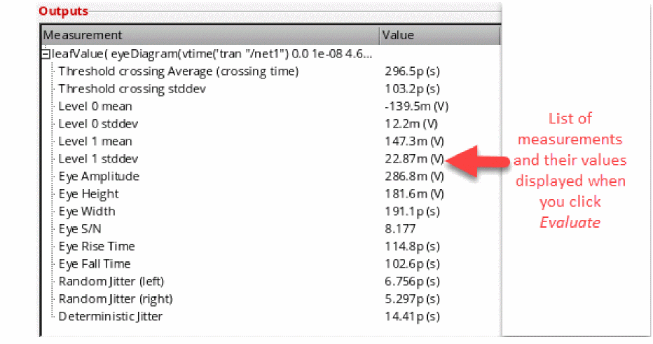
The plots for the horizontal histogram, level 0 and level 1vertical histograms, and BER curve appear in the graph window, as shown in the figure below.
You can also send these advanced measurement values to the ADE window. To do this, right-click a measurement value and choose Send To ADE – Current Expression / Generic Expression.
The expression for the selected measurement appears in the Virtuoso ADE Assembler as shown in the figure below:
If you save the waveform for the BER expression in the VCSV format and the reload the waveform, the VCSV format assigns a Y (myunit) axis to Y-axis, as shown in the figure below. Therefore, the new trace looks different as compared to the original trace plotted from the measurements.
If you want the new trace to look same as that of the original trace, right-click the Y-axis and choose scale as Log Scale, and specify the same range as given in the original plot.
Example 2: Viewing Annotations for Level 0 and Level 1
Consider the following eye diagram plotted for v/net1; tran (V) signal, as shown in the Example: Creating an Eye Diagram section. Ensure that the eye diagram is centered so that measurements are calculated accurately.

Perform the following steps to plot the eye diagram, calculate the measurement values, and view level 0 and level 1 annotations on the eye diagram:
- Open the Eye Measurements tab.
-
Select the eye diagram you plotted and specify the threshold as
0. -
Click the Annotate check boxes corresponding to Level 0 and Level 1 sections to view annotations on the eye diagrams (as shown in the figure below).
Computing Advanced Measurements
The Advanced Analysis is computed based on the following two measurement groups— horizontal histograms and vertical histograms. In the figure below, 3 sigma is used for the extent of the data as this represents 99.7% of the values in a normal distribution.
Measurements based on Horizontal Histograms
A horizontal histogram is generated based on the analysis of variation of the times at which the signal crosses the specified threshold level, as shown in the diagram below:
When you click the Evaluate button, the resulting horizontal histogram is plotted. By analyzing the mean and standard deviation of the transition times relative to the beginning of each period, various metrics are computed. The results for the following computations are displayed:
- Threshold crossing stddev—Measures the jitter of the signal. It is accurately computed only when there is a single transition region in the eye diagram because it is analyzed over the entire period, and therefore, it gives the overall standard deviation of both transition regions (as shown in the figure above).
- Threshold crossing average—Similar to the threshold crossing stddev, it is computed over the entire period.
-
Eye width—Represents the opening of the eye in X direction. It is computed as:
Measurements based on Vertical Histograms
The vertical histogram is created based on the analysis of variation of the signal value in the level 0 and level 1 regions specified in the assistant, as shown in the diagram below:

The level 0 and level 1 regions are those specified by the X and Y ranges in the Eye Diagram assistant. All the Y-points in the waveform within these regions are used to perform the statistical analysis, unless they have been sampled first according to the Sampling Interval field. In the plotted vertical histograms in the above diagram, X-axis represents the amplitude variation.
Advanced Options Results
The calculations for the threshold crossing assume that only a single transition is used; therefore, one additional metric, eye risetime, is computed. In the eye risetime, two thresholds are created at 20% and 80% points between level 0 mean and level 1 mean. At each of these two thresholds, a horizontal histogram is computed (that indicates an analysis of the times of the crossing points of these two thresholds), and the resulting risetime is the difference in the mean crossing time at each of these two thresholds.
Horizontal and Vertical Eye Width
The eye width represents the opening of the eye in the X direction and is computed as:
(Meantransition2 - 3*std(transition2)) - (Meantransition1 + 3*std(transition1))
Consider a waveform that is folded on the X-axis by the length n_period between the start time n_start and stop time n_stop. The following steps are performed to calculate the horizontal eye opening:
-
Calculates all the X points where the folded waveform intersects the line
y = yMid
where,yMid = ymax(o_waveform)+ min(o_waveform))/2 -
From these calculated X points, returns the two consecutive X points that have the maximum distance between them as the horizontal eye opening.
X[k]andX[k-1]for which the(X[k]-X[k-1])value is maximum.
The function performs the following steps to calculate the vertical eye width:
-
Calculates the horizontal eye width to find the consecutive X points,
X[k]andX[k-1]having maximum distance between them. -
Calculates all the Y points where the folded waveform intersects the following line:
x = (X[k]-X[k-1])/2 -
From these calculated Y points, returns two consecutive Y points that have the maximum distance between them as the vertical eye opening.
Y[k]andY[k-1]for which(Y[k]-Y[k-1])is maximum.
Assumptions
The following assumptions have been made while calculating the advanced option values:
-
The opening of an eye approximately lies on the following:
(ymax(o_waveform)+ymin(o_waveform))/2 - Only one eye opening exists in the area mentioned above in which the waveform is folded.
Computing the Jitter and BER Values
Consider the following histograms created for the eye_jitter waveform to detect the crossing areas.
The following histograms are created for each side and density estimation is applied to fit each histogram to a distribution J(x), as shown in the figure below:
- If deterministic jitter is present, each side's distribution is expected to have two peaks, and the deterministic jitter is the time difference of the peaks.
- Random jitter is the standard deviation of the tails of the distribution.
-
BER curves are calculated as follows:
-
Left BER plot
Integrate left distribution fromxto infinity
The mean and standard deviation of the right-side tail of the left distribution is used to estimate beyond the range of the histogram. -
Right BER plot
Integrate right distribution -infinity tox
The mean and standard deviation of the left-side tail of the right distribution is used to estimate beyond the range of the histogram.
-
Left BER plot
Working with the Eye Mask Tab
You can evaluate the eye diagram against any violation by using a compliance mask overlaid on the eye diagram waveform. To create an eye mask for the selected eye diagram, you can use the Eye Mask tab available in the Eye Diagram assistant. The eye mask can be of the following geometries: rectangular, hexagonal, diamond, and custom shaped defined in the VCSV file. For example, the figure below shows a hexagonal eye mask.
In addition, you can read an interesting blog about eye masks, see Virtuoso Video Diary: Eye Masks.
The flow chart below describes how you can create and plot the eye mask for an eye diagram.
This section includes the following topics:
- Creating a Centered Eye Diagram
- Selecting or Creating an Eye Mask
- Plotting and Evaluating an Eye Mask
- Sending an Eye Mask Expression to ADE
- Editing an Eye Mask
- Performing Various Tasks on an Eye Mask
- Example of Saving and Importing an Eye Mask in VCSV Format
Creating a Centered Eye Diagram
Perform the following steps to select or create the centered eye diagram:
-
Choose Measurements – Eye Diagram to open the Eye Diagram assistant.
Two tabs appear at the bottom—Eye Diagram and Eye Mask. - Click the Eye Diagram tab to first create an eye diagram. For more information about how to use the fields, see Eye Diagram Assistant.
Selecting or Creating an Eye Mask
There are three available methods that you can use to create an eye mask. In the first method, you can create a new eye mask based on the given shape standards. To do this, select an eye mask from the given eye mask standards, add the updated mask to the list, and save it in the VCSV file if required.
In the second method, you can select a mask geometry (shape) and then edit the X- and Y-range values and vertex points (corners of the eye mask). Then, add it to the mask list and save it in the VCSV file if required.
In the third method, you can create an eye mask using an existing eye mask, then edit the eye mask shape or coordinates, add the eye mask to the mask list, and save it in the VCSV file if required.
For detailed information about these three methods of creating an eye mask, see the topics below:
- Method 1: Creating an Eye Mask Using Existing Eye Mask Standards
- Method 2: Creating an Eye Mask Using the Given Shape
- Method 3: Creating an Eye Mask Based on the Existing Eye Mask
Method 1: Creating an Eye Mask Using Existing Eye Mask Standards
You can select a given eye mask standard to create a new eye mask. To do this, perform the following steps:
-
Click the Eye Mask tab to view the eye mask options. The figure below shows the fields available under the Eye Mask tab.
- Now, select an eye diagram in the graph window on which you want to create the eye mask. The selected eye diagram is displayed in the Select Eye field.
-
In the Mask drop-down list, select an industry standard eye mask template that you want to use.The available options are:
HDMI Compliance,HDMI 2.0 TP2EQ (Data Rate 3.4G to 3.712G),HDMI 2.0 TP2EQ (Data Rate 5.94G to 6G),MIPI M-PHY Rx Compliance,MIPI M-PHY Tx Compliance, PCI Express Gen 3 Compliance, andSFP+PCB Compliance.
By default, this drop-down displays theNew Untitled Masktext.
The selected eye mask is displayed in the mask editing area, as shown in the figure below. The X-axis of this eye mask displays the unit intervals (UI) and the Y-axis displays voltage (V). In addition, the eye mask shape and coordinates vary according to the template you select.
- After selecting the eye mask, you can plot and evaluate the eye mask with the eye diagram and send the expression to ADE outputs. For more information, see Plotting and Evaluating an Eye Mask.
- Edit the eye mask if required. The Edit Mask section is disabled when you select an industry standard eye mask, which means standard eye masks cannot be edited directly in the drop-down, but you can create a copy of the standard eye mask and edit it. To do this, select a standard eye mask from the Mask drop-down list and click the Add current mask to list button to create a copy of the selected mask. Specify a name for this new mask in the Mask drop-down list and then edit this mask. For more information, see Editing an Eye Mask.
- After editing, you can rename the eye mask and add it to the Mask drop-down list. You can also save the eye mask in the VCSV file. For more information, see Performing Various Tasks on an Eye Mask.
Method 2: Creating an Eye Mask Using the Given Shape
Perform the following steps to create an eye mask using the existing shape:
-
Select
Untitled Maskfrom the Mask drop-down. If you want to create an eye mask using the standard eye mask shape, select the standard mask from the Mask drop-down and add it to the list. - On the Eye Mask tab, enable the Edit Mask check box.
- Select a shape from the Mask Geometry drop-down and then change the X Range and Y Range coordinates if required. For more information about how to use the edit mask fields, see Editing an Eye Mask.
-
Now, click the vertex points in the mask editing area and edit the values. For example, consider you select a hexagon shape as shown in the figure below:
Now, change the X Range value from0.25to1. The mask position is changed as shown in the figure below. To edit the vertex point, click any of the vertices and type new values in the label. For example, in the figure below, the vertex value is changed from750m,-150mto700m,-150m.
- Now, save the edited eye mask if required. For information about how to add the eye mask to the Mask drop-down list, and how to save the eye mask, see Performing Various Tasks on an Eye Mask.
- After the eye mask is created, you can click the Test Mask button to test the eye mask by plotting it on the specified eye diagram in the graph window.
- You can also plot and evaluate the eye mask with the eye diagram and send expression to ADE outputs. To know about how to plot the eye mask, see Plotting and Evaluating an Eye Mask.
Method 3: Creating an Eye Mask Based on the Existing Eye Mask
Perform the following steps to create an eye mask using an already existing eye mask:
- Select an already existing eye mask from the Mask drop-down or import an eye mask from the VCSV file. For more information about how to import an eye mask from the VCSV file, see Example of Saving and Importing an Eye Mask in VCSV Format. The selected or imported eye mask is displayed in the mask editing area.
- Now, edit the mask shape, range, or coordinates. For information about editing the eye mask, see Editing an Eye Mask.
- After the eye mask is created, you can click the Test Mask button to test the eye mask by plotting it on the specified eye diagram in the graph window.
-
Then, add this edited eye mask with a new name in the Mask drop-down. For example, consider the eye mask named
EyeMask_exampleavailable in the Mask drop-down. It is of type square. You can select this eye mask and then edit the mask.
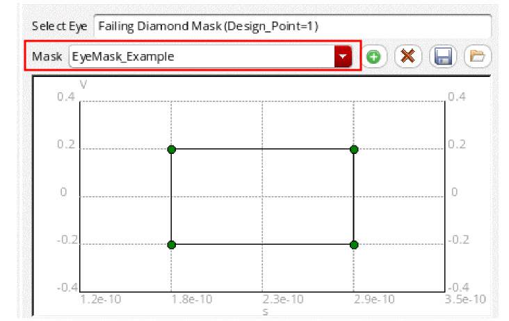You can then rename this eye mask and add it to the Mask drop-down list. For information about how to add the eye mask to the Mask drop-down list, and how to save the eye mask in the VCSV file, see Performing Various Tasks on an Eye Mask. - After creating the eye mask, you can plot and evaluate the eye mask with the eye diagram and send the expression to ADE outputs. To know about how to plot the eye mask, see Plotting and Evaluating an Eye Mask.
Plotting and Evaluating an Eye Mask
After creating or selecting an eye mask, you can plot and evaluate the eye mask.
To plot the selected eye mask,
-
Click the Plot in check box. Then, in the drop-down, select the plot destination window. The available options are
Append,Replace,New Subwindow, andNew Window.
To test whether the eye mask passes or fails, click the Test Mask button to plot the eye mask on the specified eye diagram in the graph window.
Evaluate to test mask.To annotate and evaluate the eye mask on the selected eye diagram,
-
Click the Evaluate button.
If the eye mask is displayed in green and none of the eye touches the mask, it indicates that the eye mask has passed the check. The status is also displayed asPASS.
If the eye mask is displayed in red and the eye touches the mask, it indicates that the mask has failed the check. The status is also displayed asFAIL.
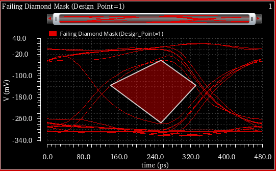
Sending an Eye Mask Expression to ADE
To send the eye mask to the ADE Outputs setup pane, choose one of the following options in the Send to ADE drop-down list:
- Plot Expression—Select this option to send the expression for the eye mask to the ADE Outputs Setup.
-
Test Expression—Select this option to send an
eyeMaskViolationPeriodCountexpression to the ADE Outputs setup regardless of whether there is a violation. You can specify the specification conditions in this expression. The expression returns a numerical value. Each strand of the eye diagram obtained from slicing the input waveform by the eye period or triggering. The value returned by this expression is the number of periods that contain a violation. For example, eyeMaskViolationPeriodCount returns5in the case below.
If you send a named mask, the name of the eye mask waveform expression is eye_<signal name>_<mask name>
The name of the named eye mask test expression is eye_<signal name>_<mask name>_test
The unnamed eye masks shows the full expression name.
The figure below shows the eye mask expressions added to the ADE Assembler Outputs setup tab.
Now, when you run the simulation, these expressions are evaluated and the Results tab displays the pass and fail results. The Nominal value indicates the number of periods by which the eye mask is violated.
Editing an Eye Mask
To edit an existing eye mask, select the eye mask from the Mask drop-down list and add it to to the mask list.
To edit the properties of the given mask, select the Edit Mask check box. The options in this group box become available for editing.

-
In the Mask Geometry field, select the geometry you want to apply on the mask. The available geometries are
Hexagon,Diamond, andRectangle. By default, this field displaysCustom, which is the default geometry value used by the selected template. The geometry of the displayed eye mask changes according to the type you select. - Click the Revert button to set the fields back to their original values, clear the Edit Mask check box, and center the eye mask. The Revert button is disabled when you select the mask and becomes available after the mask is edited.
-
In the X Range field, specify the minimum (xmin) and maximum (xmax) eye mask setup range for the X-axis. In the drop-down list next to this field, select the unit for the X-axis coordinates. The X range can be specified in unit intervals (
UI) or seconds (s). The default unit isUI, where each UI=0.5 * eyePeriod. The X-axis coordinates are relative to 0.5*UI. -
In the Y Range field, specify the minimum (ymin) and maximum (ymax) range for the eye mask for the Y-axis.
The range fields are used to control the limits of the mask editing area. If you change a range, it does not change the coordinates of the mask. However, when you change the mask shape, the mask is placed in the center according to the current axis limits. - Double-click the vertices (corners) of the mask in the setup to directly change the X and Y coordinates.
After the eye mask is edited, you can add the eye mask to the Mask drop-down list. See the next section to know how to perform various operations on the eye mask, such as adding the eye mask to the list, removing an eye mask, saving the eye mask, and importing the eye mask.
Performing Various Tasks on an Eye Mask
After selecting, creating, or editing the eye mask, you can click the following buttons to perform various tasks:
-
—Adds the selected eye mask to the template list. After editing, if you want to add the updated eye mask to the template list, click the add button. The Mask field displays the
Untitled Masktext. Then, specify a name for this eye mask. This mask is added at the top of the drop-down list of available templates. - —Removes the selected eye mask from the list of templates.
- —Saves the selected eye mask to a file. When you click this button, the Export Mask form is displayed.
- —Imports an eye mask from a file and adds it to the list of available templates. When you click this button, the Import Mask form is displayed. In this form, specify the filename and location from where you want to import the eye mask. When you click Open, the selected eye mask is added to the Mask drop-down list and also displayed in the mask editing area. The file type that you select to save eye mask should be VCSV.
Example of Saving and Importing an Eye Mask in VCSV Format
Consider the example below in which the eye mask named EyeMask_Example is saved in the EyeMask_Example.vcsv file. To save this eye mask, click the Save button. Then, specify the mask filename in the VCSV format, as shown in the figure below.
After the mask is saved, you can import it later. The coordinates of the eye mask are saved in the VCSV file. For example, the EyeMask_Example.vcsv file has the following contents:
;EyeMask_Example
;X, Y
;Re, Re
;time, V
;s, V
1.758e-10, -0.2
1.5236e-10, 0
1.758e-10, 0.2
2.93e-10, 0.2
3.1644e-10, 0
2.93e-10, -0.2
You can directly change the coordinates in this file to support arbitrary mask shapes. Now, when you import this file, the changes are reflected in the mask shape. For example, change the file coordinates as shown below to specify a square mask shape:
;EyeMask_Example
;X, Y
;Re, Re
;time, V
;s, V
1.758e-10, -0.0
1.758e-10, 0.2
2.93e-10, 0.2
Now, to import this updated file, click the Import button and select the saved mask filename, EyeMask_Example.vcsv, in the Import Mask form, as shown in the figure below.
The selected eye mask is displayed in the mask editing area as shown in the figure below. Notice that the mask shape has changed now.
The eye mask name, EyeMask_Example, is also listed in the Mask drop-down.
You can then customize this eye mask by changing the mask shape and coordinates, and save it in a different VCSV file.
You can also use the awvLoadEyeMask SKILL function to load eye masks saved in a VCSV file and add them to the Mask drop-down list of the Eye Mask tab. Each mask is saved into a separate VCSV file.
Horiz Marker Table Assistant
You use this assistant to view the interception data for horizontal markers in a table. For more information, see Displaying Intercept Data for Markers in Marker Tables.
Trace Info Assistant
You use this assistant to view information about the selected trace. To open the Trace Info, select a trace and choose Window – Assistants – Trace Info. The Trace Info assistant appears, displaying the information, such as trace name and color, Y Min, Y Max, X Min, X Max, Time, Results dir, Dataset, Time, Data Format, and Number of Data points, about the selected signal. It also displays information about the sweep and corner conditions for the selected trace.
To copy the trace properties, right-click the property and choose Copy.
For more information about the data displayed in the trace panel, see Working with Traces.
Vert Marker Table Assistant
You use this assistant to view the interception data for vertical markers in a table. For more information, see Displaying Intercept Data for Markers in Marker Tables.
Transient Measurement Assistant
The Transient Measurement assistant displays the calculated measurements for the transient markers on specific edges. The measurements can be falltime, risetime, overshoot, undershoot, and slewrate values. You can also generate the derived plots for rising and falling edges by using this assistant.
To hide the transient measurement, set the following environment variable in CIW or .cdsinit file:
envSetVal(“viva.rectGraph” “enableEdgeMeasurement” 'string “false”)
Before you start using the Transient Measurement assistant, refer to the following topics to understand some basic concepts:
- Overview
- Specifying Edge Settings
- Using Edge Browser
- Context-Sensitive Menus
- Using the Transient Measurement Assistant
- Using Markers
Overview
When you plot a trace and load the waveform, Virtuoso Visualization and Analysis XL analyses the waveform and generates a set of edges, which are referred as threshold (crossing) points. An edge traverses from a low threshold point to a high threshold point (rising edge) or from a high threshold point to a low threshold point (falling edge). Refer to the next section to know more about how to specify the properties of an edge.
Specifying Edge Settings
The Edge Settings form lets you change the edge properties and recalculate the edges.The measurements are displayed in the Transient Measurements assistant.
Do one of the following to open the Edge Settings form:
- Click the Settings button on the Transient Measurement assistant.
- Right-click the Edge Browser and choose Edge Settings.
The Edge Settings form displays a model depicting how the tool calculates edges of the selected trace. The blue reference lines in the model, as highlighted in the figure below, indicate the topline and baseline reference values. You can drag these blue reference lines on the graph to set the topline and baseline values interactively.
This form includes the following fields that you can set to modify settings of the edges for a selected trace:
-
Enable Edges—Disable this check box if you want to disable the edge calculation for the selected graph. By default, this check box is selected. When this check box is not selected, all fields in Transient Measurement assistant are disabled and the following message is displayed:
Edge calculation for current graph disabled.
To enable, check the Enable Edges checkbox in the Edge Settings dialog.
-
Threshold—Select the threshold value from the drop-down. The default threshold value is
20%-80%. - Topline—Specify the topline (maximum) value. For more information about how to calculate the topline value, see Calculating Topline and Baseline Values.
- High—Displays the maximum threshold value.
- Low—Displays the minimum threshold value.
- Baseline—Specify the baseline (minimum) value. For more information about how to calculate the baseline value, see Calculating Topline and Baseline Values.
- Restore Defaults—Click this button to fill default values in the fields in the Edge Settings form.
-
Click OK.
The specified settings are applied to the selected trace and the trace edges are recalculated. Measurements and edge markers are updated.
Calculating Topline and Baseline Values
A threshold point is where the waveform intersects the Y threshold value. A threshold Y value is defined relative to the distance between the baseline and topline values. For example, for the threshold level of 20% and 80%, low and high threshold Y values are calculated as below:
Low threshold Y value == (0.20*(topline-baseline))+baseline
High threshold Y value == (0.80*(topline-baseline))+baseline
The topline (maximum) value is the most frequent value in the upper half of the entire range of trace Y values. Similarly, the baseline (minimum) value will be the most frequent value in the lower half of the entire range of Y values.
By default, the baseline and topline values are calculated automatically using a simple statistical analysis. These values are not original values and only indicate an estimate. Therefore, there might be cases where these values do not result in generating edges. In such cases, you need to specify these values manually. The following environment variables control the topline and baseline reference values:
viva.trace autoReferenceLines string "true"
By default this variable is set to true, which means Virtuoso Visualization and Analysis XL calculates the topline and baseline reference values automatically. If set to false, the values defined by the following environment variable is returned:
viva.trace baseAndToplineReferenceHint string "0.0,3.5"
Using Edge Browser
You can use the edge browser to view and analyze the entire set of trace edges, zoom into a smaller range of edges, or zoom into a specific edge. You can use the edge context menu options to analyze a specific edge and annotate the edge with different marker types, such as edge, dx/dy, or period markers. Edge Browser also includes an individual context-menu options that you can use to generate risetime or falltime waveforms derived from the entire set of edges.
Each trace is associated with an individual edge browser, which can be displayed and hidden by clicking the Edge Browser button, as shown in the figure below. The edge browser is hidden in the first strip and displayed in the second strip.
Do one of the following to display the edge browser on the graph:
- Click the Edge Browser button as displayed in the above figure.
- Choose Graph – Edge Browser. This toggles the display of edge browsers for all strips in the graph.
- Right-click the Edge Browser button on the strip and choose Edge Browser.
-
Set the following environment variable to
true:
envSetVal(“viva.rectGraph showEdgeBrowser” 'string “true”)
If this variable is set totrue, the edge browsers are displayed in all the strips. By default, this variable is set tofalse, which means all the edge browsers are hidden in all the strips.
-
When you hover pointer on an edge in the Edge Browser, the tooltip displays the trace and edge number as shown in the figure below:
-
When the mouse pointer focus is on edge browser, you cannot create horizontal and point markers because these markers require a Y value to be specified. As a result, the bindkeys
mandhdo not work when mouse pointer is on edge browser. However, you can create vertical markers by selecting an edge in the edge browser. - All the edge controls are disabled and the measurement values are cleared in the Transient Measurement assistant to indicate that the edge calculation is in progress.
Context-Sensitive Menus
The two context-sensitive menus are available for edge and edge browser respectively.
Edge Context-Sensitive Menu
The following context-sensitive (shortcut) menu appears when you right-click the edge browser button:
This menu includes the following options:
- Edge Browser—Displays the Edge Browser for the selected trace.
- Plot—Plots the risetime or falltime waveforms.
- Edge Settings—Opens the Edge Settings form that you can use to modify the settings of the selected edge. For more information, see Specifying Edge Settings.
Edge Browser Context-Sensitive Menu
When you right-click an individual edge in the Edge Browser, the following context-sensitive (shortcut) menu appears:
- Create Edge Marker—Creates an edge marker on the selected edge. For more information about edge markers, see Working With Edge Markers
- Label with Dx/Dy—Creates a delta marker by adding two point markers at the lower and upper thresholds and a delta line between them.
- Create Period Marker—Creates a period marker on the selected edge.
-
Zoom to Edge—Zooms in the selected edge to view the details of the edge on which it is placed. The following figure illustrates the zoomed-in graph.
-
Zoom to Edge Context—Zooms in the selected edge to the context of the edge on which it is placed. The following figure illustrates the zoomed-in graph.
Using the Transient Measurement Assistant
Perform one of the following steps to open the Transient Measurement assistant:
- Choose Measurements — Transient Measurement.
-
Choose Window – Assistants – Transient Measurement.
Alternatively, you can open the tool in theTMworkspace to display the Transient Measurement assistant. The workspace can be set using the Workspace toolbar.
The Transient Measurement assistant is shown in the figure below:
This assistant includes the following fields:
-
Edges—This panel lets you navigate between edges and displays the information for the current edge. It also helps you to perform certain operations on the selected edge, such as placing an edge or a period marker, zoom into the edge and so on. This includes the following fields:
- Edge—Select the edge from the combo box for which you want to view the measurements. This also displays the number of total edges in the selected trace. The edge calculation is displayed below the Edge combo box, as highlighted in the figure above.
-
The table below lists the icons that you can click to perform certain tasks on the graph:
- Show Edge Browser—Select this check box to show or hide the edge browser for the selected trace, which is displayed at the bottom of the graph or strip. For more information about edge browser, see Using Edge Browser.
- Settings—Click this button to view and modify the edge settings of the selected trace. For more information, see Specifying Edge Settings.
- Measurements—Calculates and displays the following measurement values for the selected edge:
-
Derived Plots—Generates the derived plots for the selected edges in the graph. Derived plots are the risetime or falltime waveforms derived from the entire set of edges and plotted against time.
- Rising Edges—Click this check box if you want to generate derived plots for all the rising edges in the graph.
- Falling Edges—Click this check box if you want to generate derived plots for all the falling edges in the graph.
- Mode—Specify the plotting mode that you want to use for the derived plots. The available plotting modes are—Append, Replace, New Window, and New SubWindow.
-
Plot—Click this button to plot the specified derived plots. The figure below displays the derived plots for falling as well as rising edges in a new subwindow:


Using Markers
You can use the following markers to view and examine a specific edge:
Edge Marker
An Edge Marker annotates an edge graphically by using the current edge information. If you update the edges by using the Edge Settings form, the edge markers are also updated to reflect the new edge data. In general, an edge marker shows the top and bottom threshold points of the edge and the risetime or falltime values of the selected edge. When you zoom into the marker, the additional information is displayed to show the baseline and topline values and other details. You can change the threshold value that is displayed by an edge marker. This does not change the edge and only changes the annotation points of the edge marker. If you lock the marker, the intercepts points are not updated when the edges are changed.
For more information about edge markers, see Working With Edge Markers.
Direct Measurements Assistant
You can use the Direct Measurements assistant to quickly perform amplitude, time-domain, and frequency-domain measurements without creating expressions. Using the assistant, you can also annotate these measurements.
This section includes the following topics:
- Opening the Direct Measurements Assistant
- Overview of the Direct Measurements Assistant
- Working with the Amplitude Tab
- Working with the Time Tab
- Working with the Freq Tab
Opening the Direct Measurements Assistant
To open the Direct Measurements assistant:
-
From the menu bar of Virtuoso Visualization and Analysis XL, choose Window – Assistants – Direct Measurements.
The Direct Measurements assistant opens.

Overview of the Direct Measurements Assistant
The Direct Measurements assistant contains the following tabs:
-
Amplitude
This tab is available for both ac and transient signals. You can use this tab to perform the following amplitude measurements: -
Time
This tab is available only for transient signals. You can use this tab to perform the following time-domain measurements: -
Freq
This tab is available only for ac signals. You can use this tab to perform the following frequency-domain measurements:
Working with the Amplitude Tab
This section describes how to measure the amplitude of a signal by using the Amplitude tab of the Direct Measurements assistant:
Specifying the Measurement Region
You can specify the measurement region on the X-axis that you want to consider when performing amplitude measurements of a signal.
To specify the measurement region:
-
Click the arrow next to X Axis Measurement Region to expand the available options.
The options are displayed, as follows:
-
Select one of the following options:
-
Visible range: Measurements are performed only on the part of the waveform that is currently visible in the graph window. You can change the visible range by adjusting the pan bar.
-
Entire waveform: Measurements are performed on the entire waveform of the signal.
-
Between markers: Measurements are performed on the part of the signal that is between the vertical markers or point markers.In this case, also specify the names of the vertical or point markers in the A and B fields, as follows:
-
Specify: Measurements are performed on the part of the signal that falls between the specified range on the X axis. Specify the range manually in the From and to fields.
-
Visible range: Measurements are performed only on the part of the waveform that is currently visible in the graph window. You can change the visible range by adjusting the pan bar.
-
Select Show region on axis if you want to display an extent marker over the X axis, highlighting the region of measurement.
The measurement region is highlighted, as shown in the following figure:
Measuring the Amplitude of a Signal
To measure the amplitude of a signal:
- In a graph window, select the signal whose amplitude you want to measure.
-
From the menu bar of Virtuoso Visualization and Analysis XL, choose Window – Assistants – Direct Measurements.
The Direct Measurements assistant opens, displaying the selected signal.
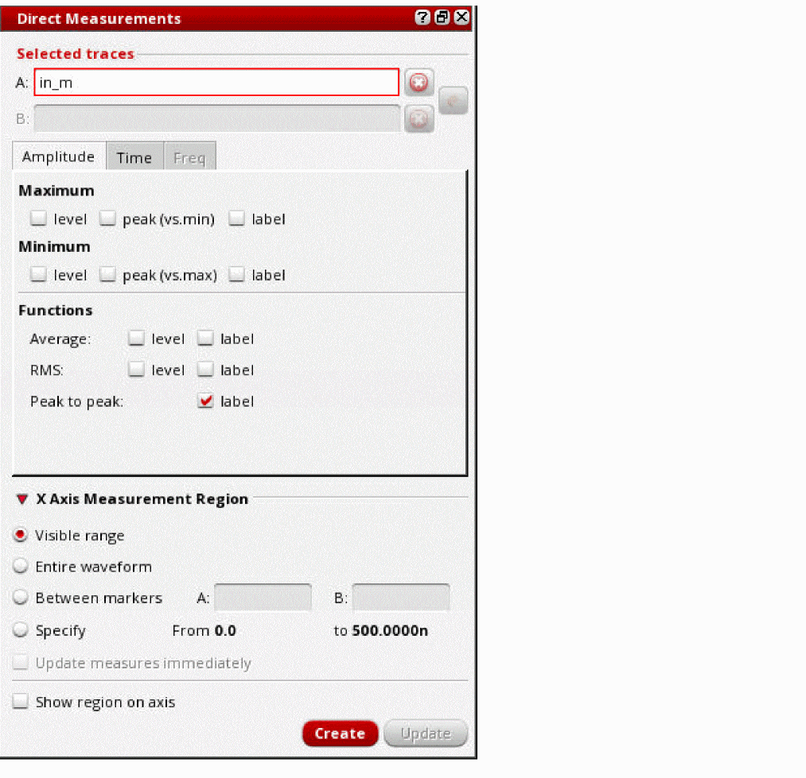 -
In the Maximum section on the Amplitude tab, select one or more of these options:
-
level: To display the location of the maximum value and to highlight the maximum level with dotted lines.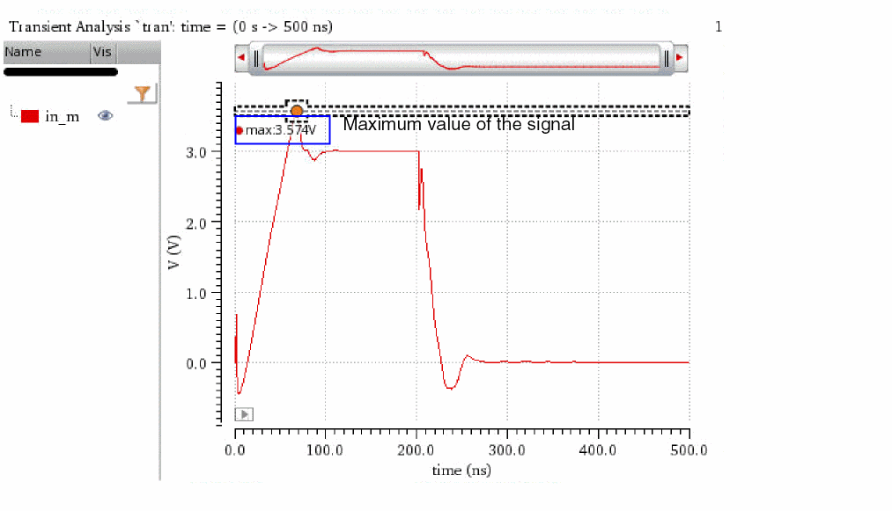
-
peak (vs. min): To display the location of the maximum value and to highlight the peak-to-peak value of the signal.
-
label: To display the maximum value of the signal, name of the signal, and type of the measurement in a label.
-
level: To display the location of the maximum value and to highlight the maximum level with dotted lines.
-
In the Minimum section, select one or more of the following fields:
- level: To display the location of the minimum value and to highlight the minimum level with dotted lines.
- peak (vs. min): To display the location of the minimum value and to highlight the peak-to-peak value of the signal.
- label: To display the minimum value and name of the signal, and type of the measurement in a label.
- In the Functions section, select one or more of the following fields:
-
In the X Axis Measurement Region section, specify the measurement region on the X axis.
See the Specifying the Measurement Region section for more information. - Click Create to perform the selected amplitude measurements.
Working with the Time Tab
The following figure shows the various sections of the Time tab.
The following topics describe how to specify various options to perform time-domain measurements using the Time tab:
- Specifying Time-Domain Measurements
- Specifying Threshold Values
- Specifying Edge Threshold Levels
- Specifying the Method to Calculate High and Low Levels
- Specifying Annotate Options
- Measuring Delay between Signals
Specifying Time-Domain Measurements
To specify the time-domain parameter that you want to measure:
- From the Measure drop-down list, select one of the following time-domain parameters:
- For Frequency, Pulse width, and Period measurements, select either Positive pulse or Negative pulse.
Specifying Threshold Values
- In the Threshold section, select one of the following options to specify threshold values of the signal to be used in time-domain measurements:
Specifying Edge Threshold Levels
To specify the edge threshold levels:
- From the Measure drop-down list on the Time tab, select either Rise time or Fall time.
-
In the Edge Threshold Levels section, select one of the following options:
- 90/10%: The rise time or fall time is calculated, as follows:
- 80/20%: The rise time or fall time is calculated, as follows:
-
Specify absolute: Specify the absolute threshold values in the High and Low fields.
The rise time is calculated as the time taken by the signal to reach from the specified low value to the specified high value.
The fall time is calculated as the time taken to reach from the specified high value to the specified low value.
Specifying the Method to Calculate High and Low Levels
In the High/Low Levels section of the Time tab, specify how you want to calculate the high and low levels of the signal:
- Calculate from X axis region: To automatically calculate high and low levels for the part of the waveform that is currently visible in the graph window. You can change the visible range by adjusting the pan bar.
- Calculate from entire waveform: To automatically calculate high and low levels for the entire waveform of the signal.
- Use waveform max/min values: To use the maximum and minimum values of the signal as the high and low levels, respectively.
- Specify absolute values: To manually specify the absolute values for high and low levels.
Important points:
- High level of the signal: Most frequent Y-axis value in the upper-half of the signal.
-
Low level of the signal: Most frequent Y-axis value in the lower-half of the signal.
The following figure shows the high and low levels of the signal being automatically calculated for the currently visible range of the waveform:
Specifying Annotate Options
In the Annotate section of the Time tab, specify how you want to annotate the measured values:
-
Only first cycle: Annotates the measurement only for the first cycle of the signal.
-
Maximum value: Annotates the maximum value of the measurement.
Measuring Delay between Signals
To measure the delay between two signals:
-
Plot the signals in a graph window.
-
From the menu bar of Virtuoso Visualization and Analysis XL, choose Window – Assistants – Direct Measurements.
The Direct Measurements assistant opens, displaying the selected signals.
- From the Trace A and Trace B drop-down lists, select the edge type of the signals.
-
In the Trace A Settings and Trace B Settings sections, specify the threshold, high, and low-level values of trace A and trace B, respectively.
Refer to the Specifying Threshold Values and Specifying the Method to Calculate High and Low Levels sections for more information. -
In the Annotate section, select one of the following options:
- Only first cycle: Annotates the measurement only for the first cycle of the signal.
- Maximum value: Annotates the maximum value of the measurement.
- Minimum value: To annotate the minimum value of the measurement.
- All values as waveform: All measurement values are plotted against the time, thereby constituting a waveform.
-
Click Create.
The delay between signals is measured and annotated in the graph window.
The following example shows the delay measured for the 50% levels of the signals between the first rising edge of trace A and the first falling edge of trace B.
Working with the Freq Tab
This section describes how to use the Freq tab of the Direct Measurements assistant to measure frequency-domain parameters:
Measuring the Bandwidth of an AC Signal
To measure the bandwidth of an ac signal:
- In a graph window, select an ac signal whose bandwidth you want to measure.
-
From the menu bar, choose Window – Assistants – Direct Measurements.
The Direct Measurements assistant opens, displaying the selected signal.
- On the Freq tab, from the Measure drop-down list, select Bandwidth.
- From the Threshold drop-down, select either 3dB or 6dB.
-
From the Band options, select one of the following response types: Low pass, High pass, and Band pass.
For more information about these options, refer to the bandwidth Calculator function. - Click Create.
Measuring Stability Margins
To measure stability margins of an ac signal:
- In a graph window, select an ac signal whose stability margins you want to measure.
-
From the menu bar of Virtuoso Visualization and Analysis XL, choose Window – Assistants – Direct Measurements.
The Direct Measurements assistant opens, displaying the selected signal.
- In the Freq tab, from the Measure drop-down list, select Stability margins.
-
In the Stability section, select the stability measures by clicking the following check boxes:
- Gain margin: To measure the gain margin. Refer to gainMargin for the definition.
- Phase margin: To measure phase margin. Refer to phaseMargin for the definition.
-
In the Annotate section, select one of the following options:
- In place: The gain and phase margin measurements are annotated in the same subwindow where the trace is present.
-
In new subwindow: The gain and phase margin measurements are annotated in a new subwindow. Select one of the following options:
-
As Bode plot (gain/phase vs. frequency): The gain in
dBsand phase indegreesare plotted against the frequency in Hertz. -
As Nichols chart (gain vs. phase): The gain in
dBsis plotted against phase indegrees. Using this chart, measures of stability (phase margin and gain margin) can be read directly.
-
As Bode plot (gain/phase vs. frequency): The gain in
- In the Marker Options section, select one of the following:
Customize Trace Groups Assistant
This assistant is used to customize the trace settings for the traces that belong to a common family.
Perform the following step to open the Customize Trace Group assistant:
The traces in the graphs are updated based on the filter value you select in each field. The filter values can be: none, trace, leaf, family, Corner, and sweep variables.
-
Strip—Specify how you want to display the traces in a strip. Traces that belong to the filter value you select are displayed in the same strip. For example, if you select
family, all the traces that belong to a common family are displayed in the same strip. - Color—Specify the color of the traces. The traces that belong to the specified filter value you select are displayed in the same color. Traces can be displayed in 18 different colors and after that the colors are repeated.
- Symbol—Specify how symbols are to be shown on traces. The traces that belong to the specified filter value you select display the same type of symbols. By default, the symbol type is plus. To change the symbol type, right-click the trace and select the symbol type from the Symbol menu.
- All Subwindows—Select this check box to update the traces in all subwindows based on the options you select in this form.
- Click Apply.
Example1: Displaying traces belonging to a common family in one strip:
Set the fields in the Customize Trace Settings assistant as shown in the figure below:
When you click the Apply button, the traces in the graph are updated as shown in the figure below. Notice that traces belonging to a common family (V0:p and OUT) are displayed in the same strip.

Example2: Displaying traces that belong to a common VDD value in one strip and common corners in same color:
Set the fields in the Customize Trace Settings assistant as shown in the figure below:
In this example, notice that the traces with similar VDD value are displayed in the same strip and traces that belong to similar corners are displayed in same color.
Example3: Displaying traces that belong to a common temperature value with same type of symbols displayed on them
Set the fields in the Customize Trace Settings assistant as shown in the figure below:
In this example, notice that the traces with similar temperature value are displayed in the same color and also display the similar types of symbols on them.
Working with Workspaces
A workspace is the arrangement of various assistants and the window settings that you specify while working with a graph. You can either use the available workspaces or create your own workspace while working in the window.
Workspace Types
The available workspaces are of four types:
- Basic—This workspace displays the following dockable assistants:
- Browser—This workspace displays the following dockable assistants:
- Classic—This workspace displays only the graph window.
- MarkerTable—This workspace displays the following dockable assistants:
- TM—This workspace displays the following dockable assistants:
If you open the tool in stand-alone mode, it is opened in the Basic workspace because in stand-alone mode you work on the saved simulation results.
If you open the tool from within ADE, it is opened in the Classic workspace because in ADE you work on the simulation results for the current run.
When you open a new Virtuoso Visualization and Analysis XL session from the same Virtuoso window, the workspace that you specified in the previous session is available.
Saving a Workspace
You can customize a workspace by selecting the assistants that you want to display from the Window – Assistants menu. You can then save the customized workspace by doing one of the following:
- Choose Window – Workspaces – Save As.
-
On the Workspace toolbar, select the
 option.
option.
The Save Workspace form appears.
In this form, specify the name with which you want to save the workspace and select the path where you want to save the workspace. You can specify a new name or can make changes to an existing workspace.
If you do not want to save tWorking With Assistantshe changes you made to the existing workspace, choose Windows – Workspaces – Revert to Saved to revert to the factory settings.
Loading a Workspace
To load a workspace, do one of the following:
-
Choose Windows – Workspaces – Load.
The Load Workspace form appears. In this form, select the workspace you want to load. - On the Workspace toolbar, select the required workspace from the Workspace drop-down list box.
Deleting a Workspace
To delete a workspace, choose Windows – Workspaces – Delete.
The Delete Workspace form appears. Select the name of the workspace that you want to delete.
Setting the Default Workspace
To set a workspace as the default workspace, choose Windows – Workspaces – Set Default.
The Default Workspace form appears. Select the name of the workspace that you want to set as the default.
Showing and Hiding Assistants
To show or hide the assistants in the workspace, do one of the following:
- Choose Windows – Workspaces – Show/Hide Assistants
-
Press the
F11key to hide or show the assistants. - On the Workspace toolbar, select the option.
Working with Traces
A signal when plotted in the window is called a trace. Each trace in the window is displayed in a different color. The graph supports 18 unique colors. The information displayed in the area to the left of the trace is called the trace legend. A splitter line separates the trace and the trace legend area.
To highlight a trace in the window, select the legend corresponding to the trace or select the trace in the graph.
The trace legend area displays the following information:
- The name and color of all the traces plotted in a graph.
- The corner names and sweep parameters from ADE L/XL in separate columns that can be sorted.
-
The trace families, based on sweep parameters, in a hierarchical order. To view the analog traces in a family or the digital traces in a bus, click the
+symbol in the trace legend area.
Filtering Trace Legends
You can use the Legend Filter form to:
- Apply filters to selectively view the traces that you want to work upon
- View only the filtered traces in the graph window or subwindow
- View information, such as history, test, and corner, about the traces plotted in a graph
Opening the Legend Filter Form
-
In the trace legend area, click the legend filter icon,
, to open the Legend Filter form, as shown in the following figure.The Legend Filter form opens.
The location of the legend filter icon, , depends on the legend position specified on the Graph Options tab of the Graph Properties form. The following table shows the location of legend filter icon for different legend positions.
| Legend Position | Location of the Legend Filter Icon | |
|---|---|---|
|
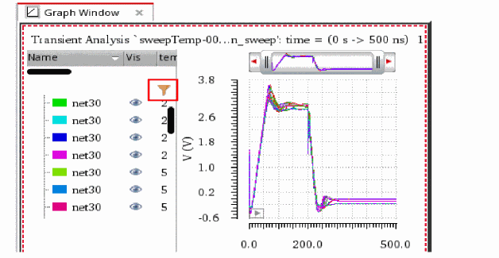
|
||
|
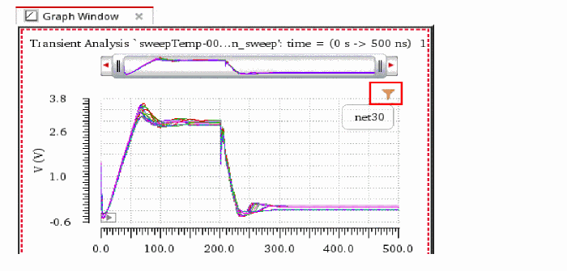
|
||
|
|
||
Applying Filters to Traces
You can apply filters to the traces in the Legend Filter form to selectively view the traces that you want to work upon.
Perform the following steps to apply filters to the traces:
-
Right-click anywhere in a filter field to specify the advanced filter options, as shown in the following figure.The following table describes the various advanced filter options.
-
Enter the filter criteria in the filter field below the required column header.The following examples show how you can set the filter criteria:
-
Filter values that are greater than the specified value
If you want to view only the traces for which temperature value is greater than75, type>75in the filter field below the temp column, as shown in the following figure. -
Filter values that are less than the specified value:
If you want to view only the traces for which vdd value is less than4.9, type<4.9in the filter field below the vdd column, as shown in the following figure. -
Filter values that are in the specified range:
If you want to view only the traces for which vdd value is greater than4.5and less than5.3, type>4.5 <5.3in the filter field below the vdd column, as shown in the following figure.
-
Filter values that are greater than the specified value
-
You can apply multiple filters in the Legend Filter form. The following figure shows an example where more than one filters are applied to the traces.
-
Select the Set Visibility by Filter check box if you want to view only those traces in the graph that meet the filtering criteria. The following figure shows an example of how the visibility of the traces in the graph is automatically set based on the applied filters when you select the Set Visibility by Filter check box.
Important Points to Note
-
You can also set vertical marker values as the filtering criteria if a vertical marker is attached to a trace. The following figure shows an example where a vertical marker,
V1, is attached to the trace and a filter,<2.9, is applied. - Click the column headers to sort the values in the ascending or descending order.
- Click Clear All Filters to clear all the applied filters.
- Select the Always on Top check box to keep the Legend Filter form on top of all the Virtuoso windows regardless of which window you have currently selected. You can resize and move the Legend Filter form to keep it side-by side of the Virtuoso Visualization & Analysis XL window for better analysis and visibility of the graphs.
- You can also use the trace menu commands from the Legend Filter form. To use the trace menu commands, select a trace and then right-click to choose the command that you want to use.
- When you toggle the visibility of a trace by clicking the visibility icon, , the Set Visibility by Filter check box is deselected.
- You can filter legends on both rectangular and circular graphs.
Viewing Information about the Traces
-
To view information about the traces plotted in the graph, right-click anywhere in the column header, and then choose the required column. For example, if you want to view history name, choose History, as shown in the following figure.
Some Useful Features
- Each trace in the trace legend area displays a Visibility button that you can use to show or hide traces.
-
You can resize the trace legend area by dragging the dynamic splitter on the right. You can also adjust the width of each column in the trace legend area.
By default, the trace legend is displayed on the left of the graph. You can also move the trace legend inside the graph or to the top of each strip by using the Graph Properties form. For more information, see Editing Graph Properties.
Following are the situations in which the legend positions—left, top, or inside—are used:- The trace legend on the left is suitable for the plots containing sweeps, corners, and families. When you plot only a few signals per strip, in some cases, you may notice that keeping trace legend at left results in the wastage of a lot of graph space.
- The legend on the top is suitable in cases when a few signals are plotted per strip and not suitable for family plots.
- The inside legend takes the minimum space, thereby, giving the maximum space to original plots. The inside legend does not show additional information about the plots, such as sweep, corner. In addition, unlike other legend positions, the inside position does not support cross-selection of signals.
-
If a trace name is long, it is elided from the middle to show the starting and ending text of the trace name, as shown in the figure below. The tooltip displays the full trace name.
- When you select multiple traces in trace legend or select all the traces by using the Trace – Select All – In Graph menu command, then only the first group, which has some traces selected in the trace legend, is expanded and the other groups are displayed in the non-expanded form for performance reasons. Also note, after the selection is made, all the traces remain selected irrespective of the expanded and non-expanded groups. You can manually expand the groups to view the selected traces.
- When you plot traces belonging to a sweep data, do the following to show or hide sweep variables in the trace legend:
-
When you work with live simulation results where traces are generated through real-time tuning (RTT) or the setup has embedded variables, the trace legend displays the parameter values along with the trace name.The tooltip on the trace name in legend shows each parameter name and its value in a new line.
The trace legend for the waveform info-balloon on schematic also works in the similar way. When the legend is positioned at left or top, the tooltips on the trace names displays the trace name and the parameter names and values as shown in the figure below.
Displaying History, Test, and Design Point Information in Graphs
When you plot waveform results for a particular history in Virtuoso Visualization and Analysis XL, the related history, test, and design point information for the plotted waveform is displayed at the following locations:
Trace Legend
The trace legend of the graph includes columns to show the History, Test, and Design Point information. By default, these columns are not displayed in the trace legend. To display them, right-click anywhere in the column header and choose the required column, as shown in the figure below.
Trace Info Assistant
The Trace Info assistant displays the History and Test information about the trace that is currently selected in the graph window, as shown in the figure below:
Status Bar
When you move the mouse pointer over a trace in the graph window, the status bar displays its history, test, and design point information, as shown in the figure below:
Markers
You can add the following marker labels to show information about history, test, and design point using the Create Graph Marker form.
The following figure shows the marker labels added on the point marker M1.
Selecting Traces
You can select one or more traces in a graph by doing the following:
- To select a trace, click the trace in the graph or click the trace name in the trace legend area.
-
To select all traces in a graph or a subwindow, press
Ctrl+Shift+A. -
To select all traces in a strip, press
Ctrl+A.
Using Trace Menu Commands
You can select a trace and choose one of the following Trace menu commands to manipulate traces in a window:
- Symbols On—Displays the symbols on the individual data points for the selected trace.
- Select By Family—Selects the traces from the parametric sweeps by family, instead of selecting an individual leaf.
- Strip By Family—Adds all the traces belonging to a family to a strip.
- Select All—Selects all the traces in a graph or in a strip in the active window or subwindow.
-
Delete All—Deletes all the traces in the active window or subwindow. You can also use bindkey
Ctrl+Eto delete all the traces in a window. - Move to—Moves the selected trace to the following locations:
-
Copy to—Copies the selected trace to the following locations:
- New Window—Copies the selected trace to a new window.
- New Subwindow—Copies the selected trace in a graph to a new subwindow.
- New Strip—Copies the selected trace in a graph to a new graph strip. This is especially useful when you want to study a single trace separate from a set of parametric leaf waveforms. You can alter trace selection to select signals by family, rather than by selecting individual traces, by choosing Trace - Select by Family.
To show or hide traces, right-click the trace and choose Visible. The red check mark is displayed with this option indicating that the trace is visible.
Setting the Style of the Traces
To set the style of a trace, right-click anywhere on a trace to open the trace menu commands, and then choose Style – options.
The following table describes the different styles that you can apply to a trace.
| Style Options | Example |
|
|
|
|
|
|
|
|
|
|
|
|
|
|
You can also change the styles of the trace by setting the following environment variable:
envSetVal("viva.trace" "lineStyle" 'string "solid")
Valid values are: solid, dot, dash, dashdot, dashdotdot
Setting the Thickness of the Traces
To set the width of a trace, right-click anywhere on a trace to open the trace menu commands, and then choose Width – options.
The following table describes the different width that you can apply to a trace.
| Width Options | Example |
 |
|
|
|
|
|
|
|
 |
You can also change the thickness of the trace by setting the following environment variable:
envSetVal("viva.trace" "lineThickness" 'string "fine")
Valid values are: fine, medium, thick, extrathick
Setting the Color of the Traces
To set the color of a trace, right-click anywhere on a trace to open the trace menu commands, and then choose Color – options.
You can also change the color of the trace by setting the following environment variable:
envSetVal("viva.trace" "hiliteColor" 'string "lime")
Dragging Traces
Traces support the following drag-and-drop operations:
- You can drag traces from one window to another.
- You can drag traces from one subwindow to another. The window to which you drag a trace becomes the active window.
- You can drag traces from one strip to another.
Tracking Cursor
The tracking cursor displays the color and name of the trace and its X- and Y-axis values when you drag a trace. Do one of the following to display tracking information on the tracking cursor:
Hiding and Showing Traces
To show or hide a trace, do the following:
Deleting Traces
To delete a trace from a graph, subwindow, or strip, do one of the following:
-
Select the trace and choose Edit – Delete, or press the
Deletekey. - Right-click the trace and choose Delete.
To delete all traces in a subwindow, select a trace and do one the following:
Setting Trace Properties
The default trace properties are controlled by the values assigned to variables in the .cdsenv file. For more information, see Appendix A, “Virtuoso Visualization and Analysis XL Tool Environment Variables.”
Follow these steps to set the trace properties for a trace:
-
Select a trace and choose Trace – Properties.
Alternatively, double-click a trace in the window.
The Trace Properties for <trace-name> form appears.
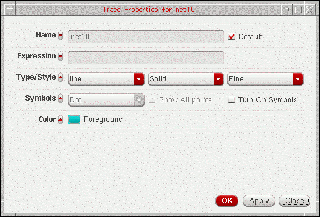 -
In this form, set the trace properties:
- In the Name field, type the name for the trace or select the Default check box to display the default trace name. When you select the Default check box, the Name field becomes unavailable. The Name and Default fields are not available if you select more than one trace.
- In the Expression field, type the expression associated with the selected trace or get the expression from the Calculator Buffer.
- In the Type/Style fields, do the following:
- In the Symbols field, select the Show All Points check box to display data points on the trace and specify the number of points to be displayed.
- In the Points per Symbol field, specify whether you want data points to be displayed on the trace as symbols of Point, Dot, Plus, Square, Box, X, Circle, and so on.
- In the Color field, select the foreground color for the trace. Alternatively, you can also set the trace color by right-clicking the trace and selecting Color.
-
Click OK.
For more information about the selected trace, choose Window – Assistants – Trace Info Panel. The Trace Info Panel assistant appears, displaying the Name, Max value, Min value, and Data points of the selected trace.
Setting Digital Trace Properties
To change the properties of a digital signal, right-click the digital signal and choose Digital Trace Properties.
The Digital Trace Properties for <signal name> form appears. This form includes the following fields:
- Name—Specify the name for the trace or select the Default check box to display the default trace name. When you select the Default check box, the Name field becomes unavailable. The Name and Default fields are not available if you select more than one trace.
- Style—Specify whether you want the trace style to be Solid, Dashed, Dotted, or DotDashed, or DashDotDot. And, specify whether you want the trace width to be Fine, Medium, Thick or ExtraThick. Alternatively, you can set the trace style and width by right-clicking the trace and selecting Style and Width respectively.
- Color—Select the foreground color for the trace. Alternatively, you can set the trace color by right-clicking the trace and selecting Color. By default, the trace is displayed in green.
- Click OK.
Setting Properties for Multiple Traces
You can set the properties for more than one trace at a time. To perform this, select the traces by using the Ctrl key and choose Trace – Properties.
The Trace Properties for selected objects form appears.
You can change the form fields by clicking the arrow button adjacent to each field name (as highlighted in the figure above).
Ctrl key, such as two or more vertical markers, and choose Marker – Properties. The <Marker-name> Properties for selected objects form appears. You can then use this form to change the properties for selected markers in a single step.Displaying Symbols on a Trace
To display symbols for the data points on a trace, do one of the following:
You can control the symbol type and the number of data points that can be identified by the symbols. The symbol used for the trace is displayed next to the trace name.
The following figure illustrates how two traces can be distinguished by using symbols for the data points.
Exporting a Trace
To export a trace from the window in a variety of formats and later load it in the required application. You can also save a clipped part of the dataset by specifying the start and end values, or interpolate the data before saving it. By exporting a trace, you can also save the expressions associated with the trace.
To export the trace, do one of the following:
- Select the trace and choose Trace — Export.
-
Right-click the trace and choose Send To – Export.
The Export Waveforms form appears. For detailed information about the fields in this form and how to save a trace using this form, see Exporting Signals.
Sending Trace Expressions to Calculator
To send the expression associated with a trace in the window to the Calculator, select the trace for which you want to send the expression to the Calculator and do one of the following:
- Choose Tools – Calculator.
-
Right-click the trace and choose Send To – Calculator.
The Calculator window appears with the expression for the selected signal displayed in the Buffer.
You can select more than one trace by holding down theShiftorCtrlkey and clicking the traces you want to select. The most recently selected trace appears in the Buffer and the remaining traces are added to the Stack with the recently selected trace at the top of the stack.
Sending Traces to ADE
To include the expressions for the traces displayed in a graph directly to ADE Outputs Setup tab, right-click a trace and choose Send To – ADE. The expression for the selected trace is added to ADE as a new output and evaluated when you run the simulation.
You use this option if you want to evaluate the expression for the trace in the current simulation run in ADE.
When you send the measurement values obtained from assistants to ADE, such as Eye Diagram and Spectrum toolbox, the alias name in the ADE displays the assistant name and the measurement name. For example, if you send the DC Power value from Spectrum toolbox to ADE, it is displayed with the spectrum_dcpower alias name. Similarly, the Level0 Mean value calculated from Eye Diagram is displayed with the eye_level0Mean alias name.
When you plot a signal from Results Browser, then right-click the plotted signal in the graph window and choose Send To – ADE, the expression for the plotted signal is added in the ADE Explorer or ADE Assembler Outputs Setup pane, as shown in the figure below:
Working with Strips
You can append multiple traces to a graph. If you want to view the individual traces, you can split the graph into strips that are arranged vertically. Each strip has its own Y-axis and shares the X-axis with the other strips. The window displays the trace legend separately for each individual strip.
The active strip is determined by a yellow bar displayed on the left of the strip. If you want to change the order in which the strips are displayed, drag the strips. You can drag a strip to any of the following locations:
- To a strip—the trace is appended to the strip.
- To an area outside the strip—the trace is placed in a new strip below the strip closest to the point to where you drag the strip.
You can also resize the active analog strip by dragging the strip splitter.
This section includes the following topics:
Splitting Strips
In the following figure, the signals net10 and out are displayed in a single strip. Both the signals constitute a family of waveforms, containing 30 child traces grouped together. Each of these child traces represents a waveform of the signal plotted for different set of temp and vdd values.
You can split the strip in any of the following ways:
-
Split by trace
To display all the traces individually in different strips, do one of the following:-
From the Set Strip By Parameter drop-down list, select trace, and then click either Split All Strips or Split Current Strip.
- In the Customize Trace Groups assistant, from the Strip drop-down list, select trace, and then click Apply.
The strip is split to display all the traces individually in different strips:
-
From the Set Strip By Parameter drop-down list, select trace, and then click either Split All Strips or Split Current Strip.
-
Split by leaf
To display the leaf traces that have the same set of temp and vdd values in a single strip, do one of the following:-
From the Set Strip By Parameter drop-down list, select leaf, and then click either Split All Strips or Split Current Strip.
- In the Customize Trace Groups assistant, from the Strip drop-down list, select leaf, and then click Apply.
The strip is split to display all the leaf traces in a single strip:

-
From the Set Strip By Parameter drop-down list, select leaf, and then click either Split All Strips or Split Current Strip.
-
Split by family
To display the traces that belong to a common family in a single strip, do one of the following:-
From the Set Strip By Parameter drop-down list, select family, and then click either Split All Strips or Split Current Strip.
- In the Customize Trace Groups assistant, from the Strip drop-down list, select family, and then click Apply.
The strip is split to display the traces belonging to a common family in an individual strip:
-
From the Set Strip By Parameter drop-down list, select family, and then click either Split All Strips or Split Current Strip.
-
Split by temp
To display the traces that have the same temp values in a single strip, do one of the following:-
From the Set Strip By Parameter drop-down list, select temp, and then click either Split All Strips or Split Current Strip.
- In the Customize Trace Groups assistant, from the Strip drop-down list, select temp, and then click Apply.
The strip is split to display all the traces that have the same temp values are displayed in a single strip.
-
From the Set Strip By Parameter drop-down list, select temp, and then click either Split All Strips or Split Current Strip.
-
Split by vdd
To display the traces that have the same vdd values in a single strip, do one of the following:-
From the Set Strip By Parameter drop-down list, select vdd, and then click either Split All Strips or Split Current Strip.
- In the Customize Trace Groups assistant, from the Strip drop-down list, select vdd, and then click Apply.
The strip is split to display all the traces that have the same vdd values are displayed in a single strip.
-
From the Set Strip By Parameter drop-down list, select vdd, and then click either Split All Strips or Split Current Strip.
Combining Graph Strips
You can combine one or more strips by dragging them to a single strip.
Consider the following graph window, where various analog and digital traces are plotted in different strips.
To combine digital signals into one strip and to combine analog signals into another strip, do one of the following:
- Choose Graph – Combine All Analog Traces.
- Right-click anywhere in the window and choose Combine All Analog Traces.
-
Click the button on the Strip toolbar.
The analog traces displayed in the various strips are combined into a single strip. Similarly, all the digital traces are combined into another strip.
Moving Traces
Do one of the following to move the selected traces in a graph to a new window, subwindow, or strip:
- Select a trace and choose Move to – Move Selected Traces to a New Window/Move Selected Traces to a New Subwindow/Move Selected Traces to a New Strip.
- Select the traces that you want to move. Right-click the selection and choose Move to – New Window/New Subwindow/New Strip.
- Select the traces and click the button on the Strip toolbar.
Copying Traces
Do one of the following to copy the selected traces in a graph to a new window, subwindow, or strip:
- Select a trace and choose Copy to – Move Selected Traces to a New Window/Move Selected Traces to a New Subwindow/Move Selected Traces to a New Strip.
- Select the traces that you want to move. Right-click the selection and choose Copy to – New Window/New Subwindow/New Strip
- Select the traces and click the button on the Strip toolbar.
Setting Strip Properties
You can set the heights of strips by using the Strips tab on the Graph Properties form.
To set the heights of the strips:
-
Do one of the following to open the Graph Properties form:
The Graph Properties form appears.
- On the Strips tab, set the Minimum values of Analog Height and Digital Height of the strips of analog and digital signals, respectively.
- Click Plot into New Strips check box if you want to plot analog traces into new strips.
-
Click Apply, and then click OK.
Consider the following graph window in which analog signals (net38andnet018) and digital signals (dig1anddig2) are plotted in strips with their default heights.
The following figure shows how the strip heights of the analog and digital signals change when you set the Minimum value of Analog Height to
20and Minimum value of Digital Height to200.
The following figure shows how the strip heights of the analog and digital signals change when you set the Minimum value of Analog Height to200and Minimum value of Digital Height to20.
Locking and Unlocking Strips
You can lock and unlock a strip while splitting the traces into different strips.
To lock a strip, right-click anywhere in the window and choose Lock Strip Size. A red check mark is displayed before this command and a lock icon appears at the top right corner of the strip, displaying the strip in the locked mode. If you change the size of any other strip in the window, it does not change the size of the locked strip.
To unlock the strip, right-click anywhere in the window and choose Lock Strip Size. The lock icon is no longer displayed and you can resize the strip now.
Working with Sweeps
To display the sweep data for a family in the same strip, choose Trace – Strip by Family before plotting the sweep data. Now, if you select to display traces in strips, each trace family is displayed in a separate strip.The trace legend area displays the traces in the family. Click the + sign to view all traces.
- To select an individual trace in the family, click the trace in the trace legend area.
-
To select all the traces in the family, choose Trace – Select By Family. Now, when you select a signal in the trace legend area, the entire family is selected. Alternatively, you can select all signals in the family by using the
Ctrlkey.
To display the traces from the sweep data in individual strips, ensure that the Trace – Strip By Family is not selected. Then, right-click anywhere in the graph and choose Split Current Strip.
Changing Trace Properties for Family
To change the properties of a trace in the family, right-click the trace in the trace legend and choose Trace Properties. For more information about how to use the Trace Properties form, see Setting Trace Properties.
To change the properties of all traces in the family, select the traces by using the Ctrl key and choose Trace Properties. The Trace Properties for selected objects form appears. For more information about this form, see Setting Properties for Multiple Traces.
To change the trace group properties for a family of traces, right-click the family header in the trace legend and choose Trace Group Properties. The TraceGroup properties for family-name form appears.
Swapping Sweep Variables
The sweep data can include multiple sweep variables; however, you can plot sweep data analysis results by using only two variables at a time. If you want to plot the sweep data results with another variable, you can swap the X-axis variable with this variable.
To swap the sweep variables in the graph:
-
Right-click the X-axis and choose Swap Sweep Var.
The Swap Sweep Var form appears. You cannot perform any action in the Virtuoso Visualization and Analysis XL window when the Swap Sweep Var form is open.
The Sweep Variables drop-down list box in this form displays all the sweep variables. Now, perform the following steps:-
Select from the drop-down list the sweep variable that you want to swap and specify the plot destination that can be a new window or a subwindow.
- Click OK.
A new graph is created according to the swapped variable for the X-axis.
-
Select from the drop-down list the sweep variable that you want to swap and specify the plot destination that can be a new window or a subwindow.
Plotting Graph across Fixed Frequency
The graph shown in the figure below is obtained from an AC analysis run on sweep data. In this graph, the signal V0:p is plotted against frequency on X-axis.
If you want to plot this graph against another sweep variable, temperature, and analyze the plot at a particular frequency, specify the frequency value in the X Value field in the Swap Sweep Var form (as shown in the figure below).
The graph is now plotted against temperature for frequency=1000 Hz (as shown in the figure below).
Plotting Graph across Fixed Time
The graph shown in the figure below is obtained from a transient analysis run on sweep data. In this graph, the signal V0/PLUS and OUT are plotted against time on X-axis.
If you want to plot this graph against another sweep variable, VIN_CM, and analyze the plot at a particular time value, specify a time value in the X Value field in the Swap Sweep Var form (as shown in the figure below).
The graph is now plotted against VIN_CM for time=50s (as shown in the figure below).
Filtering Traces Using Sweep Visibility Filter
To display in a graph specific traces that belong to a selected sweep data range, you can filter the traces by using the sweep visibility filter option. Filtering helps you analyze the simulation data in a specific sweep range.
The figure below shows the OUT and V0:P traces that are plotted after running a simulation is run in ADE XL for sweep data. The X-axis sweep variables for this simulation are—modelFiles, VDD, temperature, freq, and Corner. The graph below is plotted with freq as the sweep variable on X-axis.
You can select different combinations of sweep variables to filter the visibility of traces that you want to display in the graph. For example, in the graph shown above, you can select a specific range of other sweep variables—modelfiles, VDD, and temperature—to filter traces. The traces that fall in the range you have selected are visible in the graph and the visibility of remaining traces is turned off.
To filter traces from sweep data, perform the following steps:
-
Choose Graph – Filter By Sweep Var.
The Sweep Visibility Filter form appears. The form name includes the subwindow name, as shown below.
-
Select the variable values for which you want to display traces in the graph. For example, the form displayed in the figure above shows the following four traces selected for the modelFiles:VDD:temperature combination:
gpdk045.scs:tt, 1.6, -25
gpdk045.scs:ss,1.8, -25
gpdk045.scs:ff, 1.8, -25
gpdk045.scs.tt, 2, -25
-
Click Apply.
The traces for the selected combination of modelFiles, VDD and temperature values are displayed in the graph.
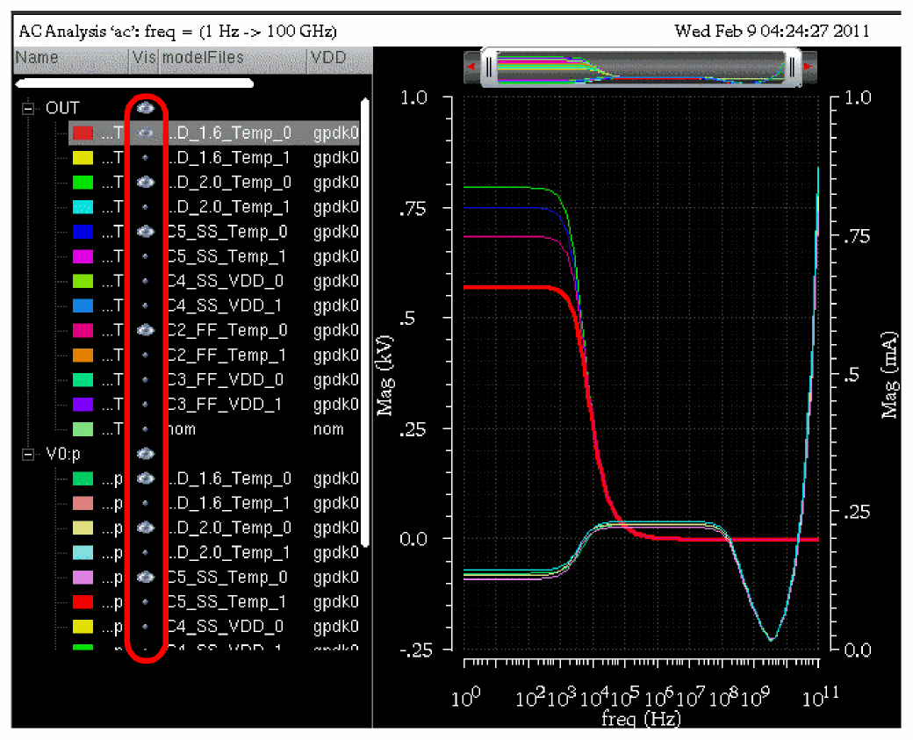
You can also filter traces by selecting the Set Sweep Ranges option in the Results Browser. For more information, see Selecting and Plotting Signals in a Data Range.
Working with Graph Labels
You can add labels in a graph to display information about the graph or a trace. You can also attach labels with markers. For information about how to attach and edit the labels on marker, see Adding Markers.
To add a graph label in a graph, do one of the following:
- Select a graph and choose Graph – Add Label.
- Right-click anywhere in the window and choose Create Graph Label.
A label is added to the graph you selected. By default, the label displays the string Graph Label1. You can change the graph label by double-clicking the displayed string.
Enter. The new line and carriage return characters are also supported in the graph labels.To change the graph label properties, do one of the following:
- Right-click the graph label and choose Graph Label Properties.
-
Select the label and press
Q.
The Graph Label properties for <Graph Label Name> form appears.
This form includes the following fields:
- Label—Displays the default graph label name. You can provide a new name for the label.
- Font—Specifies the font type.
- Foreground—Specifies the foreground and background color of the graph label.
- Drop-down list box to select whether the label is an anchored frame or attached to a trace. You can select the trace name in the drop-down.
- Click OK to save the changes you made.
Deleting Graph Labels
To delete a graph label, do one of the following:
-
Select a label and choose Edit – Delete, or press the
Deletekey. - Right-click the label and choose Delete.
Creating Multiple Graph labels
To create multiple graph labels, right-click a label in the graph and choose Copy. Then, right-click any where in the window and choose Paste. A copy of the graph label is created. Drag one of the labels to the required new position. Using this method, you can create as many labels as you want.
Plotting WREAL Signals
Virtuoso Visualization and Analysis XL supports the plotting of WREAL (wire-real) signals, where the WREAL signals are by default plotted in the sample and hold plot type. The WREAL signals are displayed with the  symbol in the Results Browser.
symbol in the Results Browser.
Perform the following step to set the plot type of a trace to sample and hold:
-
Right-click the trace for a WREAL signal and choose Type – Sample Hold.
The following figure displays a WREAL signal plotted in the sample and hold plot type.
By default the data points are visible in the plots for the WREAL signals. To hide the data points, do one of the following:
- Choose Trace – Symbols On.
- Right-click the trace and deselect Symbols On.
- Right-click the trace and choose Symbol – Symbols Off.
To change the plot type to a continuous line, right-click the trace and choose Type – Continuous line.
To change the properties of a WREAL trace, right-click the trace and choose Trace Properties. The Trace Properties for <WREAL trace name> form appears. This form includes the similar fields as that of the rectangular trace. For more infomation about the fom fields, see Setting Trace Properties.
WREAL plots includes a special depiction style to display the X and Z states. In the figure below, the red blocks indicate the X state and the yellow blocks indicate the Z state.
Limitations
Following are the limitations while plotting the WREAL signals:
- The X and Z states are not visible when the trace is exported into a table.
- The X and Z states are not plotted when you plot the WREAL signal from ADE and Calculator.
- Single point WREAL signals are not displayed as a line.
- WREAL array data is not displayed as a group and each member of the array is displayed separately.
- Zooming a WREAL signal does not work properly.
Plotting YvsY Graph
To plot a YvsY graph for the sweep data, do the following:
-
Right-click the X-axis and choose YvsY.
The YvsY form appears. You cannot perform any action in the Virtuoso Visualization and Analysis XL window when the YvsY form is open.
- Select a trace in this form and specify the plot destination, which can be a new window or a subwindow.
-
Click OK.
The YvsY plot is created in the destination window that you select. For example, the YvsY plot fornet10is displayed below.
Signalnet10:
Plotting Normal Quantile Graphs
Currently, you cannot plot normal quantile graphs using the stand-alone mode of the Virtuoso Visualization and Analysis XL tool. You can plot normal quantile graphs only for the Monte Carlo results from the Results tab of the ADE XL window.
Saving and Loading Graphs
You can save a graph to a file for future use. When you save a graph, the graph settings, such as zooming and panning, changing font type and font color, setting labels for X and Y axis, or changing the trace color are also saved with the graph file. As a result, you save on the effort required to customize the graph when you display the same graph again.
When you load the saved graph in a window and append a trace to that window, the new trace is displayed with the same window attributes.
This section includes the following topics:
Saving a Graph
The graph is saved as an XML file with the .grf extension. The following information is saved with the graph:
- The location of the data—data directory, data set, and trace name—and not the original data. Therefore, if your simulation data changes between sessions, the graph reflects those changes.
- All graph objects and attributes, such as grids, background and foreground color, labels, and markers.
Save a group of windows with the file extension .grf.group.
To save a window, plot a signal in the window and do the following:
-
Choose File – Save Window As, or press
Ctrl+S.
The Save Graph Window to File form appears.
-
In the Look in field, select the directory where you want to save the graph. The file extension is displayed as
.grfin the Files of Type field. - Now, do one of the following:
-
Select one of the following options:
When you select the Save All Windows option, the graphs are saved in a.grf.groupfile. -
Click Save.
The window that you selected is saved at the specified location.
Loading a Graph
Perform the following steps to load a graph that you have saved.
-
Choose File – Load Window, or press
Ctrl+L.
The Load Graph Window to File form appears.
In the Look in field, select the directory in which the.grffile that you want to open exists.
Select the Specify new results database check box and click the Browse button to load the same.grffile, either with the original data or different data. -
Now, do one of the following:
- Select the graph file you want to open from the list box below the Look in field.
- In the File name field, type the name of the file you want to open.
-
Select the
.grfextension to display the graph files andgrf.groupfile extension in the Files of type drop-down list box to select a graph file group. The extension for graph files is specified by thefilesuffixvariable in the.cdsenvfile. -
Select the Specify new results database check box to plot the saved graph from a new results directory. Also, specify the name of the results directory from which you want to plot the graph. Ensure that the signal plotted in the saved graph exists in the results directory you specified.
When you use this option, the saved graph is updated with the data from the new results directory and all the trace settings that you have applied to the saved graph are also retained. Hence, saved graphs can be used as a template when you reload a graph.
-
Click Open.
The saved graphs are displayed in a new window. This graph has all the attributes that you saved with the graph.
Saving a Graph as an Image
If you save the graph as an image, the active graph or subwindow is saved with the trace legend area. You can insert the graph image into a document or print it.
The Virtuoso Visualization and Analysis XL tool provides several image formats to support a variety of applications and environments. While all image formats are functionally equivalent to binary storage formats, the size of a typical file varies greatly according to the format chosen. For example, a simple graph saved in the PNG format is typically less than 100 KB, while the same file saved in the TIFF or BMP format may exceed 1MB.
Perform the following steps to save a graph as an image file.
- Plot a signal in a graph.
-
Choose File – Save Image
The Save Image form appears.
- In the Look in field, browse to locate the directory where you want to save the image file.
-
In the File name field, type a name for the image file. You can also specify macros,
$TRACEand$SUBWIN, in the filename. These are used to save image files with the trace names and subwindows names. -
In the Files of type drop-down list box, select the format in which you want to save the image file.
By default, the file is saved in a format based on the file extension you specify. For example, if you typeoutput.png, the file is saved in the PNG format. The image file can be saved with.png,.bmp, and.tiff(or.tif) file extensions. On the other hand, if you select PNG (Best compressed) and typeoutput.tiff, the file is saved asoutput.png. Though PNG and TIFF files are compressed, there is no loss in image quality with these image formats.
The graph image file can be saved in the following formats:- Windows Bitmap Format (*.bmp)
- JPEG Format (*.jpg)
- Portable Network Graphics (*.png)
- Portable Pixmap Format (*.ppm)
- Tagged Image File Format (*.tif)
- X Pixmap Format (*.xpm)
- Adobe PDF (*.pdf)
- Scalable Vector Graphics (*.svg)
The default file type isJPEG. -
To specify the format properties, click the Format Option button.
The Format Options form appears. This form includes the following fields:A quality bar, ranging from 20–100, is displayed under the JPEG Options section. Move the slider to the right or to the left to increase or decrease the quality of the graph image being saved. This quality bar is activated only if the file type isJPEG. -
In the Save section, select the following fields:
- Selected subwindow only—Select this button if you want to save only the selected subwindow.
-
All subwindows, using—Select this button if you want to save all the subwindows. You can use the drop-down list to specify whether you want to save subwindows in a single file or multiple files.
- Render exactly as screen—Select this check box if you want to save the exact copy of graph as it is visible on the screen. This also saves all attributes of the graph as well as zooming and panning properties. When you select this option, the Graph Display section is disabled.
This option saves only those strips that are visible on the active graph. If you do not want to save a strip, you can adjust the graph window size to hide the strip. -
Resize Image(s)—Select this check box if you want to resize the image. In this section, you can change the following image attributes:
- Width—Specify the width of the image.
- Height—Specify the height of the image
-
You can select the units for the height and width from the drop-down list displayed at the right. The available units are
pixels,inch,cm,mm,picas, andpoints. When you change the image units, the height and width values you have specified are automatically changed as per the selected units. -
Resolution—Specify the resolution of the image. This field is unavailable if you select the image type in the vector format. Select the resolution type as
pixels/cmorpixels/infrom the drop-down list displayed at the right. When you change the resolution type, the height and width fields also change accordingly. - Maintain Aspect Ratio—The ratio of the width of the image to its height. Select this check box if you want to maintain the aspect ratio while modifying the height or width of the image.
- Import Dimensions—Click this button to specify the default values for height, width and resolution.
-
Graph Display—In the this section, specify the following fields:
- Title—Select this check box if you want to display the graph title in the graph image
- Legend—Select this check box if you want to display trace legend in the graph image.
- Axes—Select this check box if you want to display axes in the graph image.
- Grids—Select this check box if you want to display grids in the graph image.
-
Replace background color with:—Select this check box if you want to save the graph image in a different background color. You can specify a new color by clicking the button provided with this option. This option is not available when the file type is
pdfandsvg.
-
Click Save.
The graph is saved as an image file with the specified attributes.
When you do not specify a background color and save the graph as an image, the saved image may not be in readable form. For example, when you open the saved image by using an image viewer, such as GIMP, the graph appears as shown in the figure below:
You can use the GIMP image viewer and editor to convert the image into a readable format by performing the following steps:
-
Choose Layer – New Layer.
The New Layer form appears.
-
In this form, select the Layer Fill Type field as Background color and click OK.
The image is filled with the white background color. -
Choose Layer – Stack – Layer to Bottom. The image is now in readable format.
Reloading Graphs
Reloading a graph updates the already plotted traces with the latest simulation results based on the current in-context results directory. When you reload a graph, the settings that you have applied to a trace are also applied to the reloaded traces, such as, background color and font. For more information about the trace settings that are retained during reloading a graph, see Graph Settings Retained During Reloading.
You can reload a graph when you open the Virtuoso Visualization and Analysis XL tool in the stand-alone mode and also when you run the tool from ADE L and XL.
This section includes the following topics:
- Reloading Graph When Opened in Stand-Alone Mode
- Reloading Graph When Opened From Within ADE L, ADE XL, ADE Explorer, or ADE Assembler
- Disabling Trace Reload
- Graph Settings Retained During Reloading
Reloading Graph When Opened in Stand-Alone Mode
In the stand-alone mode, you can reload an already open graph with the simulation results based on the current in-context results directory selected in the Results Browser.
Following are the examples that describe how reloading works in the stand-alone mode:
Example 1
Consider the following scenario in which you plot a trace from a results directory, change the in-context results directory, and reload the trace with the data from a new in-context results directory.
-
Plot a signal,
out, from an in-context results directory (simulation1) in a new window. -
Set the trace Style to
Dot(as shown in the figure below). Notice that the time range of theoutsignal varies from 0.0 to 10 microseconds.
-
Open another results directory,
simulation2, which contains the simulation results for the same design. -
Set the database context to this new results directory,
simulation2. For more information about how to change the in-context results directory, see Changing In-Context Results Directory. -
Now, to reload the already plotted trace for the
outsignal from the previous results directory (simulation1) with the data from the new in-context results directory (simulation2), choose File – Reload – Current Subwindow.
The trace for theoutsignal is reloaded using data from the latest in-context results directory,simulation2, and all the trace settings are retained (as shown in the figure below). Notice that the time range of the reloaded trace now varies from 0.0 to 20 microseconds.
To reload the traces in all the subwindows, choose File – Reload – All Subwindows. All the traces for the common signals are updated with data from the current in-context results directory and all the trace settings are retained.
To reload the traces in all the windows in Virtuoso Visualization and Analysis XL, choose File – Reload – All Windows.
Example 2
You can also reload the traces for expressions created in the Calculator. Consider the following scenario in which you plot a trace for an expression, change the in-context results directory in Results Browser, and then reload the plotted trace with the data from the new in-context results directory
-
In the Calculator, create an expression for the signal,
out, fromsimulation1results directory. The following expression is displayed:v("/out" ?result "tran"). -
Apply
flipfunction to this expression. The expression changes to:flip(v("/out" ?result "tran")) -
Now, evaluate this expression and plot the output in a new window. The following output trace is displayed:
Notice that the time range of the output trace varies from -10 to 0.0 microseconds. -
In the Results Browser, change the in-context results directory to
simulation2, which contains the simulation results for the same design. -
Choose File – Reload – Current Window.
The trace for the expression you plotted earlier is updated with the data from the new in-context results directory (see figure below). The time range of the updated trace now varies from -20 to 0.0 microseconds.
If you create an expression for a signal from a results directory that is not set as the in-context results directory in Results Browser, the expression for this signal also displays the path of the results directory. For example,
v("/out" ?result "tran" ?resultsDir "./simulation_10/ampTest/spectre/config/psf")
This indicates that the database context of this signal is specified within the expression. When you plot the expression, it is always plotted with the specified results directory. The context for this expression does not change with the change in the in-context results directory in the Results Browser; and therefore, when you perform File – Reload on this trace, it is not updated with the new data.
Reloading Graph When Opened From Within ADE L, ADE XL, ADE Explorer, or ADE Assembler
While working in ADE L, ADE XL ADE Explorer, or ADE Assembler, you can use the Refresh plotting option to update already open graphs with current simulation results. This option retains all the trace settings that you have applied to the traces in open graphs.
Important points to note:
- Only those open graphs are updated that are common in the current simulation run.
-
You can also use File – Reload to reload the graphs plotted from within ADE L, ADE XL, ADE Explorer, or ADE Assembler based on the results from a new in-context results directory selected in the Results Browser. This helps you review graphs across different simulation runs when you change the context. For example, in a test
ACTestBench, you want to run multiple simulations with varying corners and values of the global variableVDD. In the first run, you specify the value2.2for the variableVDDin cornerC0and plot the results. After plotting the simulation results in the graph, in the next run, you sweepVDDfor three values:1.8,2.0, and2.4and add cornersC1, andC2. After simulation, when you choose Reload and set the context to a new results directory, the graph window updates to display traces for =1.8,2.0,2.2and2.4. - If you rerun the simulation even without changing the corner settings, Reload plots traces from all the corners in the graph.
To know more about refreshing graphs through ADE Assembler, see
To know more about refreshing graphs through ADE Explorer, see
Disabling Trace Reload
You can lock the database context of a trace to disable the trace reloading. You use this feature if you do not want to update the trace while reloading graphs with data from the in-context result directory.
To disable the reloading of a trace, do one of the following:
- Select the trace and choose Trace – Disable Reload.
-
Right-click a trace and choose Disable Reload.
A lock appears on the trace color symbol displayed in the subwindow title, which indicates that the context of the selected trace is locked and it is not updated when you reload traces with data from the in-context results directory.
Graph Settings Retained During Reloading
The Virtuoso Visualization and Analysis XL graph window saves and maintains the following settings for the graphs when you reload the graphs with the data from the latest in-context results directory:
- Trace color, type, style, width, or symbols
- Visibility status of graphs
- Axes settings
- Pan and zoom settings
- Graph layout
- Strip layout
- Markers and marker locations
How Marker Locations Change After Graph Reloading?
-
Point Marker—If a point marker is attached to a trace and the trace remains plotted after you reload graphs, the point marker stays attached to the trace on the same X-axis value. However, the marker is snapped to the nearest Y-axis value on the trace.
If a point marker was detached from the trace before reloading, the point markers remain detached and continues to exist at the same XY location. - AB Marker—If an AB marker is attached to a trace and the trace remains plotted after you reload graphs, the AB marker stays attached to the trace on the same X-axis value; however, the marker is snapped to the nearest Y-axis value on the trace. If the trace is deleted after refreshing, the corresponding AB marker is also deleted. This results in the display of only A and B markers on the graph without a delta line between them.
- Delta Marker—If a delta marker is attached to a trace and the trace remains plotted after you reload graphs, the delta value is updated based on the new point marker locations. If the point markers do not exist after reloading the graph, the corresponding delta marker is also deleted.
Printing Graphs
You can save a selected graph or all the graphs in the selected window to a file in PDF format, and then print the graphs on a network printer that you have installed on your computer.
Before you print, you can use the print preview mode to see how the graph will look after it is printed.
Perform the following steps to print a graph:
-
In the window, choose File – Print.
The Print form appears.In the Printer group box, do the following:
If you select Print to file (PDF), the Location field displays Local file and the Type field displays Write PDF file. If you select a printer, the Location field displays the location and the Type field displays the model number of the selected printer, as shown in the following figure:
-
To set properties for the print job, click the Properties button next to the Name field.
The Printer Properties form appears. This form has two tabs—Page and Job Options. -
On the Page tab, specify the following fields:
- Select the units, such as Inches (in), or Millimeters (mm), in which you want the paper size to be displayed.
-
In the Paper group box, select the required page size in the Page size drop-down list box. The Width and Height fields display the default paper settings for that page size in the specified units.
- In the Orientation group box, select the print orientation as Portrait or Landscape.
- In the Margin group box, select the top, left, right, and bottom margins.
- In the Page Layout group box, select how many pages you want to print per sheet from the Pages per sheet drop-down list. You can also control the order in which pages are printed from the Page order drop-down list. By default, pages are printed from left to right and then from the top down.
-
On the Job Options tab, specify the following fields:
- In the Job Control group, from the Scheduled printing drop-down list, you can choose when do you want to schedule the printing job. You can also specify the billing information and the job priority in the respective fields.
- In the Banner Pages group box, from the Start and End drop-down lists, select the level of the information sensitivity that you want to print at the start and the end of the banner page, respectively.
-
To set properties for the print job, click the Properties button next to the Name field.
-
In the Output file field, specify the name and location of the output file. To specify a file at a location other than the default, click the browse button. By default, the name of the output PDF file is
print.pdf. -
Click the Options button to view the other printing options. When you click this button, two tabs are displayed in the Print form—Copies and Options.
- On the Copies tab, do the following:
-
On the Options tab, do the following:
- Specify Duplex Printing as None, Long side, or Short side.
-
Specify Color Mode as Color or Grayscale.When you print in grayscale, you do not have colors (except the shades of gray) by which you can distinguish between different signals. To overcome this, when a graph is printed using the Grayscale option, different symbols are automatically added to each signal to help you distinguish between them. For example, see the figure below, where two signals are printed in grayscale. Signal
intest[1]can be identified by the symbol ‘’, and the signalinmecan be identified by the symbol ‘’.
-
On the Graph Options tab, do the following:
-
In the Graphs/page section, specify how many graphs you want to print on a page.
If you want to print all the subwindows in a PDF file in the same order in which they are arranged in the graph, select the Match window check box. However, if you do not select this check box, the visibility settings of columns in the trace legend are reflected in the output PDF file. Also, if you adjust the width of the trace legend area and hide few columns, only visible columns are printed in the output file. - In the Strip Options section, specify which strips you want to print. To print only active strips that are currently visible in the graph, select the Visible only option. To print all the strips from all the subwindows, select the All Strips (multiple pages) option.The All Strips option will print multiple pages.
- Select the Print Marker Table check box to print marker tables for the graphs. In addition, specify how you want the marker tables to be printed—Underneath graph or on separate page.
-
In the Graphs/page section, specify how many graphs you want to print on a page.
-
On the Header/Footer tab, do the following:
- Click the Header and Footer check boxes if you want to display header and footer in the output file.
-
Specify the information that you want to display in header and footer of the output file. Click the Macro button at the bottom of the form, a table listing all the available macros appears. Place the pointer in one of the boxes provided below the Header and Footer check boxes where you want to insert the macro. Select a macro in the table and click the Insert button.
The selected macro is inserted at the specified location. For example, if you want to display date and time in the output file header in the right-most corner, you can insert the$DateTimemacro, as highlighted in the figure below.
The table below contains a list of macro that you can specify:
Supporting Mixed Signals
You can use the Virtuoso Visualization and Analysis XL tool to plot analog and digital signals together in one window. Like analog traces, multiple digital traces can also be combined into a single strip. The digital signals are displayed in green by default.
To split the analog and digital signals into different strips, see Working with Strips.
If you want to work with analog and digital signals at the same time, you can plot analog and digital signals in the same window. The signals are plotted in the order they are selected in the Results Browser or ADE.
You can also drag an analog signal to place it in between two digital signals. The analog signal that you drag is displayed in a different strip. You can also impose an analog signal on a digital signal. In this case, the strip height for a digital signal is adjusted according to the height of the analog signal.
You can convert analog signals into digital signals and digital signals into analog signals, if required.
Loading Vector Files in Virtuoso Visualization and Analysis XL
Most digital simulators store the signal information in text files, such as VCD or VEC files.
- Value Change Dump (VCD) File: VCD files are the most commonly used textual representations for digital signals. They are in ASCII format and contain the value changes for selected signals in the circuit design. VCD files also require information from the .info file, which contains the risetime and falltime and voltage high/low values. VCD files contain signal definitions, timescale data, and waveform data.
-
Digital Vector (VEC) File: VEC files include a table of times and values at those times. The VEC file can include more than one vector definition. You can directly load the digital stimuli files (VEC) into Virtuoso Visualization and Analysis XL, plot the digital waveforms, and automatically generate the analog waveforms with the stimuli applied.You can also read the 'Virtuosity: Reading Vector Files in Virtuoso Visualization and Analysis' blog for more information about reading the vector files.
Loading a VCD File
You can load a VCD file in Virtuoso Visualization and Analysis XL using the Select Waveform Database form. The selected file is loaded in the Results Browser and displays a folder, digital, as shown in the figure below:
The digital signals are plotted in the Results Browser as shown in the figure below.
To generate analog stimuli for this digital signal, you need to convert the digital signal into analog signal by using the Digital to Analog assistant that appears when you choose Measurements – Digital to Analog. Specify the form field values as shown in the figure below. For more information, see Converting a Digital Signal to an Analog Signal.
When you click OK, the CLK_25MHZ digital signal is converted into an analog stimuli signal, d2a_CLK_25MHZ.
Loading a VEC File
When you load a VEC file in the Results Browser, two folders, digital and analogStimulus are displayed, as shown in the figure below:
The analog stimuli files are automatically generated when you load a VEC file in Virtuoso Visualization and Analysis XL, whereas for VCD file, you need to perform an additional step to convert the digital signal to generate analog stimuli.
Loading Vector Files Using Command-Line Convertor
You can also use the command-line convertor, cdsConvertDigitalVector, to convert a VEC or VCD file into SST2 and PSF XL database that can be loaded into Virtuoso Visualization and Analysis XL.
-
Digital waveforms are written to SST2 dataset named
digital. -
If the VCD file includes variables of type real, they were written to PSF XL dataset named
analog. -
If the timing characteristics are available, then the digital to analog waveform conversions are written to PSF XL dataset named
analogStimulus.
Example: Converting a VEC File
Run the following command to call the convertor:
cdsConvertDigitalVector -i sig25mzN160mz_crt_analog.vec -o sig25mzN160mz_convert
-
sig25mzN160mz_crt_analog.vecis the name of the VEC file -
sig25mzN160mz_convertis the name of the converted output database
Now, when you open this converted database in the Results Browser, the digital and analogStimulus results directories are displayed. You can then plot the waveforms from these directories.
Example: Converting a VCD and .info File
Run the following command to call the convertor:
cdsConvertDigitalVector -i signal_crt_analog.vcd -vcd-info signal_analog.info -o stimuliDir
-
signal_crt_analog.vcdis the name of the VCD file -
signal_analog.infois the info file -
stimuliDiris the name of the converted output database
Now, when you open this converted database in the Results Browser, the digital and analogStimulus results directories are displayed. You can then plot the waveforms from these directories.
Command-Line Options for File Convertor
The following options are available for the command-line convertor:
Converting an Analog Signal into a Digital Signal
In the stand-alone SKILL mode, you can create a digital representation of an analog signal.
To convert an analog signal into a digital signal, do the following:
-
In the graph, select a trace and choose Measurements – Analog To Digital. You can select more than one analog trace at a time.
The Analog to Digital conversion form appears. This form displays the name of the selected analog signals. The signals are displayed on the basis of their selection order; however, you can rearrange the order either by clicking the column header or by using the drag operation. The assistant has the following fields
-
In the Logic Threshold field, select Single or High/Low.
- If you select Single, you need to specify a Center value. Analog values equal to or greater than the specified center value are mapped to a digital value of 1. Analog values less than the center value are mapped to a logical value of 0.
- If you select High/Low, you need to specify a high and a low threshold value. All analog values equal to or greater than the high threshold value are mapped to a digital value of 1. All analog values equal to or less than the low threshold value are mapped to a logical value of 0. The value Time to X puts a time limit on the interval that the signal may remain between the high and low threshold values before the signal is assigned a value of X.
- If you want to make a bus of digital signals from the analog signal, select the Make Bus check box.
-
Then, select the radix type in the drop-down list and provide a bus name.
- In the Plot Mode drop-down list box, select whether you want to append the digital trace to an existing graph, replace an existing graph with the digital graph, or add the digital trace to a new subwindow or new window.
- Click OK.
Converting a Digital Signal to an Analog Signal
In the stand-alone SKILL mode, you can also create an analog representation of a digital signal.
To convert a digital signal into an analog signal, do the following:
-
In the window, select a digital trace and choose Measurements – Digital To Analog. You can select more than one digital trace at a time.
The Digital to Analog Conversion form appears. This form displays the digital signals you select. The signals are displayed on the basis of their selection order; however, you can rearrange the order either by clicking the column header or by using the drag operation. The assistant has the following fields:
-
In the Analog Values section,
-
In the High/Low field,
-
Specify the high analog value to which the digital value 1 (for single bit waveforms) or the maximum bus value is to be converted to. The default value is controlled by the
dToAHiVoltagevariable in the.cdsenvfile. For more information, see Appendix A, “Virtuoso Visualization and Analysis XL Tool Environment Variables.” -
Specify the low analog value to which the digital value 0 (for single bit waveforms) or the minimum bus value is to be converted to. The default value is controlled by the
dToALoVoltagevariable in the.cdsenvfile. For more information, see Appendix A, “Virtuoso Visualization and Analysis XL Tool Environment Variables.”
-
Specify the high analog value to which the digital value 1 (for single bit waveforms) or the maximum bus value is to be converted to. The default value is controlled by the
-
In the X field, specify the value to which state X of the digital wave is converted to. The X value may be given as a:
- Number
-
Keyword
vhi,vlo, orvprev, where
vhisubstitutes the X value with the value in the Analog Hi Voltage field.
vlosubstitutes the X value with the value in the Analog Low Voltage field.
vprevimplies that the previous (non-X) state, eithervhiorvlois used. -
Simple expression, such as
(vhi + vlo)/2
- In the Rise/Fall fields, specify the risetime and falltime.
-
In the High/Low field,
- In the Bus Output as group box, select Voltage to return the selected bus as a single analog signal or select Bits to return the selected bus as a wave list, which is one analog wave for each bus bit. The field is available only if you select a bus.
-
In the Transition group box, select Piece-wise-Linear to join the points in the analog waveform with straight lines or select Zero-T for voltage transitions in zero time.
The Transition field is available only if the Bus Output in field is selected. - In the Plot Mode drop-down list box, specify whether you want to append the analog trace to an existing graph, replace an existing graph with the analog graph, or add the analog trace to a new subwindow or new window.
- Click OK.
Generating Derived Plots
For transient periodic signals, you can generate the derived plots, such as frequency, duty cycle, and period that can be plotted against time.
Do the following to generate a derived plot:
-
Choose Measurements – Derived Plots.
The Derived plots: Frequency, Period, and Duty Cycle form appears.
- The Signal/Expression name field displays the name of the selected trace or expression in the graph. Select a trace for which you want to generate the derived plot, the selected trace is displayed in this field.
- In the Threshold field, select the Use average check box if you want to use the average threshold value calculated by Virtuoso Visualization and Analysis XL. Otherwise, specify the threshold value in the Specify value field. The Use average option is selected by default.
- Select the Specify range check box if you want to provide the start and stop values, which indicate the range of the derived plots.
-
In the Derived plots field, select the derived plot you want to generate, such as Frequency, Period, and Dutycycle.
- Select Frequency to plot a waveform representing the frequency of a signal versus time. For more information about Frequency, see frequency.
- Select Period to plot a waveform representing the time period of a signal versus time.
- Select Dutycycle to plot a waveform representing the calculated ratio of the time, for which signal remains high, to the period of the signal. For more information about Dutycycle, see dutyCycle.
-
Select the Edge Type as
FallingorRisingfor Frequency and Period. -
Click Apply and then click OK.
The selected derived plots are plotted in different strips in the same subwindow.
Limitations
- Derived plots are currently not supported for family data.
- Derived plots are supported only for periodic signals and if you try to generate a derived plot for the non-periodic signals or buses, an error is displayed in CIW.
Plotting Histogram
To generate the histogram plot directly on a graph, do one of the following:
- Select the trace for which you want to create a histogram plot and choose Measurement – Histogram.
-
Right-click the trace and choose Measurement – Histogram.
The Histogram form appears.
You can specify the following fields in this form:
-
Number of Bins—Specify the number of bars to plot in histogram. The default value is
10. - Type—Select the histogram type. You can select one of the following:
- Plot Mode—Specify the plotting mode. You can specify the following plot modes:
-
In the Annotations section, you can select the following annotations that you want to display on the histogram plot:
-
Density Estimator—Plots a curve that estimates the distribution concentration.
- Std Dev Lines—Shows the standard deviation lines in the graph indicating the mean, (mean - standard deviation), and (mean + standard deviation) values. The standard deviation is a sample standard deviation.
- % Markers—Displays the markers associated with the histogram trace.
-
Density Estimator—Plots a curve that estimates the distribution concentration.
-
In the Additional Calculations section, select Skewness, Kurtosis and Jarque-Bera to show these calculations in the graph label of the histogram trace.
Skewness is a measure of symmetry, or more precisely, the lack of symmetry. A distribution, or data set, is symmetric if it looks the same to the left and right of the center point.
Kurtosis is a measure of whether the data are heavy-tailed or light-tailed relative to a normal distribution. That is, data sets with high kurtosis tend to have heavy tails, or outliers. Data sets with low kurtosis tend to have light tails, or lack of outliers. A uniform distribution would be the extreme case. - In the Additional Plots section, select the following field:
-
Click the Plot button.
The histogram plot is generated with the specified properties. The figure below displays a histogram plot with Density Estimator, Std Dev Lines, and Additional Calculations fields enabled.
The figure below displays a normal quantile plot:
Changing Histogram Trace Properties
To change the properties of the histogram plot, right-click the histogram trace and choose Trace Properties.
The RectAnnotationsTrace Properties for <histogram_trace_name> form appears.
Specify the following fields in this form:
- In the Name field, type the name for the trace or select the Default check box to display the default trace name. When you select the Default check box, the Name field becomes unavailable. The Name and Default fields are not available if you select more than one trace.
-
In the Type/Style fields, do the following:
- Specify whether you want to represent the trace by a line, points, histogram, bar, spectral, or sampleHold.
-
Specify whether you want the trace style to be Solid, Dashed, Dotted, or DotDashed, or DashDotDot.
-
Specify whether you want the trace to be Fine, Medium, Thick or ExtraThick.
- In the Symbols field, select the Show check box to display data points on the trace and select the symbol type from the drop-.down list.
-
In the Annotations field, select the following check boxes to display annotations:
- Density Estimator— Select to display density estimator curve.
- StdDev Lines— Select to display standard deviation lines.
- % Markers— Select to display markers.
- Skewness— Select to display skewness calculation in the graph label of the histogram trace.
- Kurtosis— Select to display kurtosis calculation in the graph label of the histogram trace.
- Jarque-Bera— Select to display Jarque-Bera calculation in the graph label of the histogram trace.
- In the Color field, select the foreground color for the trace. Alternatively, you can also set the trace color by right-clicking the trace and selecting Color.
Working with Buses
A group of digital signals can be converted to a create a bus. You can expand a bus to view its component signals.
If you want to create a bus of analog signals, you need to convert the analog signals to the corresponding digital signals. For information about how to convert an analog signal to the corresponding digital signal, see Converting an Analog Signal into a Digital Signal. After the conversion is complete, you can create bus from the digital signals.
To combine the signal conversion and bus creation processes in a single step, you can select the Make Bus check box in the Analog to Digital conversion form, and specify a bus name while converting the analog signal to a digital signal.
Creating a Bus
-
In a graph window, select the digital traces that you want to use to create a bus.
-
Choose Trace – Bus – Create.
The Create Bus form appears.
The Signal/Expr Names section in this form displays the selected traces, which you use to create the bus, in the order of significance (top to bottom—from the least significant bit (LSB) to the most significant bit (MSB)). However, you can rearrange the trace order either by clicking the column header or by using the drag operation. -
Now, in the Create Bus form, do the following:
- Type a name for the bus in the Bus Name field.
-
Select the Radix for the bus, such as
Ascii,Binary,Hex. Alternatively, to change the radix type after a bus is created, right-click the bus and choose Radix. - Specify whether you want the bus to be appended to the digital traces in the graph or to replace the selected traces in the Plot Mode field.
-
Click OK.
The bus is created from the selected digital traces.
There are three states in which a signal can exist in the bus—Hi, Lo, and XZ, where X is a transition from Lo to Hi and Z is a transition from Hi to Lo. Following is the color pattern for the traces in a bus that belong to a particular state:
- If the bus is all Z values, it is displayed in orange.
- If the bus is all X values, it is displayed in red color rectangles.
- if the bus includes both X and Z values, it is displayed in yellow colored rectangles.
If you want to create a bus of analog signals, convert them to digital signals by using the Analog to Digital assistant. Then, follow the above mentioned steps to create the bus.
Plotting Parametric Buses
You can plot parametric digital buses or bus bundles, which are families of buses containing sweeps or corners, using the Results Browser or CIW. The digital buses can also be plotted from ADE when you right-click the signal icon in the Results tab and choose Plot or Plot Across Corners.
The figure below displays a parametric bus, /out1<0:2>, where all leaf waveforms (for each sweep or corner) are plotted in a single strip. Analog buses are always plotted in a tree structure with the root displayed at the top, and when you expand the root, the leaf waveforms appear in the legend and graph.
Notice that the legend of a digital parametric bus lists the corner and design variables. When you send the bus waveforms from the Calculator or graph to ADE, the root expression is generated and displayed in the Outputs Setup pane of ADE.
You can also perform calculations on bus waveforms using the following Calculator functions:
- numConv to convert bus value strings to other formats
- busTransition to find the time when a digital bus changes from one value to another
- value to find the value of a bus at a given time
- cross to find the time when a digital bus value is equal to a specified number
- average to calculate the average of a bus waveform
-
clip to clip the bus waveform from time
t1tot2 - frequency to calculate the frequency of a bus waveform.
Creating a Mnemonic Map
You can create a mnemonic map and add rules to set up how different bit patterns and values of a bus are mapped with specific colors and formats by using the Configure Mnemonics form.
-
In the trace legend area, right-click a bus and then choose Display – Mnemonic – Configure Mnemonics.
The Configure Mnemonics form opens.
-
Click Add Mnemonic Map to create a mnemonic map.
A mnemonic map is created and displayed in the left pane of the form. By default, mnemonic maps are named asNew map #1,New map #2,New map #3, and so on. You can assign a different name to the map by editing the Name field.
A default rule is also added to the mnemonic map. -
Edit the default rule by specifying the following information:
-
In the Radix column select a radix. For example,
'h (Hexadecimal). -
In the Values Matching column, enter a value that you want to map in the format of the selected radix. For example,
5. -
In the Relabel As field, enter the ASCII string you want to associate with the value. For example,
Power. - The Preview field shows how the specified bit pattern or value will look like in the bus. You can change its appearance by using the format editing area below the mnemonic map definition, as follows:
-
In the Radix column select a radix. For example,
-
Click Add Rule to add another rule. Edit the rule by specifying the Radix, Values Matching, Relabel As, Line, Fill, Text, and Icon fields.
- Click Save Rules to save the mnemonic map.
-
Right-click the bus and then choose Display – Mnemonic – Name of the Mnemonic Map to apply the mnemonic map to the bus.
The mnemonics are applied to the bit patterns or values according to the rules defined in the mnemonic map.
Applying a Mnemonic Map to a Bus
To apply a mnemonic map to a bus:
-
In the trace legend area, right-click a bus and then choose Display – Mnemonic to open the context menu command.
A list of available mnemonic maps is displayed. -
Select the mnemonic map that you want to apply to the bus.
The mnemonics are applied to the bit patterns or values according to the rules defined in the mnemonic map.
Importing Mnemonic Maps from SimVision
If you have created a mnemonic map in SimVision, you can import it using the Import From SimVision command on the Configure Mnemonics form.
To import a mnemonic map from SimVision:
-
In the top-right corner of the Configure Mnemonics form, click Import From SimVision.
The Select the SimVision commands script file to open form appears.
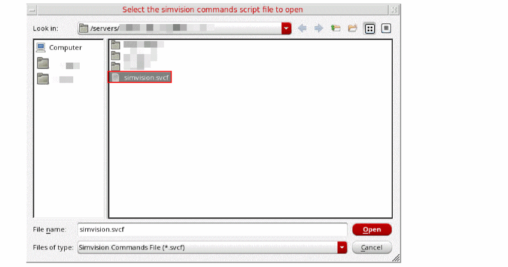 -
Select the SimVision commands file of
.svcfformat from which you want to import the mnemonic map created in SimVision. -
Click Open.
The Configure Mnemonics form is updated to show the mnemonic maps defined in the SimVision commands file.
-
Select a mnemonic map that you want to apply. You can also edit rules defined in the selected map. For example, you can edit the values of Radix and Values Matching according to data in the bus to which you are applying mnemonic map.
-
Click Apply and then click OK.
The bus is updated according to the rules defined in the mnemonic map.
Setting Bus Properties
To set the properties of a digital bus, right-click the bus name and choose Digital Bus Properties.
The Digital Bus Trace Properties for Bus_Name form appears.
This form displays the following information:
- Name—Displays the default name of the bus. You can change the bus name if the Default check box is not selected.
- Style—Specifies the bus signal properties, such as Solid and Dash, and specifies the thickness, such as Fine and Medium.
- Color—Specifies the foreground color of the bus.
- Radix—Specifies the radix type, such as hex, binary, and octal. You can also set the radix type by right-clicking the bus and choosing Display – Radix.
Expanding a Bus
After you add a bus trace to the window, you can expand the bus to display the digital traces contained in the bus into individual strips.
To expand a bus, select the bus you want to expand and do one the following:
- Choose Trace – Bus – Expand.
- Right-click the bus or the bus name in trace legend area and choose Expand.
-
Click the ‘
+’ icon next to the bus name in the trace legend area.
The window displays the individual digital traces in the selected bus and also displays the parent bus.
Collapsing a Bus
To collapse an expanded bus, select the bus you want to expand by selecting the bus name in the trace legend area and do one of the following:
- Choose Trace – Bus – Collapse.
-
Right-click the bus or the bus name in trace legend area and choose Expand.
The window displays only the bus of digital signals.
Exporting a Bus
To export the data from a bus signal into a CSV file, do the following:
- Select the bus and choose Trace – Export.
-
Right-click the bus and choose Send to – Export.
The Export Waveforms form appears. For more information about this form, see Exporting Signals.
Sending a Bus Signal to Calculator
To send a bus signal to Calculator, do the following:
- Right-click the bus signal in graph or in the trace legend and choose Send To – Calculator.
-
Select the bus and choose Tools – Calculator.
The selected bus signal data is displayed in the Calculator.
Consider an example in which you convert an analog signal to digital using the Analog To Digital assistant, then create the bus from the converted digital signal, and finally send the bus signal to Calculator, the following expression is created in the Buffer:
awvCreateBus("Test_bus" list(awvAnalog2Digital(v("net10" ?result "tran") nil nil 2 nil "centre") ) "Binary")
Here, awvAnalog2Digital(v("net10" ?result "tran") nil nil 2 nil "centre" indicates that the net10 analog signal has been converted to a digital signal.
Sending a Bus Signal to Table
To send the bus signal to Table, do the following:
-
Right-click the bus signal in graph or in the trace legend and choose Send To – Table.
The selected signal is displayed in Table.
Working with Markers
A marker attaches a description to a point on the graph. The default label for a marker displays the X and Y coordinates of its intersection with the trace—if it is attached to the trace—or the coordinates of the point location of the marker. You can associate an expression with a marker label. The expression is evaluated when you place the marker on the graph and updated when you choose File – Reload.
If you use the replace mode to plot signals obtained from the simulation runs on the same design, the signals are updated with the new data and the expressions are re-evaluated.
Markers are of the following types:
This section includes the following topics:
- Adding Markers
- Setting Marker Properties
- Snapping Markers
- Customizing Markers
- Working with Delta Markers
- Working With Edge Markers
In addition, you can read the Tips and Tricks on Virtuoso Visualization and Analysis XL Markers blog.
Adding Markers
You can add point, vertical, horizontal, and delta markers to a trace. The circular markers can be added to circular graphs that are obtained from AC analysis, Smith Charts, and polar plots.
To add markers to a trace, do the following:
-
Select a point on the trace and choose Marker – Create Marker.
The Create Graph Marker form appears. This form includes various tabs that help to create rectangular markers—point, horizontal, vertical, and edge.
Refer to the below sections to know how to add different markers:
- Adding a Point Marker
- Adding a Horizontal Marker
- Adding a Vertical Marker
- Adding an Edge Marker
- Adding a Period Marker
- Adding a Dx/Dy Marker
- Adding a Delta Marker
Adding Markers with Marker Toolbox
To add a vertical, horizontal, point, or reference point (ARefPoint or BRefPoint) marker with the help of the Marker Toolbox, do the following:
The Marker Toolbox assistant appears to the left of the window. It includes tools that you can use to add the required type of markers. To create a marker, drag the desired marker to the specific location where it needs to be placed.
Marker Labels
Depending on the information you want to display in the marker labels, you can specify different format strings in the Label field. These formats are evaluated and inserted into the string when you place or edit a marker. As a result, labels can reference properties, such as marker coordinates, trace slope, trace name, and so on, or the result of a scalar expression.
The following table describes the various format strings that can be specified using the Label field.
| Marker Label | Description |
|
Absolute path to the results directory from where the signal is plotted |
|
| For Circular Graphs | |
|
Absolute path to the results directory from where the signal is plotted |
|
Adding a Point Marker
-
To add a point marker, click the Point tab. The following fields appear:
-
Label—Specify a label for the marker. You cannot insert multiline text in the marker labels.
See the Marker Labels section for more information. - Expression—Select the expression you want to display in the marker label. Click the Expression arrow to view the Buffer Contents and all defined memories (in SKILL mode). If you entered %E in the Label field, you can choose the variable you want to use in your expression, or you can choose Calculator Buffer. If you choose a variable, the expression associated with the selected variable appears in the Expression field. If you choose Calculator Buffer, the expression in the Calculator Buffer appears in the Expression field.
-
Trace—Select the Attach to Trace check box to attach the marker to the closest interpolated point on the trace. When multiple traces are appended to a graph, in the drop-down list, select the trace to which you want to attach the marker.
-
Position—Select the X and/or Y position from the drop-down list box where you want to place the point marker. You can specify the marker position as:
byXMode—Specify only the X-axis value. Marker is created at the specified X-axis value and the nearest Y-axis value on the trace. (See the image below)byYMode—Specify only the Y-axis value. Marker is created at the specified Y-axis value and the nearest X-axis value on the trace. (See the image below)byXYMode—Specify the X- and Y- axes values. Marker is created at the specified X- and Y- axes values on the trace. The default value isbyXYMode.

-
Label—Specify a label for the marker. You cannot insert multiline text in the marker labels.
Adding a Horizontal Marker
-
To add a horizontal marker, click the Horizontal tab.
The following field appears:- Y Position—Specify the position on the Y-axis where you want to create the marker. You can select a point on the trace; the Y-axis value of that point is displayed in this field.
- In the drop-down list box, select the event for which you want to display the horizontal marker.
You can create multiple horizontal markers at the specified locations in one step by providing a set of Y Position values. For example,10n20n30n.
To optimize the performance of the tool, the horizontal marker displays 10 intercepts at the maximum. If you have multiple traces plotted in a graph, you need to turn off the visibility of other traces to view the intercepts of a given trace. Alternatively, to view all the horizontal marker intercepts, open the horizontal marker table. For information about horizontal marker table, see Horiz Marker Table Assistant.
The horizontal marker appears in a dash line style. To change the line style, right-click the marker and choose Horizontal Marker Properties. For more information see, Setting Marker Properties.
Adding a Vertical Marker
-
To add a vertical marker, click the Vertical tab.
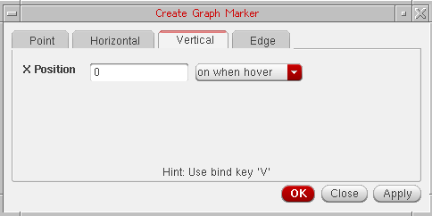The following field appears:- X Position—Specify the position on the X-axis where you want to create the marker. You can select a point on the trace; the X-axis value of that point is displayed in this field.
- In the drop-down list box, select the event for which you want to display the vertical marker.
You can create multiple vertical markers at the specified locations in one step by providing a set of X Position values. For example,10n20n30n.
The vertical marker appears in a dash line style. To change the line style, right-click the marker and choose Vertical Marker Properties. For more information see, Setting Marker Properties.
The horizontal and vertical markers show all intercepts on all traces across all strips in a subwindow. To display the horizontal and vertical marker intercepts, right-click a horizontal or vertical marker and choose one of the following options in the Intercepts menu – Off, On When Hover, or On.
Adding Vertical and Horizontal Markers on Point Marker Location
You can add a vertical or a horizontal marker at the same location where a point marker is placed.
To add a vertical marker, right-click the point marker and choose Create Vertical Marker.
To add a horizontal marker, right-click the point marker and choose Create Horizontal Marker.
Adding an Edge Marker
-
To add an edge marker, click the Edge tab.
The following fields appear:- Edge—Specify the edge number where you want to create an edge marker. The total number of edges are displayed next to this field.
- Trace—Select a trace from the drop-down on which you want to place the edge marker. This drop-down lists the name of all traces that are plotted in the selected window.
- For more information about how to create edge markers, see Creating an Edge Marker.
The following figure shows a point, vertical, and horizontal marker.
Adding Markers with Bindkeys
To add a marker with the help of bindkeys, do the following:
- Click a point on the graph where you want to place a marker.
-
Press one of the following keys:
A marker is placed on the trace based on the bindkey you use.
Adding a Period Marker
The Period Marker measures the distance between the selected edge and its adjacent rising or falling edge. By default, this measures the threshold mid-point distance between the two edges. You can use the marker context menu options to change the start and end measurement points for each edge. For example, you can measure from the high threshold of the first edge to the low threshold of the end edge. When you create a period marker, if required, the edge markers are added and connected with a standard delta marker. For more information about this marker, see Transient Measurement Assistant.
Adding a Dx/Dy Marker
The Dx/Dy marker is a standard delta marker with end points initially placed at the low and high threshold intercept points of a single edge. After this marker is created, you can perform all the delta marker operations on it. The dx/dy marker does not change with the change in the edges. For more information about this marker, see Transient Measurement Assistant.
Adding a Delta Marker
Delta markers are used to mark the difference between two points in a graph. A delta marker joins two point markers in the same or different traces. To place a delta marker you must first place a point marker or select one. Delta markers can be moved or deleted independent of their point markers. For information about how to work with a delta marker, see Working with Delta Markers.
Repositioning Marker Labels
You can drag and move the labels attached to the horizontal and vertical markers. To bring the marker labels back to their original position, right-click the horizontal, or vertical markers and choose Reposition Intercept Labels.
After moving labels attached to the point, reference points (A/B marker), delta, and circle markers, you can bring the marker labels back to their original position by right-clicking the point marker and choosing Reposition Labels.
Setting Marker Properties
To view or change the properties of markers, do one of the following.
- Double-click the marker.
-
Right-click the marker and choose Marker Properties.
The Marker Attribute Properties form appears. The properties form displays different fields based on the type of marker selected.
Setting Properties for Point Markers
The following fields are displayed for setting the properties of a point marker:
- Label—Specify the label for the marker. See Marker Labels for more information.
- Expression—Specify the expression associated with the marker. For more information about expressions, see Adding Markers.
- Trace—Specify the name of the trace to which you want to attach the marker.
-
Position—Specify X-axis and Y-axis position for point marker. By default, the position is
byXMode. - Font/Color—Specify the font name, style, and size for the label.
-
Notation—Specify the notation to be displayed on labels. The available options are—
Suffix,Engineering, andScientific. Default value:Suffix. -
Significant Digits—Specify the number of significant digits if you select
manualfrom the drop-down. The other option isauto. -
Cross Hairs—Specify whether you want to display the cross hairs for point marker or delta marker. If you select Dynamic from the Cross Hairs drop-down list box and click the reference point marker, the cross hairs are displayed.
Alternatively, to turn on the cross hairs for a delta marker, right-click one of the reference point markers and choose Draw Cross Hairs – On/Off/Dynamic. -
Next/Prev SnapPoint—Specify the criterion based on which the selected reference point marker should be snapped.
The available options are—Local Maxima,Local Minima,Local Max or Min,Specific Y Value,Specific X Value,Data Point,Global Maxima, andGlobal Minima.
Default value:Data Point.
Setting Properties for Horizontal and Vertical Markers
To change the properties for horizontal or vertical marker, do one of the following:
- Select the marker and choose Marker – Properties.
- Right-click the marker and choose Vertical Marker Properties for vertical marker and Horizontal Marker Properties for horizontal marker.
- Right-click the marker column in the Vertical or Horizontal Marker Table and choose Vertical Marker Properties for vertical marker and Horizontal Marker Properties for horizontal marker. For more information about marker tables, see Displaying Intercept Data for Markers in Marker Tables.
The following fields are displayed for setting the properties of a horizontal or vertical marker:
- Y Position—Specify the Y-coordinates where you want to place the horizontal marker. You can specify multiple Y-coordinates to place multiple horizontal markers at a time.
- X Position—Specify the X-coordinates of the point where you want to place the vertical marker. You can specify multiple X-coordinates to place multiple vertical markers at a time.
- Intercepts—Specify the event for the marker intercept label display. Alternatively, right-click the marker and choose Intercepts – Off/On When Hover/On.
- Font/Color—Specify the font name, style, and size for the label.
- Foreground—Select the foreground color for the symbol, the arrow and the label.
- Line Style—Specify the marker line style, such as dotted.
-
Significant Digits—Specify the number of significant digits if you select
manualfrom the drop-down. The other option isauto. -
Next/Prev SnapPoint—Specify the criterion based on which the selected reference point marker should be snapped.
The available options are—Local Maxima,Local Minima,Local Max or Min,Specific Y Value,Specific X Value,Data Point,Global Maxima, andGlobal Minima.
TheSpecific X Valueoption is not available for horizontal markers.
Default value:Data Point.
Setting Properties for Spec Markers
To view or change the properties of spec markers, right click the corresponding trace and choose Spec Properties.
The Spec Marker Properties for Specification form is displayed, as shown in the following figure:
In this form, you can edit the following properties:
- Spec Label Name—Shows the spec name that is displayed on the label.
-
Display Mode—Specify the spec marker pass/fail display style. The available options are
none,pass,fail,both,thresholdOnly, andpointsOnly. - Threshold Settings—Specify the line style, line thickness, and line color for the spec marker.
- Pass/Fail Color—Specify the colors to shade pass or fail regions.
- Label Settings—Specify the font and display settings for spec marker labels.
If a graph contains multiple traces, spec marker properties cannot be changed for an individual trace. Changes in spec marker properties are applicable for all the traces of a graph.
Snapping Markers
You can snap markers to analog and digital traces. In analog traces, you can also set the criteria based on which you want to snap markers, where as digital markers can be snapped only to the edge transitions, low to high and high to low. If the marker extends beyond the display area, the marker is panned automatically.
For digital traces or buses, the vertical, delta, and point markers can be snapped and for analog traces, the horizontal, vertical, delta, and point markers can be snapped based on the snapping criterion.
To set the snapping criteria to snap the markers to analog traces in the window, do the following:
-
Select a maker and choose a snapping criterion from the drop-down list box displayed on the snap toolbar based on which you want to snap the marker. For example, local maxima, local minima, and so on. By default,
Data Pointis selected in the drop-down list box.
When you add a vertical or horizontal marker on a trace, the Value field displays the X-axis location of the selected marker. This field is updated automatically if you move the marker.
- Specify a value for the selected snap criterion by which you want to snap the marker.
-
Then, to snap the marker to the next and previous snap points, do one of the following:
- On the Snap toolbar, click the Next Edge and Previous Edge buttons.
- Right-click the selected marker and choose Next Edge and Previous Edge respectively. These options are not available in Horizontal marker context menu.
-
Press the
NorPbindkeys to move to the next or previous edges, respectively.
The selected marker is snapped based on the snap criterion you selected. For example, if you select Local Maxima as the snap criterion, the marker is shifted to the maxima value (peak) local to the curve when you click the Next Edge button.
You can select any one of the following snap criterion:- Local Maxima—Defines the transition point when there is a change in the slope from the rising to falling edge starting from the marker’s current position. The local maxima is calculated as the change in slope from rising to falling edge starting from the current marker position and the transition point is known as the local maxima.
-
Local Minima—Defines the transition point when there is a change in the slope from the falling to rising edge starting from the marker’s current position.
- Specific Y Value—Defines the snap point of the marker to a specific Y-axis value.
-
Specific X Value—Defines the snap point of the marker to a specific X-axis value.
- Data Point—Defines that a specific data point on the curve should be considered as the snap point. This is the default snap criterion.
- Global Maxima—This snap criterion is similar to local maxima. The only difference is that it applies the snap settings to the global maxima or positive peak.
- Global Minima—This snap criterion is similar to local minima. The only difference is that it applies the snap settings to the global minimum value.
If you want to use the same snap criterion to snap a marker to more than one analog trace, select the maker and then hold down the Ctrl key and click the analog traces. Next, click the Next Edge or Previous Edge button to snap the marker to the snap points on the selected traces.
To snap digital markers, select the digital marker and click the Next Edge and Previous Edge buttons on the Snap toolbar.
For more information about snapping point markers and reference point markers on circular graphs, see Snapping Markers on Circular Graphs.
Customizing Markers
This section includes the following topics:
- Displaying Intercept Data for Markers in Marker Tables
- Deleting a Marker
- Editing a Marker
- Moving a Marker
- Zooming a Marker
Displaying Intercept Data for Markers in Marker Tables
Vertical Marker Table
To display the vertical marker intercepts, do the following:
The Vert Marker Table assistant appears at the bottom of the window, displaying all vertical marker intercepts for each trace. When you add a vertical marker on a trace, the vertical marker intercepts for all the traces are displayed in the marker table.
In the vertical marker table, rows display the trace names and columns display the intercept points of each vertical marker.
If you create a delta marker between two or more vertical markers, the vertical marker table includes an additional column to display the vertical marker delta values on traces (as shown in the figure below).
You can create a delta marker between two vertical markers by using one of the following methods:
-
Create a vertical marker by using the bindkey
V. Keeping the marker selected, place the mouse pointer at a point on the trace where you want to create the other vertical marker. Press the bindkeyD. A delta marker is created between the two vertical markers. -
Select all vertical markers by using the
Ctrlkey and choose Marker – Create Delta Marker. -
Select all vertical markers by using the
Ctrlkey and press bindkeyShift+D.
If you do not want to display delta values in the vertical marker table, right-click the delta line joining two vertical markers and choose Diff Visible.
You use the horizontal marker table to view the trace intercepts for all the horizontal markers in a table.
Horizontal Marker Table
To display the horizontal marker intercepts in a table, do the following:
-
Choose Window – Assistants – Horizontal Marker Table.
The Horiz Marker Table form appears at the bottom of the window and displays the intercepts where horizontal marker intersects traces in the graph.
The horizontal marker table includes a separate tab for each horizontal marker. The marker table for the active horizontal marker is displayed. If you change the marker name, the tab name in the table is updated automatically.
If the graph includes multiple Y-axes, do the following to change the axis of the horizontal marker:
Horizontal marker now shows intercepts for the traces that are attached to the axis you select. The marker table is also updated with the new intercepts.
Exporting Markers
To export the vertical marker intercept data in a CSV file, do the following:
-
Choose Marker – Export – Vertical Marker.
The Export marker information form appears. In this form, specify the name and location of the CSV file in which you want to save the vertical marker information and then click Save.
To export the horizontal marker intercept data in a CSV file, do the following:
-
Choose Marker – Export – Horizontal Marker.
The Save As form appears. In this form, specify the name and location of the CSV file in which you want to save the horizontal marker information and then click Save.
Deleting a Marker
To delete a marker, do one of the following:
-
Select a marker and choose Edit – Delete, or press the
Deletekey. - Right-click a marker and choose Delete.
To delete all markers on a trace, select a marker and do one of the following:
To delete a AB delta marker, you can right-click any of the two point markers or the delta marker line and choose Delete. The A and B markers in the delta marker are deleted.
Editing a Marker
The default marker attributes are controlled by the values assigned to variables in the .cdsenv file. For more information, see Appendix A, “Virtuoso Visualization and Analysis XL Tool Environment Variables.”
To edit a marker, double-click the marker. The Marker Properties form appears. Edit the required fields in this form. For more information about the fields, see Setting AB Delta Marker Reference Point Properties.
Moving a Marker
To move a point marker, drag the point marker anywhere on the trace.
To move a vertical marker, place the pointer on the vertical marker. When the pointer becomes a bidirectional arrow, drag the pointer along the X-axis to move the marker. Similarly, drag a horizontal marker along the Y-axis to move the marker.
Zooming a Marker
You can zoom in a graph and add a point marker on the zoomed in region of the graph. Now, when you zoom out, if the data point where you created a marker is out of the current screen, the marker may not place correctly and move out of the screen range.
The data point which is out of the current screen is always closer to a data point inside the current screen, because the X range is much smaller than the Y range. Virtuoso Visualization and Analysis XL looks for the closest data point among all data and not the data on the current screen.
Consider the following example in which you zoom in to the range from 450ns to 500ns and then move the pointer to (480ns, 0.4V) and then add a point marker. This marker is placed at (274ns, 0.0081V) because data points on screen are (482ns, 0.00464V) (472s, 0.00453V), and so on. Notice (480ns, 0.4V) is closer to (274ns, 0.0081V) than the data points on the screen.
Working with Delta Markers
Delta markers are used to mark the difference between two points in a graph. A delta marker joins two point markers in the same or different traces. To place a delta marker you must first place a point marker or select one. Delta markers can be moved or deleted independent of their point markers.
You can move either end of a delta marker; X and Y coordinates are updated accordingly. You can use delta markers to measure delays or use them with the min and max functions to measure peak-to-peak values.
This section includes the following topics:
- Adding Delta Markers
- Adding AB Marker
- Setting AB Delta Marker Reference Point Properties
- Deleting Delta Markers
- Editing Delta Marker Properties
Adding Delta Markers
You can create delta markers between two or more point, vertical, and horizontal markers on one or more traces. You can also create delta markers between two different marker types. For example, you can create delta marker between point markers and vertical markers.
Following are the two methods that you can use to create multiple delta markers on a trace:
- Add two or more point markers. To know how to create a point marker, see Adding a Point Marker.
-
Select all the point markers by holding down the
Ctrlkey and do one of the following:
The delta markers are created between all the selected point markers. The method can be applied to create delta markers between any combinations of point, vertical, and horizontal markers.
-
Create a point marker. To know how to create a point marker, see Adding a Point Marker.
The point marker you created remains selected. - Place the mouse pointer on the trace where you want to create the second marker. You can create delta markers on multiple traces.
-
Press the bindkey
D.
A new point marker is created at the same point where you placed the mouse pointer and a delta between this new marker and the previously created point marker is also created. This new marker is of the same type as the marker type of the previously selected marker. For example, if you created a point marker in step1, the new maker created after step2 is also a point marker.
You can repeat this method to create delta markers between multiple point markers. The last marker that you create remains selected.
Repeat steps 2-3 to create delta marker between two or more vertical or horizontal markers.
To move a delta marker, you can set the snap criterion on a point marker in the delta marker. You can then use the Next Edge and Previous Edge buttons to move the selected point marker in the delta marker.
Adding AB Marker
AB marker is a delta marker of XY type and displays the dx, dy, and the slope values. Do the following to add an AB marker to the trace with the help of bindkeys:
- Move the mouse pointer to a location on the trace where you want to create an AB marker.
-
Press
A. - Move the mouse pointer to another point on the trace to specify the second location for the delta marker.
-
Press
B.
A delta marker of XY type appears on the graph. If one of the traces is a digital trace, the delta marker label displays only thedxvalue.
You can add multiple AB markers by repeating these steps.
Displaying Marker Labels in Delta Markers
To show or hide the marker labels for the point markers in a delta marker, do one of the following:
- Select the delta line and choose Marker – Show Child Labels.
- Right-click the delta line and choose Show Child Labels.
Setting AB Delta Marker Reference Point Properties
To view or change the properties of an AB reference point marker, do one of the following:
- Double-click any of the two point markers that compose the delta marker.
-
Right-click a point marker in the delta marker and choose Marker – Properties.
The Reference Point Marker Properties for <marker name> form appears.
This form includes the following fields:- Label—Specify the label for the marker. See Marker Labels for more information.
-
Position—Specify the X and Y coordinates of the reference point marker. You can specify the position by XY, X, and Y modes. By default, the position is set to
byXMode. - Font/Color—Specify the font type and font color for the marker label.
- Foreground—Select the foreground color for the symbol, the arrow and the label.
-
Notation—Specify the numerical format (notation) to be displayed on labels. The available options are—
Suffix,Engineering, andScientific. Default value:Suffix. -
Significant Digits—Specify the number of significant digits if you select
manualfrom the drop-down. The other option isauto. -
Cross Hairs—Specify whether you want to display the cross hairs for point marker or delta marker. If you select Dynamic from the Cross Hairs drop-down list box and click the reference point marker, the cross hairs are displayed.
Alternatively, to turn on the cross hairs for a delta marker, right-click one of the reference point markers and choose Draw Cross Hairs – On/Off/Dynamic. -
Next/Prev SnapPoint—Specify the criterion based on which the selected reference point marker should be snapped.
The available options are—Local Maxima,Local Minima,Local Max or Min,Specific Y Value,Specific X Value,Data Point,Global Maxima, andGlobal Minima.
TheSpecific X Valueoption is not available for horizontal markers.
Default value:Data Point.
Deleting Delta Markers
To delete the delta marker, right-click the line joining two point markers and choose Delete. All the delta markers are deleted.
To delete a particular set of delta marker, right-click the point marker which you want to delete and choose Delete. The selected point marker and the delta marker joining the point marker are deleted.
Editing Delta Marker Properties
To view or change the delta marker properties, do the following:
-
Right-click the delta marker line joining two or more point markers and choose Delta Marker Properties. The Delta Marker Properties for <delta marker name> form appears.
The form includes the following fields:-
Label—Specify the label for delta marker. The default is
[dx: %W] [dy: %H] [s: %S], where,-
dx:%W—Delta value on X-axis -
dy:%H—Delta value on Y-axis -
s:%S—Slope (dy/dx)If you do not enclose these labels in parenthesisThe following table shows how values are displayed in the marker labels of a delta marker when format strings are specified with and without parenthesis,[ ], the corresponding information is displayed without suffix notations in the marker label.[].
Format String Marker Label 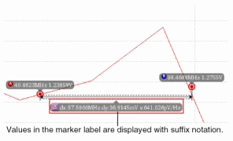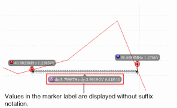
For more information about the values that you can use for marker labels, see Marker Labels. -
Dimension Marker Lines—Specify the X and Y-axis dimension lines for markers. To display the X-axis dimension line, select
X Only. To display the Y-axis dimension line, selectY Only. To display both the X and Y-axis dimension lines, selectX and Y. - Label Font/Line Color—Specify the font properties for the label and also specify the dimension line color.
-
Notation—Specify the notation to be displayed for the delta values on labels. The available options are—
Suffix,Engineering, andScientific. -
Significant Digits—Specifies the number of significant digits to be displayed in the calculated values. The default value is
4.
[].
Format String Marker Label
For more information about the values that you can use for marker labels, see Marker Labels. -
-
Dimension Marker Lines—Specify the X and Y-axis dimension lines for markers. To display the X-axis dimension line, select
X Only. To display the Y-axis dimension line, selectY Only. To display both the X and Y-axis dimension lines, selectX and Y. - Label Font/Line Color—Specify the font properties for the label and also specify the dimension line color.
-
Notation—Specify the notation to be displayed for the delta values on labels. The available options are—
Suffix,Engineering, andScientific. -
Significant Digits—Specifies the number of significant digits to be displayed in the calculated values. The default value is
4.
-
Label—Specify the label for delta marker. The default is
Working With Edge Markers
Edge Markers are special markers that can be attached to the rising or falling edges of a trace to measure the transient properties of the selected edge. The figure below displays an edge marker placed on the rising edge of a trace. The marker label displays the risetime value for this edge. If you place the edge marker on the falling edge of the trace, the marker label displays the falltime value for that edge.
The figure above also displays the Edge Browser at the bottom of the strip that you can use to view and analyze the various edges in the trace. By default, the Edge Browser is hidden in the graph. For more information about how to use Edge Browser, see Using Edge Browser.
This section includes the following topics:
- Creating an Edge Marker
- Setting Edge Marker Properties
- Edge Marker Context-Sensitive Menu
- Creating a Delta Marker between Edge Markers
Creating an Edge Marker
You can create an edge marker by using one of the following methods:
- Choose Marker – Create Marker.
- Click the button on the Marker toolbar.
- Use the Transient Measurement assistant to create an edge marker. For more information about transient measurement, see Transient Measurement Assistant
-
Right-click the Edge Browser and choose Create Edge Marker.
The Create Graph Marker form appears, as displayed in the figure below.
In this form, on the Edge tab, specify the following fields:- Edge—Specify the edge number where you want to create an edge marker. The total number of edges are displayed next to this field.
- Trace—Select a trace from the drop-down on which you want to place the edge marker. This drop-down lists the name of all traces that are plotted in the selected window.
- Click OK.
An edge marker is placed at the specified edge on the selected trace. -
Place the mouse pointer on the edge where you want to create an edge marker and press the bindkey
T. - Right-click an edge in the Edge Browser and choose Create Edge Marker. The edge marker is placed at the selected edge of the trace in the graph window.
- In the Transient Measurement assistant, select the edge on which you want to place the edge marker from the Edge drop-down and click the button. For more details, see Transient Measurement Assistant on page 251.
Setting Edge Marker Properties
Do the following to set the properties for the edge markers:
- Right-click the edge marker and choose Edge Marker Properties.
- Select the edge marker and choose Marker – Properties.
-
Select the edge marker and press the bindkey
Q.
The Transient Edge Marker Properties for Edge <edge number> form appears
This form includes the following fields:
-
Threshold—Specify the threshold value. The available options are: 10%-90%, 20%-80%, and 30%-70%. The default value is 20%-80%. The threshold value is controlled by the following environment variable:
envSetVal(“viva.trace” “threshold” 'string “20_80”) - Lock Threshold—Select this check box to lock the threshold value so that the threshold setting for an individual marker is not overridden if you change the settings of the trace.
- Font/Color—Specifies the font and color of the edge marker.
-
Notation—Specifies the notation of the edge marker. The valid values are
Scientific,Engineering, andSuffix. The default value isSuffix. -
Annotation—Specifies the event when to display the risetime and falltime values on the marker labels. The available values are
off,on when hover, andon. The default value ison when hover. -
Significant Digits—Specifies the number of significant digits to be displayed in the calculated values. The default value is
4.
Edge Marker Context-Sensitive Menu
Right-click the edge marker to use the various options listed in the context-sensitive (shortcut) menu. The following figure displays the available menu options:
The shortcut menu options are explained as below:
- Edge Marker Properties—Opens the Edge Marker properties form, where you can specify the marker properties for the selected marker. For more information on marker properties, see Setting Edge Marker Properties.
-
Threshold—Specifies the threshold value for the selected edge marker. The available options are: 10%-90%, 20%-80%, 30%-70%, and default. The default value is 20%-80%. The threshold value is controlled by the following environment variable:
envSetVal(“viva.trace” “threshold” 'string “20_80”) - Lock—Locks the threshold value so that the threshold setting for an individual edge marker is not overridden if you change the settings of the trace.
- Next Edge—Moves the selected edge marker to the next edge on the trace.
- Previous Edge—Moves the selected edge marker to the previous edge on the trace.
- Label with Dx/Dy—Creates a delta marker by adding two point markers and a delta line between them.
-
Zoom to Edge—Zooms in the selected edge marker to view the details of the edge on which it is placed. The following figure illustrates the zoomed-in graph.
-
Zoom to Edge Context—Zooms in the selected edge marker to the context of the edge on which it is placed. The following figure illustrates the zoomed-in graph.
-
Show Measurement—Specifies the event on which you want to show the measurement label for the selected edge marker. The available options are
off,on when hover, andon. You can also set the following environment variable to specify an event:
envSetVal("viva.transEdgeMarker""showMeasSummary"'string "on when hover") - Reposition Labels—Moves the selected marker label back to its default position.
- Delete—Deletes the selected edge marker.
- Send To—Sends the edge marker measurements, such as slewRate, overshoot, undershoot, risetime and falltime to ADE or Calculator.
Creating a Delta Marker between Edge Markers
To create delta markers between two or more edge markers on a single or multiple traces, perform the following steps:
-
Create an edge marker using the bindkey
tand then select this edge marker. -
Place the pointer close to a rising or falling edge on the same or another trace and press the bindkey
d.
A new edge maker is created at the selected point and a delta marker is created between the two edge makers. You can also select more than one markers and repeat these steps to create further edge markers and delta markers.
Alternatively, to create delta markers between two or more edge markers on a single or multiple traces, perform the following steps:
-
Create an edge marker on the first trace using the bindkey
t. -
Create an edge marker on the second trace using the bindkey
t. -
Now, select both the edge markers using
Ctrl+clickand pressShift+D.
A delta maker is created at between the selected edge markers.
Working with Circular Graphs
You can display complex data values from AC analysis in the form of Smith charts and polar plots. The Smith chart shows the unity circle that is R = 1 circle, the resistance circles, and the reactance circles.
This section includes the following topics:
- Creating a Circular Graph
- Adding Markers on Circular Graphs
- Snapping Markers on Circular Graphs
- Zooming Circular Graphs
- Editing Circular Graph Properties
- Using the Frequency Slider Bar
- Setting Smith Grid Properties
Creating a Circular Graph
To create a circular graph, do the following:
-
Open a results directory in the Results Browser, and then open the ac-ac analysis directory.
The Graph Type drop-down list appears on the Results Browser toolbar. -
Select a graph type from this list. The available graph types are—
Default,Rectangular,Polar,Impedance,Admittance,Immittance, andRealvsImag.-
To create a polar plot, select the
Polargraph type. -
To create a Smith chart, select either
Impedance,Admittance, orImmittancegraph type.
For more information about the graph types, see Selecting the Graph Type. -
To create a polar plot, select the
-
Plot a signal in the selected destination. For more information about how to plot a signal, see Plotting Signals.
For information about how to select a plot destination, see Selecting the Signal Plot Destination.
The circular graphs can be of two types—Smith charts and polar graphs. The Smith chart can further be of three types—Impedance Smith Charts (Z Smith), Admittance Smith Charts (Y Smith), and Immittance Smith Charts (Combined Z Smith and Y Smith). The circular graph of type Z Smith is displayed in the figure below.
Type of Smith Charts
-
Impedance or Z Smith: In the Z Smith chart, the region above the X-axis represents inductive impedances (positive imaginary parts) and the region below the X-axis represents capacitive impedances (negative imaginary parts).
-
Admittance or Y Smith: In the Y Smith chart, the region above the X-axis represents capacitive admittances and the region below the X-axis represents inductive admittances. Capacitive admittances have positive imaginary parts and inductive admittances have negative imaginary parts.
The Y Smith chart appears like a normalized Impedance Chart, but with the graphic scaling rotated through 180 and the numeric scaling remains unchanged.
-
Immittance: In the Immittance Smith Chart, both Z Smith and Y Smith grids are plotted on the same chart. The Immittance Smith Chart has two grids: red and green. The red grid represents the Impedance or Z Smith grid, whereas the green grid represents the Admittance or Y Smith grid.
On the red grid, the region above the X-axis represents inductive impedances (positive imaginary parts) and the region below the X-axis represents capacitive impedances (negative imaginary parts).
On the green grid, the region above the X-axis represents capacitive admittances (positive imaginary parts) and the region below the X-axis represents inductive admittances (negative imaginary parts).
After a Smith chart is plotted, the following sections are displayed in the trace legend area on the left:
- Name—Displays the trace name and trace color.
- Visibility—Controls the display of the trace. You can show or hide the trace by clicking the visibility button ( ).
-
Tracking Info—Displays the following tracking information for the points that you click or point to:
-
Zo—Displays the characteristic impedance (
Zo). The defaultZovalue is 50. -
Normalize—Normalizes the readings. When you select the Normalize check box, the Smith reference values are multiplied with the impedance value that you specify in the
Zofield. - Real + Imag—Displays the real and the imaginary values of the point selected on the trace
- Gamma—Displays the magnitude and the angle of the selected point on the trace.
- Zd—Displays the impedance of the point selected on the trace.
- Yd—Displays the admittance of the point selected on the trace.
- Frequency—Displays the frequency of the point selected on the trace.
-
Zo—Displays the characteristic impedance (
-
Reference point values—Displays the reference marker readout. The reference point readout includes Real + Imag, Gamma, Zd and Yd values of the reference point, and the Voltage Standing Wave Ratio (VSWR). The VSWR is a scalar value.
The resistance and reactance circles, along with the reflection coefficient and VSWR circle are displayed on the graph. You can turn these values off and on by clicking the respective visible check boxes next to each field.
The default scale attributes for circular graphs are controlled by the values assigned to the variables in the .cdsenv file. For more information, see Appendix A, “Virtuoso Visualization and Analysis XL Tool Environment Variables.”
Tracking Cursor
The tracking cursor displays the trace name, trace color, and frequency of the point you that you select or point to on the circular graph. For a Smith chart, the tracking cursor also displays the real and imaginary values. However, for polar plots, the tracking cursor displays the magnitude and angle, instead of the real and imaginary values.
The rest of the circular graph values are displayed dynamically in the various sections in the trace legend area.
To show or hide the tracking cursor, do one of the following:
- Right-click anywhere in the graph and choose Trace Marker Always Visible.
- Choose Marker – Tracking Cursor
- Click the button on the Marker toolbar.
You can also set the traceMarkerDisplay .cdsenv variable to display values for the tracking cursor, which is also called a trace marker. The following formats are supported to display the trace marker values:
-
%C—Displays the real and imaginary Cartesian values -
%Z—Displays the impedance values, such as resistance and reactance -
%A—Displays the admittance values, such as conductance and susceptance -
%R—Displays the reflection coefficients, such as mag and angle -
%P—Displays the polar values, such as mag and angle -
%F—Displays the frequency value, which includes the independent axis data
Displaying Symbols on Circular Traces
To display symbols on a circular trace, do one of the following:
- Choose Trace – Symbols On.
- Right-click the trace and choose Symbols On.
-
Right-click the trace and choose Trace Properties.
The Complex Trace Properties for <trace-name> form appears.
In this form, select the Turn On Symbols check box to display symbols on the trace. By default, the symbols are displayed for all trace points. To display symbols for a given number of trace points, specify the count in the Points per Symbol field.
After turning on the symbols, you can select the symbol type by doing one of the following:
- Right-click the trace and choose Symbols, and then select the symbol type that you want to apply.
-
Right-click the trace and choose Trace Properties.
The Complex Trace Properties for <trace-name> form appears. In this form, select the symbol that you want to display for the data points on the trace from the Symbols drop-down list. - In the Color field, select the foreground color for the trace. Alternatively, you can also set the trace color by right-clicking the trace and selecting Color.
You can also set the dependent modifiers for an AC or a complex dataset, such as Magnitude, dB10, dBm, and dB20. See the Setting Dependent Modifiers for a Complex Trace for more information.
Adding Markers on Circular Graphs
You can add reference, point, circular, and delta markers on circular graphs. By default, the markers in the circular graphs are always visible. To hide the markers, you can set the tracemarkeralwaysvisible .cdsenv variable to false.
Adding a Circular Marker
To add a circular marker on polar plots or Smith graphs,
-
Choose Marker — Create Marker.
The Create Graph Marker form appears. -
Open the Circular tab. The form fields corresponding to circular marker appear, as shown in the figure below.
-
Specify the following fields:
-
Label—Specify a label for the marker. See Marker Labels for more information.
-
Position—Type the real and imaginary values (
x+ij) where you want to add the circular maker. Alternatively, you can select a point on the graph where you want to add the circular marker. The real and imaginary values of the point you select are automatically added in the Position field. - Radius—Specify the radius (magnitude) of the circle.
- Description—Specify an additional information about the circular marker. The description text is displayed when you move the pointer on the marker.
- Color—Specify the marker outline and fill color.
-
Label—Specify a label for the marker. See Marker Labels for more information.
-
Click OK.
The circular marker according to the specified values is created on the circular graph.
The figure below shows an example of the circular graph added on a polar plot.
Adding a Smith Reference Point Marker
To add a Smith reference point maker on a circular graph, select a point on the trace and press the bindkey R. The reference maker is created from the center to the selected point. The readout for the reference point marker—Real + Imag, Gamma, Zd, Yd, and VSWR—is displayed in the Reference point values section in the trace legend area.
Setting Smith Reference Point Marker Properties
To set the reference marker properties, right-click a reference marker and choose Smith Ref Point Properties. The Smith Reference Point Marker Properties for <marker_name> form opens.
The Smith Reference Point Marker Properties for <marker_name> form includes the following fields:
-
Frequency—Specify the frequency to move the marker by frequency. If the data point for the specified frequency exists on the graph, the marker will be moved to that data point.See the Snapping Markers on Circular Graphs section for more information.
- Real/Imag Position—Displays the real and imaginary values of the data point on the trace where marker is currently attached. This is a read-only field.
- Gamma: Displays the magnitude and the angle of the data point on the trace where marker is currently attached. This is a read-only field.
- Impedance (Z): Displays the impedance of the data point on the trace where marker is currently attached. This is a read-only field.
- Admittance (Y): Displays the admittance of data point on the trace where marker is currently attached. This is a read-only field.
-
Numerical Format—Select the numerical format as
Scientific,Engineering, andSuffix.
Adding a Point Marker
To add a point marker, do one of the following:
-
Select the point on the trace where you want to add the point marker and press
M. -
Press the bindkey
M.
The point marker is created on the point you click on the trace.
To change the point marker properties, right-click the point marker and choose Marker Properties. The Point Marker Properties for <marker-name> form appears.
Setting Point Marker Properties for a Circular Graph
The following fields are displayed for setting the properties of a point marker for a circular graph:
- Label—Specify the label for the marker. See Marker Labels for more information.
- Expression—Specify the expression associated with the marker. For more information about expressions, see Adding Markers.
- Trace—Specify the name of the trace to which you want to attach the marker.
-
Frequency—Specify the frequency to move the marker by frequency. If the data point for the specified frequency exists on the graph, the marker will be moved to that data point.See the Snapping Markers on Circular Graphs section for more information.
- Real/Imag Position: Displays the real and imaginary values of the data point on the trace where marker is currently attached. This is a read-only field.
- Gamma: Displays the magnitude and the angle of the data point on the trace where marker is currently attached. This is a read-only field.
- Impedance (Z): Displays the impedance of the data point on the trace where marker is currently attached. This is a read-only field.
- Admittance (Y): Displays the admittance of data point on the trace where marker is currently attached. This is a read-only field.
- Font/Color—Specify the font name, style, and size for the label.
-
Notation—Specify the notation to be displayed on labels. The available options are—
Suffix,Engineering, andScientific. Default value:Suffix. -
Significant Digits—Specify the number of significant digits if you select
manualfrom the drop-down. The other option isauto. -
Next/Prev SnapPoint—Specify the criterion based on which the selected marker is to be snapped. See the Snapping Markers on Circular Graphs section for more information.
The available options are—FrequencyandSpecific Frequency.
Default value:Frequency.
Adding a Circular Marker
To add a circular marker, do the following:
The Create Graph Marker form appears. On the Circular tab, in the Position field, specify the real and imaginary values for the circular marker. In the Radius field, specify the radius. For more information about the circular marker fields displayed in the Create Graph Marker form, see Adding Markers.
Deleting Markers
To delete a marker, see Deleting a Marker.
Snapping Markers on Circular Graphs
You can snap point markers and reference point markers on circular graphs based on the following point of interest (POI) criteria:
- Frequency: Snaps the marker on the trace to the data point where there is a change in frequency on the circular graph.
-
Specific Frequency: Snaps the marker based on the specified frequency:
- If the data point for the specified frequency exists on the graph, the marker will be moved to that data point.
- If the data point for the specified frequency does not exist on the graph, and the frequency value is within the range of frequencies for the waveform, the marker will be moved to a point that is obtained using linear interpolation of the following values:
- If the specified frequency is out of range of frequencies for the waveform, the marker will not be moved and an error message will be displayed on the CIW.
POI criteria defines the data point on the trace where the marker is moved when you snap it.
Follow these steps to snap a point marker or a reference point marker on a circular graph:
-
Select the marker and choose either Frequency or Specific Frequency as the POI criteria from the POI criteria drop-down list displayed on the snap toolbar, as shown in the following figure.
-
Depending upon the POI criteria that you selected in step 1, do the following:
-
If you selected Frequency, click Next POI or Previous POI on the snap toolbar to move the marker to the next or previous data points, respectively.
You can also use theNorPbindkeys to snap the marker to the next or previous data points, respectively. - If you select Specific Frequency, the text field next to the POI criteria drop-down list becomes available. Specify the frequency value in the field to snap the marker to that location.
-
If you selected Frequency, click Next POI or Previous POI on the snap toolbar to move the marker to the next or previous data points, respectively.
You can also snap a marker by clicking the Next POI and Previous POI commands from the context menus of the Point Marker Properties and Smith Reference Point Marker Properties forms.
Alternatively, you can specify the frequency in the Frequency fields on these forms to snap the markers. See the Setting Point Marker Properties for a Circular Graph and Setting Smith Reference Point Marker Properties sections for more information.
Plotting Circular Graphs with Different Axis Units
By default, the circular graphs with the matching dependent axis units are plotted in the append mode in the same window.
To append data with different dependent axis units to an existing polar or smith graph,
-
Right-click the graph and choose Axis Allows Any Units.
The circular graphs with any axis units can now be plotted in the same window.
Zooming Circular Graphs
You can zoom in or out the circular graph by doing the following:
- To fit the circular graph to the data values, choose View – Fit or right-click anywhere on the circular graph and choose Fit.
- To fit the trace in the circular graph to the window, do one of the following:
- To fit the circular graph to the Smith values, do one of the following:
Editing Circular Graph Properties
To set the properties of the circular graph, do one of the following:
- Choose Graph – Properties.
-
Right-click anywhere in the circular graph and choose Smith Graph Properties for a Smith chart and Polar Graph Properties for a polar graph.
The Circular Graph Properties form appears.
This form includes the following two tabs:
-
General—For information about the fields displayed on the General tab, see Editing Graph Properties.
-
Trace Marker Display—Specify the following formats to display the trace marker values:
-
%C—Displays the real and imaginary Cartesian values -
%P—Displays the polar values, such as mag and angle -
%Z—Displays the impedance values, such as resistance and reactance -
%A—Displays the admittance values, such as conductance and susceptance -
%R—Displays the reflection coefficients, such as mag and angle -
%F—Displays the frequency value, which includes the independent axis data
-
-
Trace Marker Display—Specify the following formats to display the trace marker values:
-
Graph Options—Includes the following fields:
- Font—Select the font properties of the Smith Chart.
-
Notation—Select the graph notation as
Scientific,Engineering, orSuffix. Default value:Suffix. - Reload using Current Context—When this check box is selected, signals in the graph are reloaded according to the data from the current in-context results directory. If this check box is not selected, signals are reloaded based on their individual databases. This check box is selected by default.
-
Grid Type—Select the grid type as
Polar,Impedance,Admittance, orImmittance. -
Legend position—Sets the trace legend position as
left,inside, orabove. Default value:above. - Show Frequency Filter—When this check box is selected, a slider bar is displayed on the circular graph. You can use this slider bar as a frequency filter to selectively display data between the specified frequencies on the circular graph. See the Using the Frequency Slider Bar section for more information.
- Frequency Filter—Select the minimum and maximum frequencies between which you want to display data on a circular graph. You can also use the slider bar as a frequency filter.
- Smith Data—Specify the characteristic impedance Zo. Select the Normalize Smith Value check box if you want to normalize the Smith data values according to the impedance you specify.
- Click OK.
Using the Frequency Slider Bar
The following figure shows the frequency slider bar that appears on top of a circular graph.
You can use this slider bar as a frequency filter to set a range of frequencies. Data on the circular graph is filtered and selectively displayed based on the specified frequency range.
To set the minimum and the maximum frequencies, do the following:
- Move the left-end of the slider bar to set the minimum frequency.
- Move the right-end of the slider bar to set the maximum frequency.
- Move the slider bar to the left or right of the graph to change both the minimum and the maximum frequencies simultaneously.
-
Double-click the slider bar to open the Zoom To form, where you can set the values of Minimum and Maximum frequencies.
- Right-click the slider bar and select one of the following options to reset the applied frequency filters:
Setting Smith Grid Properties
To set the Smith grid properties, right-click a Smith chart and choose Smith Grid Properties. The Smith Grid Properties form appears.

The form includes the following fields:
- Compressed Smith—Select this check box if you want to display the extra horizontal grid lines (arcs) outside the Smith chart boundary.
- Perimeter Labels—Select this check box if you want to display labels at arc intersections on the Smith unity circle.
- Font—Specify the font properties for the Smith chart labels.
Setting Polar Grid Properties
To set the polar grid properties, right-click a polar plot and choose Polar Grid Properties. The Polar Grid Properties form appears.
This form includes the following fields:
-
Circles—Specify the number of circles you want to draw on the polar grid. Default value is
0. -
Radials—Specify the number of radials you want to draw in each quarter of the polar grid. Default value is
2. - Font—Select the font properties for the polar grid labels.
Setting Dependent Modifiers for a Complex Trace
You can set the dependent modifiers for an AC or a complex dataset, such as Mag, dB10, dBm, and dB20. You can also calculate these modifiers based on the resulting eye diagram and the spectrum waveform.
To change the modifier for an AC or a complex dataset, do one of the following:
-
Right-click the AC waveform and choose Dependent Modifier – Magnitude/Phase/dB10/dB20/dBm/WrapPhase/Real/Imag.
The selected modifier is plotted in the window in which the graph was plotted. -
Right-click the AC waveform and choose Trace Properties.
The Complex Trace Properties form appears. In this form, from the Dependent Modifier drop-down list, select one of the following modifiers that you want to apply to the trace:- Magnitude—Plots magnitude versus frequency.
- dB10—Plots dB10 value of the dependent data versus frequency.
- dB20—Plots dB20 value of the dependent data versus frequency.
- dBm—Plots mili dB value of the dependent data versus frequency.
- Phase—Plots phase versus frequency.
- WPhase—Plots wrapped phase versus frequency.
- Real—Plots real value of the dependent data versus frequency.
- Imaginary—Plots imaginary value of the dependent data versus frequency.
The selected modifier is plotted in the window in which the circular graph was plotted.
Setting Bindkeys
A bindkey is a key or a sequence of key press events linked (bound) to a task. When you press the key or the sequence of keys, the associated task is performed. The Virtuoso Visualization and Analysis XL too provides a set of default bindkeys, which are displayed next to the relevant commands on the menus. These bindkeys can be overwritten or modified by a customized bindkey file.
The sample bindkey files are found at the following locations:
$CDSHOME/tools/dfII/samples/local/vivaBindKeys.il
$CDSHOME/tools/dfII/samples/local/vivaJavaBindKeys.il
To view all the bindkeys for the Virtuoso Visualization and Analysis XL tool, in CIW, choose Options Bindkey. The Bindkey Editor appears that includes all the bindkeys for all applications, such as vivaBrowser, vivaCalculator, and vivaGraph.
You can map keystrokes to the tasks that you perform in the window. However, you cannot bind mouse actions to tasks. A task is defined as follows:
Task = { graph_task | menu_item_task | skill_function }
A keystroke is defined as follows:
keystroke = simple_keystroke | composite_keystroke
The below table lists the bindkeys available in Virtuoso Visualization and Analysis XL:
| Command | Bindkey |
|---|---|
|
Stop listening for signal selection in the Function Assistant |
|
Working with Tabular Graph
You can use tabular graph to display waveform data in a table. Tabular graphs offer a convenient way to analyze waveform data, especially for s-parameter data.
This section included the following topics:
- Creating a Tabular Graph
- Editing Tabular Graph Properties
- Using Tabular Trace Properties Commands for a Column
- Using Tabular Trace Properties Commands for a Row
- Customizing Display of s-Parameter Data
Creating a Tabular Graph
-
From the File tool bar of Virtuoso Visualization and Analysis XL, choose Create New Window – Tabular.
An empty tabular graph window opens.
-
From the Results Browser, right-click the signals, and then select Plot Signal.
Alternatively, you can drag the signals onto the tabular graph window.
The waveform data of the selected signals is displayed in a table in the tabular graph window.
The left-most column in the table represents the X-axis values. The multi-level headers represent the trace names and their Y-axis values for the corresponding X-axis values.
The empty cells in the table indicate that the corresponding data points are not available in the trace. However, you can obtain these values using interpolation method by right-clicking any cell and then choosing Tabular Trace Properties – Interpolate. The interpolated values are updated in the tabular graphs. These values are marked with an asterisk (*).
Editing Tabular Graph Properties
To edit the properties of a tabular graph:
-
From the menu bar of Virtuoso Visualization and Analysis XL, choose Graph – Properties.
Alternatively, right-click on the tabular graph window, and then select Tabular Graph Properties.
The Tabular Graph Properties form is displayed.
-
On the General tab, specify the following properties:
- Graph Title— Title of the graph that is displayed at the top of the graph. When you select the Default check box next to this field, you cannot edit the graph title or provide a new graph title. The default graph name includes the name of the analysis and the Y-axis name.
- User Title— Title of the graph window that you want to set. You must clear the Default check box to edit this field.
- Title Font— Font properties of the graph title.
-
On the Graph Options tab, specify the following fields:
- Interpolation— Interpolated values of the signal for data points that are not available in the trace are shown in the tabular graph. These values are marked with an asterisk (*).
- Font— The font properties for the graph and its components, such as labels and axes.
- Use Common Format— Common format of notation is used for all values in the tabular graph.
- Notation—Specifies the notation type to be used for displaying data. You can specify one of the following three notation types:
- Significant Digits— Number of significant digits to be displayed in the calculated values. The default value is 4. You must select Manual to edit this value.
- Reload using Current Context— When this check box is selected, signals in the graph are reloaded according to the data from the current in-context results directory. If this check box is not selected, signals are reloaded based on their individual databases. This check box is selected by default.
- Click Apply and then click OK to save the changes.
Using Tabular Trace Properties Commands for a Column
Right-click a column header in the tabular graph, and then select one of the following Tabular Trace Properties commands:
- Interpolate— Displays the interpolated values of the signal for data points that are not available in the trace. These values are marked with an asterisk (*).
- Hide— Hides the selected column.
- Reveal Columns— Reveals all hidden columns.
- Format Column— Formats the values displayed in the selected columns. In the Format Attributes form, select a notation from the Scale Format drop-down list. Specify the number of significant digits.
- Reveal All— Reveals all hidden columns and rows.
- Sort— Sorts the values in ascending or descending order.
- Resize to Contents— Resizes the width of columns to ensure that the contents displayed in them are fully visible.
- Resize to Defaults— Restores the default width of columns.
In addition to these commands, you can also use the following context-menu commands upon right-clicking a column header of a tabular graph:
- Trace Properties— Opens the Trace Properties form for the selected trace.
- Cut— Moves the selected trace (column) to the clipboard. You can then paste the trace into a new graph window or subwindow.
- Copy— Copies the selected trace (column) to the clipboard. You can then paste the trace into a new graph window or subwindow.
- Paste— Pastes the contents of the clipboard to the selected graph window or subwindow.
- Delete—Deletes the selected trace (column) from the tabular graph.
- Send to— Sends the selected data to Virtuoso Visualization and Analysis XL table, Calculator, or ADE.
- Move to— Moves the selected column to a new window or subwindow.
- Copy to— Copies the selected column to a new window or a subwindow.
- Color— Changes the color of the selected trace.
-
Customize Display— Customizes the display of s-parameter data. See the Customizing Display of s-Parameter Data section for more information.
Using Tabular Trace Properties Commands for a Row
Right-click a row in the tabular graph, and then select one of the following Tabular Trace Properties commands:
- Interpolate— Displays the interpolated values of the signal for data points that are not available in the trace. These values are marked with an asterisk (*).
- Hide— Hides the selected row.
- Reveal Rows— Reveals all hidden rows.
- Format Table— Formats the values displayed in the selected rows. In the Format Attributes form, select a notation from the Scale Format drop-down list. Specify the number of significant digits.
- Reveal All— Reveals all hidden rows and columns.
Customizing Display of s-Parameter Data
Tabular graphs offer a convenient way of analyzing s-parameter data for different modifiers.
To customize display of s-parameter data for different modifiers:
-
Plot s-parameter data in a tabular graph window. See the Creating a Tabular Graph section for more information.
The following figure shows an example of s-parameter data plotted as a tabular graph.
- Select a column header for which you want to customize the display.
-
Right-click the selected column and then select Customize Display.
The Complex Display form opens.
-
From the Modifiers list, select the modifiers for which you want to display the values of s-parameters. For example, Real and Imaginary, and then click OK.
The s-parameter values for the selected modifiers are displayed in the tabular graph.

Return to top